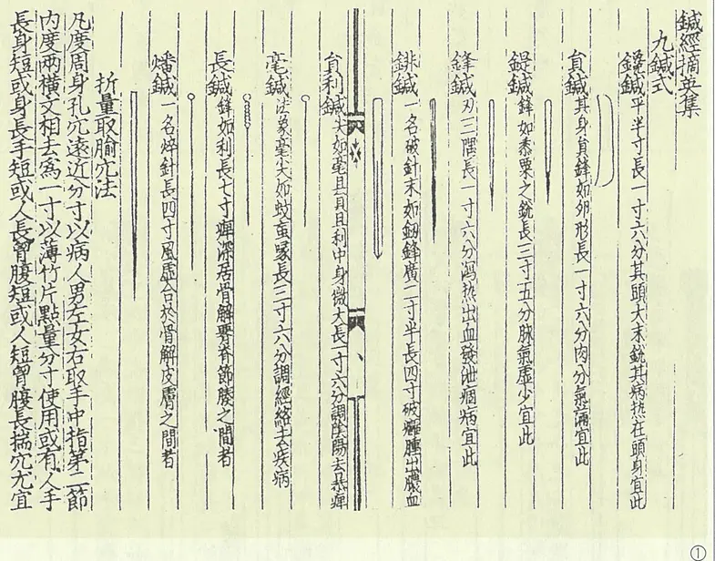
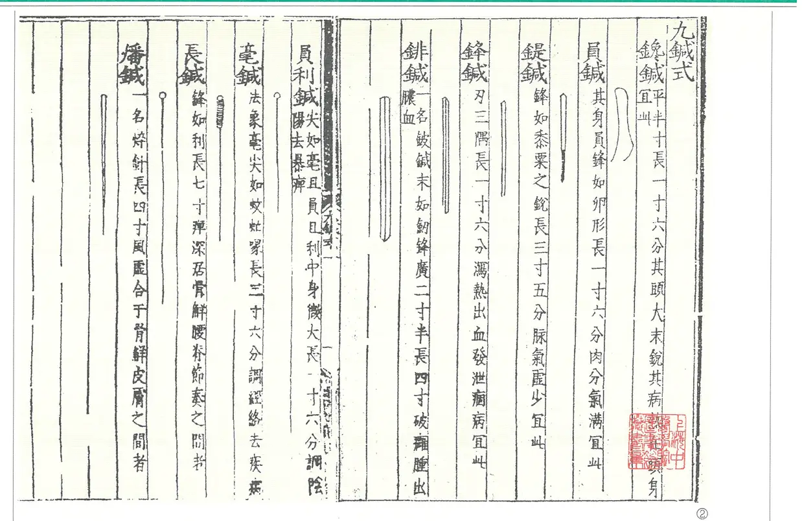
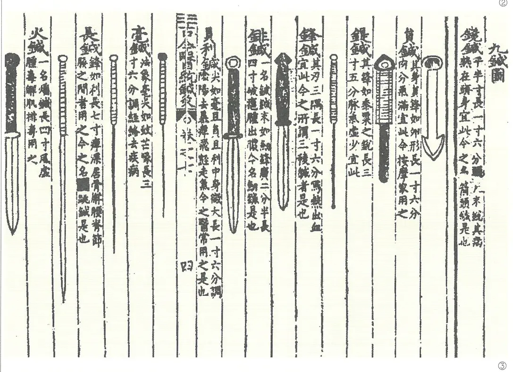
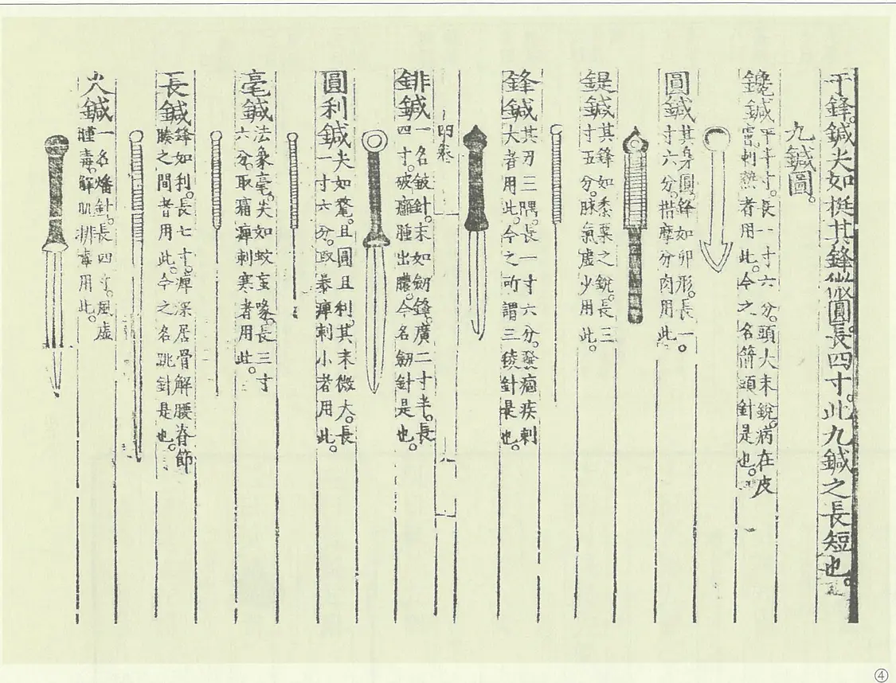
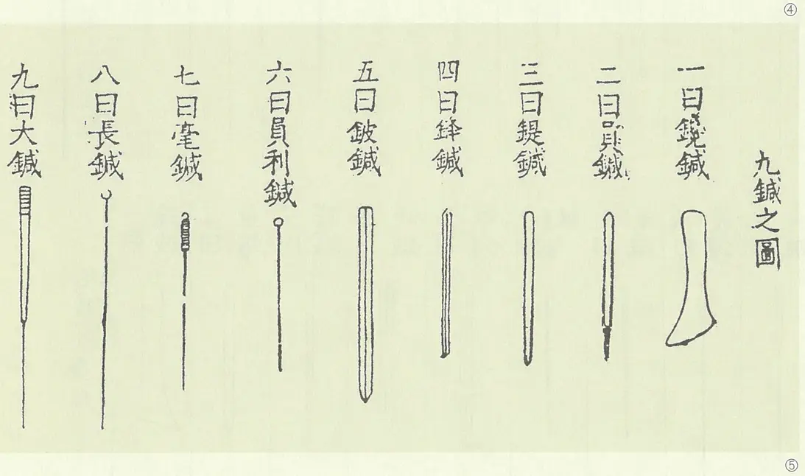
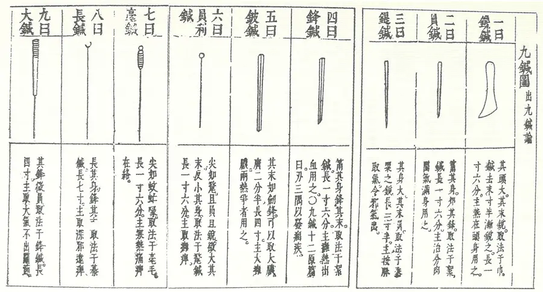
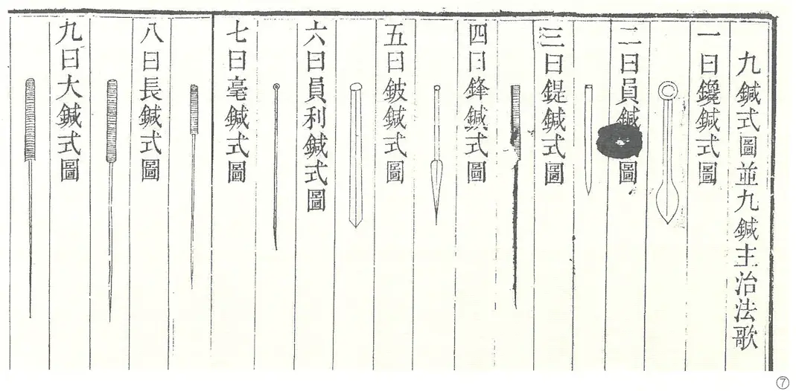
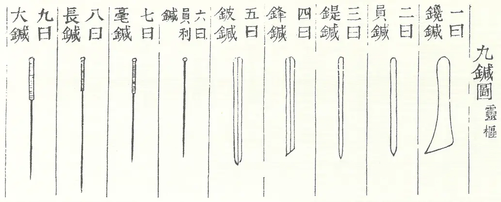

중국침구사도감 하권
이 자료는 중국 황용상(黃龍祥) 선생의 저서 『中國鍼灸史圖鑑』(靑島出版社)를 AI로 번역하여, 개인 학습 목적으로 만든 자료입니다. 일체의 상업적 이용과 배포를 금합니다.
본 번역은 원서의 학습을 돕기 위한 것이며, 원서 구매를 권장합니다.
AI를 통한 번역인 만큼 오류가 있을 수 있음을 알려 둡니다.
일러두기 (옮긴이)
1. 원서는 그림이 본체인 도감이다. 그림은 낱장으로 자르지 않고 원서 쪽을 통째로 싣고, 그 쪽의 캡션·설명을 번역해 붙였다. 그림을 누르면 크게 볼 수 있다.
2. 그림 안에 찍힌 옛 글(고서 영인·비문·탁본 글씨)은 옮기지 않았다. 영문 머리말·영문 목차·항목 영문 제목도 옮기지 않았다.
3. 항목 번호(001, 001-1 …)와 그림 번호 ①②③, 附圖 번호는 원서 그대로 두었다.
4. 본문 사이의 p.N 은 원서 PDF 의 물리 쪽 번호다(원서에 인쇄된 쪽 번호와 다르다).
5. 원서의 오식이나 뜻이 서지 않는 글자는 본문을 원서대로 두고, 그 자리에 번호를 달아 〔역주〕로 밝혔다. 역주에는 확인한 사실과 추정을 나누어 적었다.
6. 부록의 색인·참고 서목은 원문 그대로 두고 편·절 표제만 번역했다.
이 전자책 쓰는 법
위쪽 도구 막대의 단추와, 본문 글자를 골라 쓰는 메모·형광펜 기능이 있습니다. 메모와 고친 글은 이 브라우저에 저장됩니다(맨 아래 「저장되는 곳」 참고).
위쪽 도구 막대
- ☰
- 목차 열기·닫기 (화면이 좁을 때). 목차 항목을 누르면 그 자리로 가고 목차는 닫힙니다.
- A− · A+
- 글자 크기를 한 단계씩 줄이고 키웁니다(13~26px). 고른 크기는 다음에 열어도 그대로입니다.
- 🌙
- 어두운 화면 켜기·끄기. 이것도 기억됩니다.
- p.
- 본문 사이의 원서 쪽 표시(p.12 등)를 보이거나 숨깁니다.
- ✏️ 편집
- 누르면 편집 모드가 되어 문단 글자를 직접 고칠 수 있습니다(오역을 바로잡을 때 등). 고친 글은 바로 저장되고, 고친 문단 왼쪽에 ✎ 표시가 붙습니다. 원래 글과 똑같이 되돌리면 표시도 사라집니다. 다시 누르면 편집이 끝납니다. 편집 중에는 형광펜·메모 메뉴가 뜨지 않습니다.
- 📝 메모
- 메모·형광펜·밑줄을 모아 보는 창을 열고 닫습니다. 전체·메모·마킹으로 나눠 보고, 낱말로 찾을 수 있으며, 항목을 누르면 본문 그 자리로 갑니다. 단추 옆 숫자는 메모와 마킹을 합친 개수입니다.
- ⬇ 저장
- 메모·형광펜·밑줄·고친 글을 담은 이 책 파일(HTML)을 내려받습니다. 묻는 창에서 [확인]은 늘 같은 이름(「…_작업본.html」)으로 저장해 덮어쓰고, [취소]는 날짜가 붙은 백업본으로 따로 저장합니다.
본문 글자를 골라서
마우스로 글자를 끌어 고르면(휴대폰은 길게 눌러 고르면) 작은 메뉴가 뜹니다. 휴대폰에서는 메뉴가 화면 아래쪽에 뜹니다.
- 📝 메모
- 고른 글에 메모를 답니다. 메모를 단 글에는 표시가 남고, 누르면 메모를 보고 고치거나 지울 수 있습니다.
- 형광
- 노랑·분홍·파랑·초록 네 가지 색으로 칠합니다.
- 밑줄
- 같은 네 가지 색으로 밑줄을 긋습니다.
- 칠한 곳 누르기
- 형광펜·밑줄을 누르면 색을 바꾸거나 지울 수 있습니다.
- 여러 문단
- 여러 문단에 걸쳐 골라도 됩니다. 형광펜·밑줄은 문단마다 나뉘어 칠해집니다. 여러 문단에 단 메모는 본문에 표시가 남지 않고 메모 창에만 보입니다.
문단 메모
- 💬
- 문단에 마우스를 올리면 오른쪽에 💬가 보입니다. 누르면 그 문단 전체에 메모를 답니다. 메모가 있는 문단은 💬가 늘 보입니다.
목차
- ▼ · ▶
- 목차 항목을 접고 펼칩니다. 목차 위의 「모두 펼치기」·「모두 접기」로 한꺼번에 할 수도 있습니다.
- 지금 위치
- 읽고 있는 자리의 항목이 목차에 강조되고, 목차도 그 자리로 따라 움직입니다.
- 원제 보기
- 목차 제목에 마우스를 올리면 한자 원제가 보입니다.
- 폭 조절
- (PC) 목차 오른쪽 경계를 끌어 넓히거나 좁힙니다. 경계를 두 번 누르면 기본 폭으로 돌아갑니다.
단축키
- Ctrl + M
- 메모 창 열기·닫기
- Ctrl + Enter
- 메모 쓰는 중에 저장
- Esc
- 떠 있는 메뉴·메모 쓰기 창 닫기
저장되는 곳 — 꼭 읽어 주세요
- 글자 크기·어두운 화면·메모·형광펜·밑줄·고친 글은 모두 지금 쓰는 브라우저 안에 저장됩니다. 어디로도 보내지 않습니다.
- 그래서 다른 컴퓨터·휴대폰·다른 브라우저에서는 보이지 않고, 브라우저의 사이트 데이터(방문 기록·쿠키 등)를 지우면 함께 사라집니다. 가끔 ⬇ 저장으로 파일을 받아 두세요.
- 받아 둔 파일을 다른 곳에서 열면 그 안에 담긴 메모·고친 글이 그 브라우저로 옮겨집니다. 다만 그 브라우저에서 이 책에 메모나 마킹을 한 번이라도 한 적이 있으면, 이미 있는 것을 덮어쓰지 않으려고 옮기지 않습니다.
p.525
중국침구사도감(中國鍼灸史圖鑑) 하
주편 황용상(黃龍祥)
협편 장립검(張立劍) 염승기(冉升起) 장수신(張守信)
서문빈(徐文斌) 왕용(王勇) 석굉(石宏)
왕덕민(王德敏)（복양시중의원(濮陽市中醫院)）
손영현(孫永顯)（산동성 청도요양원(山東省靑島療養院)）
이 책은 국가과학기술부 기초성 사업 전항기금(專項基金)의 지원을 받아 출판되었다.
청도출판사(靑島出版社)
p.527
제3편기구(器具)와 기법(技法)— 침구의 기법
p.529
목차
p.530
침구에서 말로 표현하기 가장 어려운 것이 수법(手法)이다. 그래서 침법은 “반드시 스승에게 배워야 행할 수 있다[須師乃行]”고 하였다. 침 기구와 침법, 뜸 기구와 구법은 서로 떼어 놓을 수 없다는 점을 고려하여 이 부분의 그림은 침 기구·자법, 뜸 기구·구법의 두 큰 갈래로 나누었다. 현존하는 가장 이른 금속 침 기구 실물로는 서한(西漢) 유승(劉勝)의 무덤에서 출토된 금침 네 개를 꼽는 것이 일반적이다. 침 기구의 전신인 폄석(砭石)의 경우, 이른 시기 출토물 가운데 중의학계에서 「폄석」으로 인정한 것이 적지 않지만, 이 돌들이 당시 병을 치료하는 데 쓰였거나 주로 치료용이었음을 증명할 명확한 문헌 기록이나 다른 믿을 만한 방증이 아직 없으므로, 신중을 기하여 이 도감에는 당분간 싣지 않는다.
p.533
제1장침 기구(鍼具)
중의학의 가장 이른 경전인 『황제내경(黃帝內經)』에는 침 기구의 형태와 쓰임이 자세히 기술되어 있으나, 아쉽게도 전해 오는 판본에는 그에 해당하는 침 기구 그림이 없다. 전해 오는 옛 의서 가운데서는 원대(元代)의 『침경적영집(鍼經摘英集)』이 처음으로 「구침도(九鍼圖)」를 그렸고, 이 그림은 명(明) 가정(嘉靖) 연간 고무(高武)의 『침구절요(鍼灸節要)』에 옮겨 실렸다. 고무 이후 명청(明淸)의 의가들은 당시 침구 임상의 실제에 맞추어 「구침도」를 차례로 수정하였다. 현존하는 가장 이른 침 기구 실물은 서한 유승의 무덤에서 출토된 금침으로 보는 것이 일반적인데, 그 모양은 『황제내경』의 기록과 비슷한 데가 있다. 이 밖에 명청 시기의 외과·안과 등의 침 기구와 관련 침 기구 그림도 전해 오는 것이 있다.
특기할 만한 것은, 청(淸) 초에 두진과(痘疹科)를 두었고 청대에 두진 치료 경험이 상당히 풍부하게 쌓여 「도두침법(挑痘鍼法)」과 그 전용 침 기구가 생겼다는 점이다.
1.한묘(漢墓) 금침(金鍼)
1968년 하북성(河北省) 만성(滿城)의 서한 유승 무덤에서 출토되었다. 금침 네 개가 온전하고 만듦새가 정교하다. 침의 길이는 6.5~6.9cm이다. 침자루는 대략 네모꼴이고, 위에서 1/3쯤 되는 곳에 둥근 구멍이 하나 있다. 침몸은 둥글며, 모양이 『영추(靈樞)』에 기록된 봉침(鋒鍼)·호침(毫鍼)·시침(鍉鍼)과 비슷하다.
길잡이 글(導讀)
출토된 이 금침 네 개에는 아직 풀리지 않은 의문이 하나 있다. 네 침의 자루에 뚫린 둥근 구멍은 무슨 용도였을까?
159한묘(漢墓) 금침(金鍼)
하북성박물관(河北省博物館) 소장
부도(附圖) 3-1 감숙성(甘肅省) 임조현(臨洮縣) 마가요(馬家窯) 출토 골침(骨鍼)
p.534
160모조 한묘(漢墓) 금침(金鍼)
중국중의연구원 침구연구소 모조 제작
2.고대 구침(九鍼) 모형과 그림
1.옛 구침(古九鍼) 모형
161-1옛 구침을 본떠 만든 구침(상품)
소주의료용품공장(蘇州醫療用品廠) 제작
중국중의연구원(中國中醫研究院) 의사문헌연구소(醫史文獻所) 감수 제작
그림 ①~③
① zy.jz.1 형
② zy.jz.2 형
③ zy.jz.3 형
p.536
161-2옛 구침(九鍼) 모조 모형
소주의료용품공장 제작
중국침구박물관(中國鍼灸博物館) 소장
162모조 옛 구침(九鍼)
중국침구박물관 소장
p.537
2.옛 구침도(古九鍼圖)
『영추』에 기록된 침 기구는 「구침」이지만, 그렇다고 당시 임상에서 실제로 쓴 침 기구가 꼭 아홉 가지였다는 뜻은 아니다. 예를 들어 『내경(內經)』과 후대 문헌에서 「원침(圓鍼)」을 쓴 실례는 거의 보이지 않는다. 또 「원리침(圓利鍼)」과 「호침」은 형태로도 적응증으로도 뚜렷한 차이를 찾기 어렵다. 그러니 아홉 갈래로 나눈 것은 아마도 주로 「구(九)」라는 「천지의 큰 수[天地之大數]」를 채우기 위해서였을 것이다. 후대 의서에 실린 「구침」의 모양과 쓰임은 대체로 『영추』와 같지만, 시기마다 문헌에 붙은 「구침도」가 서로 달라 어느 정도는 시대에 따른 침 기구의 변화를 보여 준다.
구침의 용도에 관한 후대 의서의 기록은 『영추』의 범위를 벗어나지 않지만, 실제 운용에서는 시대마다 의가들의 경험이 달랐다. 예를 들어 『영추』는 주로 피침(鈹鍼)으로 옹종의 고름을 터뜨렸으나, 금원(金元)의 명의 장종정(張從正)은 주로 피침으로 방혈(放血)하였다. 『영추』는 「대침(大鍼)」으로 「관절의 물[機關之水]」을 빼냈으나, 『침경적영집』은 「대침」을 화침(火鍼) 기구로 쓴다고 분명히 밝혔고, 원 이후로는 대부분 이 설을 따랐다. 한편 수당(隋唐) 시기의 화침은 병에 따라 여러 가지 다른 침 기구를 골라 써야 했다.
현대 침구 임상에서 흔히 쓰는 침 기구는 『내경』 시대만큼 많지 않은 듯하지만, 현대의 침 기구는 대개 종류마다 규격이 여럿이어서 적용 범위가 넓어졌다. 오늘날의 「호침」은 사실상 『내경』의 「원리침」·「장침(長鍼)」·「호침」 세 가지를 아우른다. 이 밖에 오랜 임상 실천을 거쳐 현대 의가들이 새 침 기구를 몇 가지 만들어 쓰기도 했는데, 예를 들어 『내경』의 「참침(鑱鍼)」과 「양자(揚刺)」를 바탕으로 「매화침(梅花鍼)」이 생겼다.
163구침도(九鍼圖)
그림 ①~⑧
①원(元)·두사경(杜思敬) 『침경적영집(鍼經摘英集)』 구침도
②명(明)·고무(高武) 『침구절요(鍼灸節要)』 구침도
◎이 그림은 『침경적영집』에서 옮겨 실은 것이다.
③명·서춘보(徐春甫) 『고금의통(古今醫統)』 구침도
④명·양계주(楊繼洲) 『침구대성(鍼灸大成)』 구침도
⑤명·마시(馬蒔) 『영추주증발미(靈樞注證發微)』 구침도
⑥명·장개빈(張介賓) 『유경도익(類經圖翼)』 구침도
⑦청(淸)·오겸(吳謙) 등 『의종금감(醫宗金鑑)』 구침도
◎이 그림의 시침(鍉鍼)과 봉침(鋒鍼) 도식은 앞 시대 문헌과 비교해 변화가 크다.
⑧청·이학천(李學川) 『침구봉원(鍼灸逢源)』 구침도
◎이 그림은 『유경도익』에서 옮겨 실은 것이다.

p.538


p.539


p.540



p.541
3.침도(鍼刀)
의학이 발전하면서 침구과 외의 다른 전문 과에서도 각 과의 특성에 따라 『영추』에 기록된 옛 구침을 바탕으로 쓰는 침 기구가 변해 갔다. 예를 들어 명대의 『심시요함(審視瑤函)』에는 안과 침 기구 그림이, 청대의 『양과회수(瘍科會粹)』에는 외과 침 기구 그림이 실렸고, 『의종금감』에는 청대 특유의 「도두침(挑痘鍼)」까지 실렸다.
164『심시요함(審視瑤函)』 안과 금침(金鍼)
명(明)／부인우(傅仁宇)
1642년／명간본(明刊本)
중국중의연구원 도서관 소장
p.542
165『심시요함』 안과 침도(鍼刀)
166『의종금감(醫宗金鑑)』1 도두침(挑痘鍼)
〔역주 1〕 원서에는 「医金宗鉴」으로 인쇄되어 있으나, 吴谦 등이 건륭 7년(1742)에 펴낸 책의 이름은 「医宗金鉴」이므로 글자 순서가 뒤바뀐 오식으로 보여 바로잡아 옮겼다.(근거: 『医宗金鉴』 서지 조회, 같은 항목의 「清／吴谦等·清乾隆七年刊本」)
청(淸)／오겸(吳謙) 등
청 건륭(乾隆) 7년 간본
◎청 초에 두진과(痘疹科)2를 두었고 청대에 두진(痘疹) 치료 경험이 상당히 풍부하게 쌓여 「도두침법(挑痘鍼法)」이 생겼다. 이 그림이 바로 청대에 두진을 따는 데 쓴 침이다.
〔역주 2〕 원서에는 이 문장의 두 곳 모두 「痘诊」으로 인쇄되어 있으나, 같은 책 앞쪽의 같은 문장은 「痘疹」으로 적었고 뜻으로도 「痘疹」이어야 하므로 오식으로 보여 바로잡아 옮겼다.(근거: 같은 책 물리 533쪽)
p.543
167『양과회수(瘍科會粹)』 침도
청／손진원(孫震元)
◎그림의 피침(鈹鍼)은 규격이 6가지나 되어 『영추』 「피침」을 새롭게 발전시킨 것이다. 후침(喉鍼)은 후옹(喉癰)을 찌르는 침 기구이고, 구침(鉤鍼)은 주로 안과에 쓰며, 호침·삼릉침(三稜鍼)은 임상 각 과에서 두루 쓰고, 낙철(烙鐵)은 외과에 쓴다. 이로 보아 그림의 침 기구는 실은 임상 각 과를 위해 갖춘 것이지 외과에서만 쓴 것이 아니다.
그림 ①~②
p.544
4.티베트 의학[藏醫]의 의료 기구
168티베트 의학(藏醫) 문헌의 의료 기구 그림
청 옹정(雍正) 9년판
북경대학 의학부 도서관 소장
그림 ①~③
p.545
169『사부의전(四部醫典)』 계열 괘도(掛圖)의 의료 기구 그림
5.현대 침 기구
170형태가 다른 여러 호침(毫鍼)
중국침구박물관 소장
p.546
171화타(華佗) 상표 침 기구
중국침구박물관 소장
1721950년대 침 기구
중국침구박물관 소장
◎1950년대에 전시된 침구 의료 기구이다. 그 가운데 상당수는 손으로 만든 것이어서, 당시 형편이 닿는 대로 간소하게 침구 기구를 만들던 시대의 특징을 엿볼 수 있다.
그림 ①~⑦
p.548
173하씨(賀氏)（보인(普仁)） 화침(火鍼)
174사씨(師氏)（회당(懷堂)） 화침
175피부침(皮膚鍼)
중국침구박물관 소장
그림 ①~②
p.549
176망침(芒鍼)
중국침구박물관 소장
그림 ①~②
1771960년대 전침기(電鍼器)
중국중의연구원 침구연구소 소장
그림 ①~②
p.550
178일본 침 기구
1964년 일본 오카베 소도(岡部素道) 기증
중국침구박물관 소장
그림 ①~③
②일본 은침은 머리카락처럼 가늘다
p.551
제2장침법(鍼法)과 자법(刺法)
침법과 수법은 마음으로 깨닫는 데 있어 그림으로 설명하기 어렵다. 그래서 옛날에는 자법에 관한 그림이 많지 않았고, 그나마 대부분 『난경(難經)』의 자법을 풀이한 문헌에 보인다. 근현대에는 자구법(刺灸法)이 비교적 빠르게 발전하여, 전통 침법 외에 전침법(電鍼法)·이침법(耳鍼法)·두침법(頭鍼法)·수족침법(手足鍼法) 등이 새로 만들어졌다.
1.자오유주침법(子午流注鍼法)
자오유주침법 그림은 금대(金代) 염명광(閻明廣)의 『자오유주침경(子午流注鍼經)』에 보인다. 그런데 현존하는 천일각(天一閣) 소장 『침구사서(鍼灸四書)』 잔본과 통행본인 인민위생출판사(人民衛生出版社) 『침구사서』본에는 모두 이 침법 그림 한 벌이 빠져 있다. 반면 북경도서관 소장 명초본(明抄本) 『보제방(普濟方)』과 대만 「고궁박물원(故宮博物院)」 소장 성화(成化) 9년（1473년） 신간본 『침구사서』에는 모두 이 그림이 남아 있다. 현대 여러 학자가 만든 「자오유주침법」 회전판은 실은 이 그림을 바탕으로 변형한 것이다.
179『자오유주침경(子午流注鍼經)』 침법도
◎명초본 『보제방』에서 뽑음
그림 ①~③
p.553
2.침자보사도(鍼刺補瀉圖)
180침구보사도(鍼灸補瀉圖)
스리랑카
도화지／96×80cm
중국침구박물관 소장
그림 ①~③
p.555
3.침법도(鍼法圖)
181이혈(耳穴) 모형
182이혈 괘도(掛圖)
p.556
183두침요법(頭鍼療法) 괘도（내부 참고）
p.557
184전침요법(電鍼療法) 자극 부위도
p.559
185인체 반사구 요법도(反射區療法圖)
p.560
제3장뜸 재료[灸材]와 뜸 기구[灸具]
예나 지금이나 뜸을 뜨는 재료는 쑥잎으로 만든 애융(艾絨)이 주를 이룬다. 『태평혜민화제국방(太平惠民和劑局方)』 권8에 숙애(熟艾) 만드는 법이 실려 있다. “오래 묵은 누런 쑥을 양에 관계없이 잎만 골라 절구에 넣고 나무 공이로 가볍게 찧어 부드럽게 한 뒤, 고운 체로 쳐서 푸른 찌꺼기를 걸러 내고, 다시 찧고 다시 체로 친다. 이렇게 세 번 한 다음, 따로 말총 체로 거르고, 또다시 찧고 다시 쳐서, 부드럽고 곱고 누렇게 익을 때까지 한다.(陳久黃艾，不以多少，擇取葉入臼內，用木杵輕擣令熟，以細篩隔去青渣，再擣再篩。如此三次，別以馬尾羅子隔之，更再擣，再羅，候柔細黃熟為度。)”
애주(艾炷)는 손으로 빚은 원뿔꼴의 작은 애융 덩이, 또는 기계로 만든 애주 상품이다. 전통적으로 손으로 빚으며, 애주기(艾炷器)로 만들 수도 있다. 애주기는 애주 틀·누름대·탐침 세 부분으로 되어 있다. 알맞은 양의 애융을 애주 틀의 빈 구멍에 가득 채우고 누름대로 단단히 눌러 다진 다음, 탐침으로 뒷면의 작은 구멍에서 애주를 밀어내면 완성된다.
옛날의 직접구(直接灸)는 뜸 기구를 쓰지 않았고, 간접구법도 매우 단순하여 전용 기구의 도움을 받는 일이 드물었다. 근현대에 구법이 꾸준히 발전하면서 뜸 기구도 점점 늘어났다.
1.뜸 재료
186쑥잎과 여러 쑥 제품, 애주기(艾炷器)
2.뜸 기구
187『구법비전(灸法秘傳)』 구잔도(灸盞圖)
청(淸)／뇌풍(雷豐)
◎『구법비전』은 내용이 매우 간단하여, 「구잔구법(灸盞灸法)」 한 가지와 이 구법으로 치료하는 70가지 병증을 기술했을 뿐이다.
이 구법의 내용은 다음과 같다.
“옛 성인이 구침(九鍼)을 썼으나 실전된 지 오래되었다. 요즘 사람 가운데 어쩌다 침을 쓰는 이는 침법을 모를 뿐 아니라 『명당(明堂)』에도 밝지 못하며, 구법 또한 그러하다. 이제 은잔격강구법(銀盞隔薑灸法)을 쓰면 만에 하나도 실수가 없다. 이 법을 쓰려는 사람은 반드시 이 모양을 본으로 삼아야 한다. 네 둘레의 은판은 조금 두껍게 하고 바닥은 얇게 하며, 구멍을 몇 개 뚫어야 하고, 아래에 발 넷을 다는데 높이는 1푼쯤으로 한다. 잔의 발을 생강 조각에 박고, 생강에도 구멍을 몇 개 뚫어 잔의 구멍과 통하게 하여 약기운이 경락과 장부로 스며들 수 있게 한다.(古聖用九針，失傳久矣。今人偶用者不但不諳針法，亦且不熟『明堂』，至於灸法亦然也。今用銀盞隔薑灸法，萬無一失。凡欲用此法者，須倣此樣為式，四圍銀片稍厚，底宜薄，須穿數孔，下用四足，計高一分許。將盞足釘在生薑片上，薑上亦穿數孔，與盞孔相通，俾藥氣可以透入經絡臟腑也。)”
“뜸을 뜨는 법은 다음과 같다. 두께 2푼쯤 되는 큰 생강 한 조각을 써서 구잔의 발을 생강 조각 위에 박고, 구잔의 구멍에 맞추어 은침으로 생강 조각을 뚫은 다음, 뜸 뜰 혈 위에 평평하게 놓는다. 곧 애융을 한 덩이로 빚어 잔 안에 놓고, 다시 약재를 올린 뒤 쑥에 불을 붙인다. 조금 지나면 약기운이 스며든다. 너무 뜨거워 견디기 어려우면 은잔을 잠시 들었다가 곧 다시 내려놓는다. 잔 안의 약이 다 타 가면 들어내고 새것으로 바꾼다. 한 번에 약을 서너 차례 갈면 마칠 수 있으며, 하루에 한 번이든 두 번이든 상관없다.(灸法，用生薑一大片，厚二分許，將灸盞之足釘在薑片之上，照灸盞之孔將銀針穿通薑片，平放應灸穴上，即將艾絨捏作一團，置於盞內，再上藥料，將艾點燃。少頃則藥氣即可透入，如覺熱甚難禁，可將銀盞提起片時，仍即放下。看盞內藥將燃盡，即取起，另換。每一次換藥三四回便可收止，每日或一次，或兩次弗論。)” 위의 「구잔」 구법은 함풍(咸豐) 연간 섭규(葉圭)의 「면완(麵碗)」 구법에서 곧바로 발전해 나온 것이다.
p.562
188여러 가지 뜸 치료 기구
중국침구박물관(中國鍼灸博物館) 소장
그림 ①~⑤
②애조(艾條) 훈구기(熏灸器)
③중국중의연구원(中國中醫研究院) 침구연구소 제작
온구기(溫灸器)
④일본 뜸 기구
⑤애주(艾炷) 만드는 기구
p.566
189성도중의학원(成都中醫學院) 제작 현구기(懸灸器)
190죽관(竹罐)
p.567
제4장구법(灸法)
침구사에는 취혈법에 특정한 요구가 있는 구법이 한 부류 있다. 이런 특수한 뜸 취혈법은 대개 어떤 특정 병증을 겨냥한 전용 구법으로, 옹저(癰疽)를 치료하는 「기죽마구법(騎竹馬灸法)」, 노질(勞疾)을 치료하는 「사화혈구법(四花穴灸法)」 등이 그렇다.
「사화혈구법」은 당대(唐代) 최지제(崔知悌)의 『최씨찬요방(崔氏纂要方)』에 처음 실렸고, 『신당서(新唐書)』 「예문지(藝文志)」에는 또 최지제의 『골증병구방(骨蒸病灸方)』 1권이 실려 있으나, 이 두 전본은 일찍 없어졌다. 송나라 사람이 최씨의 원서를 바탕으로 책 한 권을 다시 엮어 「최지제구로법(崔知悌灸勞法)」이라 제목을 붙였는데（『송사(宋史)』 「예문지」 참조）, 이 책은 송대에 전본이 여럿 있었고 석각본(石刻本)도 있었다. 지금 최씨의 『골증병구방』 원서는 이미 없어졌으나 그 내용은 『외대비요(外臺祕要)』 제12권에 남아 있다. 송대의 『최지제구로법』도 원본은 전하지 않지만, 현존본 『소심양방(蘇沈良方)』·『엄씨제생방(嚴氏濟生方)』에 실린 『최승상구로법(崔丞相灸勞法)』은 당시 비릉군(毗陵郡)의 석각을 근거로 다른 여러 본의 『최씨구로법』을 참고하여 엮은 것이다.
1.사화구(四花灸)
송나라 사람이 다시 엮은 『최지제구로법』이 송대에 널리 퍼졌기 때문에, 송대와 그 이후 의서에 실린 「최씨사화구법(崔氏四花灸法)」은 대부분 직접 또는 간접으로 이 책에서 나왔고 취혈법에도 차이가 없다. 그런데 남송(南宋)의 왕집중(王執中)이 『침구자생경(鍼灸資生經)』에 옮겨 실은 『최지제구로법』의 한 대목은 글에 잘못이 있고 그림도 없어서, 그 네모꼴을 어떻게 놓는지 확정할 수 없다. 마름모꼴로 놓으면 이렇게 잡은 「사화」는 다른 책과 다르지 않지만, 정사각형으로 놓으면 여러 책과 맞지 않는다. 글의 묘사로 보면 뒤의 경우일 가능성이 크다. 명대 고무(高武)는 『침구취영(鍼灸聚英)』에서 『자생경』의 사화혈 뜸 대목을 옮겨 적은 뒤 안어(按語)를 한 단락 덧붙였는데, 고무는 왕집중의 안어에 나오는 네모난 종이를 척추에 맞대어 정사각형으로 놓는 것으로 이해했음이 분명하다. 이렇게 취혈하면 최씨의 원래 방법과 크게 달라진다. 그 뒤 양계주(楊繼洲)의 『침구대성(鍼灸大成)』이 『침구취영』의 글을 옮겨 실었고, 오늘날 사람들도 자세히 살피지 못하여, 「사화」 뜸에 대한 서술은 대부분 고무의 잘못된 설을 따르고 있다. 사실 고무의 이해대로 재어 취혈하면, 그 자리는 「격수(膈俞)」혈에서 척추 쪽으로 약 반 촌 들어간 곳과 「간수(肝俞)」·「담수(膽俞)」 사이에서 척추 쪽으로 약 반 촌 들어간 곳에 해당하며, 「격수」·「담수」 두 혈에 바로 놓이지 않는다.
「사화」 구법에 관해서는, 원대 『십약신서(十藥神書)』에 실린 「손자중가전최씨사화혈법(孫子中家傳崔氏四花穴法)」에 전족한 여성을 위한 변통 취혈법이 기록되어 있고 그에 맞는 취혈도도 붙어 있다（그림 192 참조）. 원 이후의 의서로는 명대 지은이 미상의 『경요신서(瓊瑤神書)』, 웅종립(熊宗立)3이 있고, 일본 春鶴堂主人이 엮은 『사화고황도설(四花膏肓圖說)』（약 1800년）은 자료를 폭넓게 모으고 고증이 상당히 자세하여 참고할 만하다（일본 オリエント(오리엔트) 출판사 『임상고전침구전서(臨床古典鍼灸全書)』 제26권 참조）.
〔역주 3〕 원서 글자대로 옮겼다. 원서는 「熊宗立日本春鹤堂主人辑有」로 곧장 이어져 웅종립 뒤에 그의 책 이름 등이 빠진 것으로 보이나, 무엇이 빠졌는지는 다른 자료로 확인하지 못하였다.
최씨 사화혈구법을 인용한 옛 의서
| 서명 | 연대 | 판본 | 실린 그림 수 |
|---|---|---|---|
| 외대비요방(外臺祕要方) | 당·752년 | 송간본(宋刊本) | 그림 없음 |
| 소심양방(蘇沈良方) | 송·1075년 | 명(明) 가정(嘉靖) 각본 | 11 |
| 성제총록(聖濟總錄) | 송·1117년 | 일본 활자본 | 11 |
| 유유신서(幼幼新書) | 송·1150년 | 일본 초본(抄本) | 11 |
| 엄씨제생방(嚴氏濟生方) | 송·1253년 | 일본 교호(享保) 19년 | 11 |
| 만안방(萬安方) | 1315년 | 일본 엔쿄(延享) 2년 | 11 |
| 손자중가전최씨사화혈법(孫子中家傳崔氏四花穴法) | 원대 | 『십약신서(十藥神書)』본 | 12 |
p.568
191사화혈구법(四花穴灸法)
p.571
192여러 의가의 사화혈(四花穴) 취혈법
그림 ①~⑪
①송 『성제총록』
②송 『엄씨제생방(嚴氏濟生方)』
③일본 『만안방(萬安方)』
④—1~④—2
원(元) 『손자중가전최씨사화혈법(孫子中家傳崔氏四花穴法)』
⑤명(明) 『건곤생의(乾坤生意)』
⑥명 『신응경(神應經)』
⑦명간 3권본 『동인도경(銅人圖經)』
⑧명 『침구대성(鍼灸大成)』
⑨명·주정신(朱鼎臣) 『침구전서(鍼灸全書)』
⑩명 『침구대전(鍼灸大全)』
p.574
2.기죽마구(騎竹馬灸)
기죽마구법은 옛날 외과의 옹저병을 치료하던 특수한 구법으로, 송대보다 이르게 형성되지는 않았다. 「기죽마구법」을 가장 먼저 실은 의서는 외과 전문서 『위제보서(衛濟寶書)』（1170년）인데, 현존하는 『사고전서(四庫全書)』본에는 글만 있고 그림이 없다. 그런데 그 편의 글 아래에 “이 구법은 사람을 살린 일이 매우 많고 곧바로 신효가 있으므로 판에 새겨 『보서(寶書)』 안에 붙인다……(此灸法活人甚多，立有神效，故鋟木附於『寶書』之中……)”라고 적혀 있다. 이로 보아 전해 오는 판본의 「기죽마구법」 글은 아마 후대 사람이 덧붙인 것이지 원서에 본래 있던 것이 아닐 것이다. 송대 의서에 실린 「기죽마구법」은 주로 『비급구법(備急灸法)』 「기죽마구법」과 『외과정요(外科精要)』 「기죽마구법」 두 가지이다. 대조해 보면 『외과정요』에 실린 「기죽마구법」의 취혈법은 『비급구법』의 것과 대체로 같지만, 죽마에 올라타는 방법은 둘이 뚜렷이 다르다（그림 194 참조）. 『비급구법』의 간행 연대（1245년）가 『외과정요』（1264년）보다 이르지만, 원대의 『담료집험비방(澹寮集驗祕方)』은 오히려 『외과정요』의 방법을 「구법(舊法)」, 『비급구법』의 방법을 「신법(新法)」이라 하였으니, 『외과정요』에 실린 구법에 더 이른 연원이 있는 듯하다. 임상의 관점에서 보면 「신법」이 「구법」보다 확실히 더 안전하고 편하다. 그러나 송 이후 『옹저신비구경(癰疽神祕灸經)』·『침구대전(鍼灸大全)』·『침구취영(鍼灸聚英)』·『의학입문(醫學入門)』·『침구대성』 등 의서에 실린 「기죽마구법」은 모두 『외과정요』가 전한 방법을 썼고, 『신응경(神應經)』 한 책만 『비급구법』의 「신법」을 취하였다. 아마 『비급구법』이 널리 퍼지지 못해 후대 침구학에 큰 영향을 미치지 못했기 때문일 것이다.
193송대 『비급구법(備急灸法)』 기죽마도(騎竹馬圖)
p.575
194여러 의가의 기죽마법(騎竹馬法)
◎송 이후 『옹저신비구경(癰疽神祕灸經)』·『침구대전』·『침구취영』·『의학입문』·『침구대성』 등 의서에 실린 「기죽마구법」은 모두 『외과정요』가 전한 방법을 썼고, 『신응경』 한 책만 『비급구법』의 「신법」을 취하였다（전해 오는 판본에는 그림이 없다）. 아마 『비급구법』이 널리 퍼지지 못해 후대 침구학에 큰 영향을 미치지 못했기 때문일 것이다.
그림 ①~⑥
①송 『외과정요(外科精要)』
②원 『담료집험비방(澹寮集驗祕方)』
③원 『옹저신묘구경(癰疽神妙灸經)』4
④명 『침구대전』
⑤명·주정신(朱鼎臣) 『침구전서』
⑥명 『침구대성』
〔역주 4〕 원서 글자대로 옮겼다. 같은 항목 해설에서는 「痈疽神秘灸经」으로 적었고, 원 胡元庆의 이 책은 서지 목록에 「痈疽神秘灸经」으로 올라 있다. 「神妙」라고 부른 예는 확인하지 못하였다.(근거: Wellcome Collection 목록)
p.576
p.577
3.고황혈구(膏肓穴灸)
고황혈구에 관해 말하면, 송대의 침구 임상서는 뜸 처방[灸方]이 많았고 점차 특정 병에 특정 혈을 쓰는 구법이 형성되었다. 장작(莊綽)은 여러 의가의 고황혈 뜸법을 체계적으로 정리하고 자신의 임상 실천을 더하여 『구고황수혈법(灸膏肓腧穴法)』 한 권을 엮어, 여러 의가의 고황혈 뜸법을 자세히 실었다.
195고황혈(膏肓穴) 뜸법 그림
명(明) 성화(成化) 9년 간행 『침구사서(鍼灸四書)』본
대만 고궁박물원(故宮博物院) 소장
그림 ①~⑫
p.582
제5장맺음말
침구 요법은 어떻게 생겨났을까? 시대마다 다른 침 기구 그림들을 한 장 한 장 보고 나면 강렬한 인상이 남는다. 옛 침 기구는 그야말로 고대의 소형 무기 한 벌이라는 것이다. 옛사람의 관념에서 무기, 특히 보검과 요도(腰刀)는 사악한 것을 몰아내고 귀신을 쫓는 힘도 지녔다. 그래서 귀신을 막는 문신(門神)은 대개 보검을 손에 든 모습이고（부도(附圖) 3-2 참조）, 중국 고대의 귀신 잡는 신 종규(鍾馗)도 쇠송곳을 손에 들고 귀신을 쫓는 모습으로 상상되었다. 이리하여 검 모양이나 칼 모양의 쇠붙이에도 귀사(鬼邪)를 몰아내는 힘이 부여되었다. 옛날에는 사람이 병에 걸리는 것도 귀사에 맞은 탓으로 여겼고, 맞은 부위가 다르면 증상도 달랐으므로 「귀타(鬼打)」·「귀격(鬼擊)」·「귀배(鬼排)」 같은 병명이 있었다. 귀사에 맞은 부위, 곧 혈위(穴位)를 침으로 찌르면 귀사를 몰아내 병을 고칠 수 있다고 보았다. 춘추전국 시기 명의의 대표 인물인 편작(扁鵲)이 갖가지 사기에 맞은 병을 치료하는 「십삼귀혈(十三鬼穴)」, 곧 인체의 중요한 수혈(腧穴) 열세 개를 전했다는 것, 육조(六朝) 시기 「추부요귀(秋夫療鬼)」 이야기도 이 관념을 구체적으로 보여 준다. 그리고 이 관념은 옛 중국 백성에게 줄곧 영향을 미쳤다. 『황제내경(黃帝內經)』도 온몸의 수혈을 「사기가 머무는 곳[邪氣之所客]」으로 보고 수혈을 침으로 찔러 그 사기를 없앴다. “사람에게는 대곡(大谷) 12부와 소계(小谿) 354곳이 있는데 12수(俞)가 빠진 것이다. 이는 모두 위기(衛氣)가 머무는 곳이자 사기가 깃드는 곳이니, 침과 폄석으로 그것을 따라 없앤다.(人有大谷十二分，小溪三百五十四名，少十二俞，此皆衛氣之所留止，邪氣之所客也，針石緣而去之。)”（『소문(素問)』 「오장생성(五藏生成)」） 이로 미루어 보면 검 모양·칼 모양·화살 모양의 침 기구로 병을 찌른 것은 처음에는 사기를 몰아내고 귀신을 쫓는 데 목적이 있었을 것이다. 『내경』은 「구침(九鍼)」을 「오병(五兵)」에 견주었을 뿐 아니라, 병법으로 침법을 말하기도 했다.
“병법에 ‘맹렬히 몰려오는 기세를 맞받지 말고, 당당한 진영을 치지 말라’고 하였다. 자법(刺法)에 ‘활활 타는 열에는 찌르지 말고, 줄줄 흐르는 땀에는 찌르지 말며, 혼탁하게 어지러운 맥에는 찌르지 말고, 병과 맥이 서로 거스르는 경우에는 찌르지 말라’고 하였다.(兵法曰：無迎逢逢之氣，無擊堂堂之陣。刺法曰：無刺熇熇之熱，無刺漉漉之汗，無刺渾渾之脈，無刺病與脈相逆者。)”（『영추(靈樞)』 「역순(逆順)」） “침보다 큰 것은 오직 오병뿐이다. 오병은 죽이기 위해 갖춘 것이지 살리는 도구가 아니다. 또 사람은 천지 가운데 가장 귀중한 존재이니 어찌 헤아리지 않을 수 있겠는가? 백성을 다스리는 데도 오직 침이 있을 뿐이다. 침과 오병 가운데 어느 것이 작다 하겠는가?(夫大於針者，惟五兵者焉。五兵者，死之備也，非生之具。且夫人者，天地之鎮也，其不可不參乎？夫治民者，亦唯針焉。夫針之與五兵，其孰小乎？)”（『영추』 「옥판(玉版)」）
옛사람의 이러한 인식은 본초 문헌에 분명히 기록되어 있다.
“철추병(鐵椎柄, 쇠망치 자루): 귀타와, 사나운 귀신이 사람에게 들이닥쳐 중악(中惡)이 된 것을 주로 치료한다.(鐵椎柄：主治鬼打，及強鬼排突人中惡者。)”（『본초강목(本草綱目)』）
“도초(刀鞘, 칼집): 귀타로 갑자기 병을 얻은 것을 주로 치료한다. 요도의 것이 더욱 좋다.(刀鞘：主治鬼打卒得。腰刀者彌佳。)”（『본초강목』）
위의 기록들을 보면 중국의 옛 선조들이 어떻게 「침으로 병을 치료한다」는 인식을 싹틔웠는지 이해하기 어렵지 않다. 게다가 초기의 침법인 사혈[放血]도 주된 목적은 사기를 몰아내는 데 있었다. 『내경』에서는 귀사에 맞아 생긴다고 여긴 병증, 예컨대 「전광(癲狂)」·「학질(瘧疾)」 등을 여전히 침자 사혈법으로 많이 치료했다. 또 「불」도 귀사를 몰아내는 힘이 있다고 여겼기 때문에, 편작이 「횡사전광(橫邪癲狂)」을 치료한 십삼귀혈은 모두 화침법(火鍼法)을 썼다. 물론 불뜸[火灸法]도 흔히 쓰던 치법 가운데 하나였다. 뜸에 쑥을 쓰는 것은 잘 타기 때문만이 아니라 「사기를 몰아내고 귀신을 쫓는[驅邪逐鬼]」 힘이 있다고 여겼기 때문이기도 하다. 지금도 옛 형초(荊楚) 지역에서는 5월 5일에 쑥을 뜯어 사람 모양으로 묶어 문 위에 걸어 사기를 물리치는 풍속이 전해 온다. 이에 대해서는 이건민(李建民) 선생의 전문 고증이 있으니① 참고할 만하다.
이로 보아 「사기를 몰아내고 귀신을 쫓는다」는 관념은 침법과 구법을 낳은 처음 요인 가운데 하나였다.
① 이건민(李建民): 「애화(艾火)와 천화(天火) — 구요법(灸療法) 탄생의 수수께끼」5, 『자연과학사연구(自然科學史研究)』, 2002, 21（4）320—331
〔역주 5〕 원서에는 저자가 「李键民」, 제목 끝이 「之迷」로 인쇄되어 있으나, 같은 쪽 본문의 「李建民」과 논문 서지에 따라 「李建民」·「之谜」의 오식으로 보여 바로잡아 옮겼다.(근거: 中央研究院 기관 저장소 서지, 같은 쪽 본문)
p.583
부도(附圖) 3-2
p.584
p.587
제4편처방(處方)과 취혈(取穴)— 침구의 치료
p.589
목차
p.590
옛 침구 치료 문헌에는 매우 과학적인 표현 방식이 하나 있었다. 침구 처방마다 그 처방의 취혈도(取穴圖)를 붙이고, 그림 위에 처방을 이루는 수혈(腧穴)을 하나하나 표시한 것이다. 옛 침구 유파마다 이론과 경험이 달랐기 때문에 다음 세 가지 상황이 생겼다. 첫째, 같은 혈 이름이 서로 다른 혈일 수 있다. 둘째, 서로 다른 혈 이름이 같은 혈일 수 있다. 셋째, 옛 혈 이름 가운데 오늘날 사람들이 그 부위와 주치 병증을 전혀 모르게 된 것이 적지 않다. 처방 취혈도, 특히 송대 이전의 옛 그림은 위 세 가지 상황을 가려내는 데 매우 중요한 근거가 되므로 문헌 가치가 대단히 높으며, 옛 수혈의 위치와 주치의 원류를 고찰하는 중요한 자료이다 — 수혈 문헌 및 관련 명당도(明堂圖)와 대조하여 연구해야 한다. 또한 이 인물 그림들은 모두 어느 특정 시기의 인물 모습·풍속·복식 등을 반영하므로 회화사·복식사·민속학 등의 연구에 더없이 귀중한 자료를 제공할 수 있다. 그 가치는 이미 침구학의 범위를 훨씬 넘어선다.
현존하는 가장 이른 구방(灸方) 취혈도는 대략 초당(初唐) 시기에 이루어진 작자 미상의 돈황(敦煌) 권자(卷子) 구방（편호: S.6168、S.6262）이다. 후대 침구 치료 문헌에 가장 큰 영향을 준 것은 원대(元代)의 작자 미상 『침구집성(鍼灸集成)』으로, 명대의 『침구첩경(鍼灸捷徑)』, 서씨(徐氏)6 『침구전서(鍼灸全書)』, 양씨(楊氏) 『침구전서』, 『심시요함(審視瑤函)』과 청대의 『침구이학(鍼灸易學)』이 모두 직접 또는 간접으로 그 그림을 옮겨 실었다. 청대 관찬(官撰) 의학 규범 교재인 『의종금감(醫宗金鑑)』에도 침구방 취혈도가 꽤 많이 그려져 있으며（그 뒤 『전오영제록(傳悟靈濟錄)』이 이 그림들을 다시 채색화로 그렸다）, 그 영향을 받아 청말 『침구편용(鍼灸便用)』도 책에 실린 침구방마다 해당 취혈도를 그려 넣었다.
〔역주 6〕 원서 글자대로 옮겼다. 같은 책 다른 자리에서는 이 책을 「朱氏《针灸全书》」·「明·朱鼎臣《针灸全书》」로 적어 「徐」는 「朱」의 잘못일 수 있으나, 다른 자료로는 확인하지 못하였다.
이 밖에 침구방도집이 하나 더 있다 — 『자료첩법(刺療捷法)』7이다. 혈을 고를 때 속칭(俗稱)·이칭(俚稱)을 많이 써서 출처가 따로 있는 듯하고（부도(附圖) 4-1 참조）, 연대도 비교적 늦으므로 여기서는 싣지 않는다.
〔역주 7〕 원서 글자대로 옮겼다. 원서에는 「刺疗捷法」으로 인쇄되어 있는데, 정창(疔瘡)을 찌르는 법의 책이라면 「刺疔捷法」(자정첩법)일 수 있다. 다른 자료로는 확인하지 못하였다.
p.591
부도(附圖) 4-1
p.594
p.595
제1장사본 권자와 석각의 구방도(灸方圖)
돈황 권자 구방 혈도는 원래 끊어지고 이지러져 서명을 알 수 없으므로 예전에는 「구법도(灸法圖)」라고 제목을 붙이고 각각 S.6168、S.6262로 편호를 매겼다. 고찰해 보니 이 두 잔권은 같은 책이었다. 남아 있는 구방은 당대 『천금익방(千金翼方)』 침구권에 많이 보이며 전형적인 구방에 속하지만 정확한 서명은 알 수 없으므로, 우선 이 책을 「일명구방(佚名灸方)」이라고 부른다.
『일명구방』의 수혈 주해 부분은 당대 손사막(孫思邈)의 『천금요방(千金要方)』·『천금익방』 두 책에 함께 보이고, 구방 부분은 『천금익방』에만 보인다. 이는 『일명구방』이 그리 이른 시기에 이루어지지 않았으며 대략 초당 시기의 책임을 시사한다. 내가 근년에 고찰한 결과, 『천금익방』 침구권은 『천금요방』의 침구방을 모은 바탕 위에 초당의 침구 문헌을 보충해 엮은 것으로 밝혀졌기 때문이다.
돈황 권자 『일명구방』은 현존하는 가장 이른 구방 전문서 실물이다. 특히 이 초본(抄本)은 구방마다 뜸자리 그림을 붙였는데, 당시에 이런 형식을 쓴 것은 주로 임상에서 혈을 잡기 쉽게 하려는 것이었다. 한편으로는 오늘날 우리가 「경맥혈(經脈穴)」과 일부 「동명이혈(同名異穴)」·「이명동혈(異名同穴)」 같은 어려운 문제를 가려내는 데에도 구체적이고 믿을 만한 근거를 준다. 예를 들어 현존 구방 잔권에는 수양명(手陽明)·족양명(足陽明)·족태양(足太陽)의 세 「경맥혈」이 들어 있는데, 이 권자의 혈도가 수혈의 구체적 부위를 분명히 표시하여 한눈에 알 수 있으므로 「경맥혈」의 원류를 고찰하는 데 중요한 사료가 된다. 또 「천창(天窗)」은 목 부위 수태양경혈의 혈 이름이면서 머리 부위 독맥혈 「신회(囟會)」의 별명이기도 한데, 예전에는 이 변화를 몰라 수당(隋唐) 시기 침구방 속 머리 부위 독맥혈 「천창」을 모두 목 부위 수태양경혈로 잘못 이해했다. 이제 권자의 뜸자리 그림에 근거하고 전해 오는 관련 사료를 아울러 보면, 침구사의 이런 어려운 문제들이 말끔히 풀린다.
옛날에 의방을 돌에 새긴 것은 주로 널리 전하고 쓰기 편하게 하려는 것이었다. 비교적 이른 석각 침구방은 『용문약방(龍門藥方)』 석각에 보이고, 현존하는 것 가운데 비교적 많고 온전한 침구방 석각은 명(明) 융경(隆慶) 6년 진왕(秦王) 주수중(朱守中)의 석각 『천금보요(千金寶要)』에 보인다.
“경맥혈(經脈穴)”
침구 발전사에는 삼음삼양(三陰三陽)이 경맥 이름으로 쓰였을 뿐 아니라 손목·발목 부위 11（또는 「12」）맥구(脈口)의 이름과 그에 해당하는 혈 이름으로도 쓰인 시기가 분명히 있었다. 십오락맥(十五絡脈)과 이름이 같은 혈을 「낙혈(絡穴)」이라 했으니, 십이경과 이름이 같은 혈은 본래 「경혈(經穴)」이라 부를 수 있었겠지만 「경혈」은 이미 「경맥혈」을 가리키는 말로 쓰이고 있었다. 이 혈들은 뒤에 대부분 십이 「원혈(原穴)」로 바뀌면서 비로소 전용 혈 이름을 갖게 되었다. 이처럼 경맥 이름과 같은 이름의 수혈 — 「경맥혈」은 『황제내경(黃帝內經)』, 『황제명당경(黃帝明堂經)』, 『황제하마경(黃帝蝦蟆經)』, 『금궤옥함경(金匱玉函經)』, 『맥경(脈經)』, 『용문석각약방(龍門石刻藥方)』, 『천금요방』, 『천금익방』, 『외대비요(外臺祕要)』, 돈황 권자에서 송대의 『태평성혜방(太平聖惠方)』에 이르는 옛 의서들에 분명히 기록되어 있다.
p.596
1.돈황(敦煌) 권자 작자 미상 구방도(灸方圖)
196-1당대(唐代) 작자 미상 구방(灸方)
p.602
196-2『천금익방(千金翼方)』 권26 “외퇴풍(猥退風)·반신불수에 뜸뜨는 법(灸猥退風半身不隨法)”
◎위 돈황 권자의 이 구방은 빠진 글자와 틀린 글자가 많으므로 『천금익방』에 따라 보충하고 바로잡아야 한다. 한편 돈황 권자의 구방과 붙은 그림을 보면, 『천금익방』의 이 처방에서 둘째 혈 앞에 혈 이름 「판미(板眉)」가 빠졌음을 알 수 있으니 보충해야 한다. 또 이 혈 이름과 그림에 표시된 부위를 보면, 『천금익방』이 적은 이 혈의 부위 조문 속 「견(肩)」 자는 「미(眉)」 자를 꼴이 비슷해 잘못 쓴 것임을 알 수 있으니 고쳐야 한다. 부위로 보면 「판미」는 실은 「양백(陽白)」혈에 해당한다. 이런 「동혈이명(同穴異名)」 현상은 수당 시기에 유행한 수혈서에 널리 있었다. 마지막으로, 돈황 권자의 이 구방 아래에는 「모두 10곳[凡十處]」이라 했지만 실제 뜸자리는 11곳이다. 이 구방의 글로 보나 붙은 그림으로 보나 「풍부(風府)」혈이 좌우 두 혈이어서 『황제명당경』의 독맥혈 「풍부」와 다르기 때문이다. 이런 「동명이혈(同名異穴)」 현상도 수당 시기에 유행한 수혈 문헌에 널리 있었다.
p.603
196-3『천금익방』 권27 “전포(轉胞)에 뜸뜨는 법(灸轉胞法)”
◎위 돈황 권자에 적힌 수도혈(水道穴)의 주치는 『천금요방』·『천금익방』과 맞지 않는다. 찾아보니 「삼초가 한열을 일으킨다[三焦爲寒熱]」는 『천금요방』 권20과 『천금익방』 권27에서 모두 「소장수(小腸兪)」의 주치이므로, 돈황 권자가 잘못 베낀 것이다.
196-4『천금익방』 권26 “잡구법(雜灸法)”
p.605
196-5『천금익방』 권27 “전포(轉胞)에 뜸뜨는 법(灸轉胞法)”
◎대장수(大腸兪)에서 돈황 권자와 『천금요방』의 주된 차이는 수혈의 부위에 있다. 돈황 권자 구방의 배수혈(背兪穴)은 모두 「2촌 3푼」씩 떨어져 있는데, 이렇게 배수혈을 잡는 법은 분명히 수당 시기의 수혈 문헌에서 나왔으며 『천금요방』과 『천금익방』에도 모두 이 배수혈 취혈법이 실려 있다. 대개 후대 사람이 이 법을 몰라 『천금요방』의 글을 고친 것이다.
「대소장수(大小腸兪)」라는 혈 이름은 『화타침구경(華佗鍼灸經)』에 보이고, 『편작침구경(扁鵲鍼灸經)』에서는 이 혈 이름이 「소장수」이다（게다가 이 책에 실린 배수혈도 「척추를 끼고 좌우 각 1촌 2푼[夾脊左右各一寸二分]」으로 돈황 권자와 맞는다）. 이 두 혈 이름이 각각 돈황 권자와 『천금방(千金方)』에 보이니, 이 이문(異文)은 내력이 오래된 듯하다.
그림 ①～③
이 그림 ②의 「수양명(手陽明)」·「족양명(足陽明)」은 혈 이름으로, 이른바 「경맥혈」이다.
p.606
p.607
196-6『천금익방』 권26 “외퇴풍(猥退風)·반신불수에 뜸뜨는 법(灸猥退風半身不隨法)”
p.608
196-7『천금익방』 권27 “갑자기 발광하여 헛소리하는 것을 다스리는 법(卒發狂言鬼語法)”
◎이 구방은 돈황 권자의 글이 낫다. 『천금익방』에 잘못이 생긴 까닭은 대개 후대 사람이 「수오책(手五冊)」·「족오책(足五冊)」 혈을 알지 못해 함부로 고쳤기 때문이다. 한편 돈황 권자에서 빠진 세 글자는 『천금익방』에 따라 채울 수 있다. 눈여겨볼 점은 이 처방이 21곳에 뜸을 뜨는데 그 가운데 「수오책」·「족오책」이 각 4곳이고 「천창(天窗)」이 1곳이라는 것이다. 여기의 「천창」혈은 우리가 잘 아는 목 부위 수태양소장경혈 「천창」이 아님이 분명하다. 이 구방의 취혈도에 표시된 위치로 보면 머리 정중앙의 혈에 속하고, 『천금익방』 조문으로 보면 이 혈은 바로 독맥의 신회혈(囟會穴)이다. 눈썹 가운데에서 발제까지를 3촌으로 접는다는 것이 알려져 있으니, 코뿌리에서 앞 발제까지는 4촌에 해당한다. 이 길이의 절반을 앞 발제 정중앙에서 위로 재면, 곧 위로 2촌이 바로 「신회」혈 자리이다. 이 증거 하나만으로는 확신하기 어렵다고 한다면, 다음 문헌은 의심할 여지가 없다. 천창 한 혈은 코에서 곧장 위로 발제에 들어가 2촌에 있다（『태평성혜방』 권55）. 신회 한 혈은 일명 천창이다（『의심방(醫心方)』 권2）. 내가 고찰한 바로는 『천금요방』·『천금익방』 침구방 속 「천창」혈은 확인할 수 있는 것은 모두 「신회」혈을 가리키며 수태양경혈 「천창」이 아니다. 이는 적어도 수당 시기에는 「신회」혈을 「천창」이라 부르는 것이 꽤 널리 퍼진 현상이었음을 말해 준다.
p.609
2.석각 침구방도(鍼灸方圖)
197『천금보요(千金寶要)』 침구방
1985년 명(明) 융경비(隆慶碑) 복각
섬서중의학원(陝西中醫學院) 의사박물관(醫史博物館) 소장
◎ 명 융경 6년 진왕 주수중의 석각 『천금보요』 6권은 모두 비석 4기 8면으로, 원(元)·형(亨)·이(利)·정(貞)을 차례로 삼았다. 비석마다 높이 2.27m, 너비 0.97m, 두께 0.22m이며, 지금 섬서성 요현(耀縣) 약왕산(藥王山) 북동(北洞) 약왕대전(藥王大殿) 안에 있다. 이 그림은 1985년 융경 석각을 바탕으로 다시 새긴 복각비로, 지금 섬서중의학원 의사박물관에 소장되어 있다. 중국침구박물관(中國鍼灸博物館)에 이 비석의 탁본(拓本) 전질이 소장되어 있다.
그림 ①～④
p.611
제2장전세(傳世) 문헌의 침구방도
전해 오는 침구 치료도 가운데 문물 가치와 학술 가치를 가장 높이 아우른 것은 원대의 『침구집성(鍼灸集成)』이다. 이 책은 전본이 여럿이지만 원서의 침구방도를 간직한 것은 명대 초본 잔권, 명대 『심시요함』, 청대 『침구이학』 세 가지뿐이다. 이 밖에 『침구집성』의 직접 영향을 받은 침구방도집으로 명대 『침구첩경』, 주씨(朱氏) 『침구전서』, 양씨 『침구전서』가 있다.（부도(附圖) 4-2 참조）
청대 관찬 의서 『의종금감』에 그려진 침구 치료도는 더욱 정밀하며, 그 뒤 『전오영제록』이 『의종금감』의 그림을 다시 채색하여 그렸다. 『침구편용』에 실린 침구방도는 약도(略圖)의 성격을 띠어, 인물 모습보다 혈 자리를 나타내는 데 중점을 두었다.
부도(附圖)4-2 왼쪽부터: 『침구집성』, 『침구첩경』, 주정신(朱鼎臣) 『침구전서』, 진언(陳言) 『침구전서』
p.612
1.한 계통으로 이어진 네 종의 침구방도집
현존하는 명대 초본 『침구집성』 잔권은 권두의 몇 장이 떨어져 나가 서명을 알 수 없다. 당시 이 책을 사들인 둔계(屯溪) 고적서점이 그 체재에 따라 서명을 「침구문답(鍼灸問答)」이라 붙였고, 이후 여러 서목이 모두 이 이름으로 실었다. 『침구지요(鍼灸指要)』（이루어진 연대와 저자 미상）는 이 책을 베낄 때 그 내용을 침방(鍼方)으로 보고 「문답침경(問答鍼經)」이라는 이름을 붙였다. 명초 누영(樓英)의 『의학강목(醫學綱目)』（명대 건양(建陽) 각본）은 이 책의 침방을 인용하면서 「집성(集成)」이라 표시했는데, 명대 이전에 「집성」을 제목으로 한 침구서는 『침구집성』 한 책뿐이다. 따라서 현존하는 「침구문답」이라는 제목의 명대 초본 잔권은 『침구집성』의 한 전본이라고 보아야 한다. 명초 양사기(楊士奇) 등이 칙명을 받들어 엮은 『문연각서목(文淵閣書目)』에 「침구집성 1부, 1책, 결(缺)」이 실려 있고 『비각서목(祕閣書目)』에도 실려 있으니, 이 책이 명대 관고(官庫)에 소장되었음을 알 수 있다. 이제 이 책의 서명을 「침구집성」으로 정한다.
『침구집성』의 침법과 선혈은 『침구집요(鍼灸集要)』에 실린 금원(金元) 시기 침구방집 『직자비전(直刺祕傳)』 및 원대 『침구옥룡경(鍼灸玉龍經)』에 실린 「옥룡가(玉龍歌)」와 매우 가깝다（청대 초본 『침구지요』와 조선 의서 『향약집성방(鄕藥集成方)』이 인용한 「옥룡가」는 곧 『침구집성』과 「옥룡가」를 합편한 것이다）. 세 책의 연대도 서로 가까울 것이다. 또 명초 『경요신서(瓊瑤神書)』에 이미 『침구집성』 침방 9수가 실려 있고, 『침구집성』 침방을 대량으로 모아 실은 명초 『의학강목』이 채록한 의서는 모두 명대 이전 문헌이므로, 『침구집성』이 이루어진 연대는 원대 말엽보다 늦지 않을 것이다.
『침구집성』은 침방 배혈도(配穴圖)와 침방의 두 부분으로 이루어져 있다. 침방 글 부분에는 수혈 주석, 주방(主方), 병안 분석（곧 「문답」 부분）, 부방(附方)（곧 앞 처방이 듣지 않을 때 붙여 둔 다른 처방）이 들어 있다. 그 가운데 「수혈 주석」은 수혈의 부위·귀경·자구법(刺灸法)을 간략히 적었고, 일부 수혈 아래에는 간략한 주치 병증도 달았다. 이런 체재는 송대 침구 시험 답안지와 꽤 비슷하고, 게다가 이 책이 명초 관고에 소장되었던 것을 보면, 『침구집성』은 원대 태의원(太醫院) 의관이 엮었을 가능성이 있다.
명초 『의학강목』, 명대 중엽 『침구첩경』, 명말 『침구대성(鍼灸大成)』·『심시요함』, 청말 『침구지요』, 나아가 조선 의서 『향약집성방』까지 모두 『침구집성』의 침방을 대량으로 싣고 있다. 그 가운데 뒤의 다섯 책은 서로 다른 전본의 『침구집성』 전문을 직접 베꼈고, 『의학강목』은 병증 치료 뒤에 해당하는 『침구집성』 침방을 발췌해 실었으므로 인용한 침방이 적고 여러 권에 흩어져 있다. 『침구집성』의 침방 취혈도에서 직접 영향을 받은 침구방도집으로는 명대 『침구첩경』, 주정신(朱鼎臣) 『침구전서』, 『양경재침구전서(楊敬齋鍼灸全書)』 셋이 있다.
198『침구집성(鍼灸集成)』 전본(傳本)
199『침구집성(鍼灸集成)』 침방도(鍼方圖)
명대 초본(明抄本)
중국중의연구원(中國中醫硏究院) 도서관 소장
그림 ①～(59)
200『심시요함(審視瑤函)』 안과 침방도(鍼方圖)
명(明)／부인우(傅仁宇)
1642년／청(淸) 강희(康熙) 6년 간본
중국중의연구원 도서관 소장
그림 ①~⑫
201『침구첩경(鍼灸捷徑)』 침구방도(鍼灸方圖)
명(明)／하간(何柬)
명간본(明刊本)
일본 구나이초 쇼료부(宮內廳書陵部) 소장
그림 ①~(85)
p.624
p.625
p.626
p.627
p.628
p.629
p.630
p.631
p.632
p.633
p.634
p.635
p.636
p.637
p.638
p.639
202『양경재침구전서(楊敬齋鍼灸全書)』 침구방도(鍼灸方圖)
명(明)／진언(陳言)
1591년／명(明) 만력(萬曆) 간본
중국중의연구원(中國中醫硏究院) 도서관 소장
그림 ①~㊽
p.648
203『침구전서(鍼灸全書)』 침구방도(鍼灸方圖)
명(明)／주정신(朱鼎臣)
1584년／명(明) 만력(萬曆) 간본
일본 국립공문서관(國立公文書館) 나이카쿠문고(內閣文庫) 소장
그림 ①~⑬
p.653
2.『의종금감(醫宗金鑑)』과 『전오영제록(傳悟靈濟錄)』의 그림
『의종금감』은 청 정부가 조직하여 엮은 의학 규범 교재이다. 『전오영제록』은 청대 장연은(張衍恩)이 지었고 청 동치(同治) 13년（1874년）에 이루어졌다. 이 책의 내용은 주로 『유경도익(類經圖翼)』·『의종금감』 두 책에서 모았으며, 원서의 흑백 그림을 채색화로 고쳐 그렸을 뿐이다. 중국중의연구원에 청 동치 13년 고본(稿本)이 소장되어 있다.
204『의종금감(醫宗金鑑)』 침구방도(鍼灸方圖)
그림 ①~㉒
④⑥⑧⑩⑫⑭『전오영제록(傳悟靈濟錄)』 침구방도
p.659
3.『침구편용(鍼灸便用)』의 그림
205『침구편용(鍼灸便用)』 침구방도(鍼灸方圖)
청(淸)／장희순(張希純) 원저／1850년
소원잠(蘇元箴) 재편·그림
청 광서(光緖) 병오（1906년） 간본
북경중의약대학(北京中醫藥大學) 도서관 소장
그림 ①~㉚
p.663
4.그 밖의 침구 치료 취혈도(取穴圖)
206『상청자정추로선방(上淸紫庭追癆仙方)』 구방도(灸方圖)
207『위제보서(衛濟寶書)』 유옹(乳癰) 침자도(鍼刺圖)
p.664
208『능문전수동인지혈(凌門傳授銅人指穴)』 침방도(鍼方圖)
p.665
제3장결어
『천금요방(千金要方)』의 황달 침구 치료방과 전광(癲狂) 침구 치료방에는 모두 취혈도가 붙어 있고, 돈황 권자 구방에도 모두 취혈도가 붙어 있는데, 이 문헌을 실은 『천금익방(千金翼方)』에는 그림이 없다. 이로써 초기 침구 치료 문헌에 그림을 붙이는 일이 꽤 보편적이었다고 추측할 수 있다. 송대 이후 침구방에 취혈도를 붙이지 않는 일이 많아진 것은, 한편으로는 수혈의 위치, 특히 같은 시대 수혈의 위치가 점차 규범화되었기 때문이고, 다른 한편으로는 침구방이 대부분 침구 전문서나 전문 편에 실리게 되어 책 안에 침구 수혈 총설이 따로 있는 경우가 많아（『태평성혜방(太平聖惠方)』·『침구자생경(鍼灸資生經)』 등） 침구방에 취혈도를 붙일 필요가 그만큼 줄었기 때문이다. 그리하여 취혈도를 붙인 침구 치료 문헌은 갈수록 적어졌다.
이 밖에 우리는 이런 현상에도 주목했다. 돈황 권자 구방의 취혈도는 벗은 몸의 인형도(人形圖)이고, 육조(六朝) 시기 『산경(產經)』에 실린 경맥도와 한대 『황제하마경(黃帝蝦蟆經)』에 실린 인신금기도(人神禁忌圖)도 모두 벗은 몸의 인형인데, 현존하는 송대 이후의 각종 침구방 취혈도와 경맥도·명당도(明堂圖) 속 인형은 모두 옷을 입고 있다. 이 또한 시대마다 문화와 풍속이 달라졌음을 보여 준다.
p.667
제5편안마(按摩)와 도인(導引)— 침구의 확장
p.669
목차
p.670
안마와 도인, 특히 안마는 침구와 관계가 밀접하다. 『내경(內經)』 구침(九鍼) 가운데 “원침(圓鍼)”과 “시침(鍉鍼)” 두 가지는 본래 안마에 쓰던 침이다. 안마의 적응증에 대해 『영추(靈樞)』 「구침론(九鍼論)」에서 말하였다. “몸이 자주 놀라고 두려워하여 근맥이 통하지 않으면 병이 불인(不仁)으로 생기니, 안마와 약술[醪藥]로 치료한다.(形數驚恐，筋脈不通，病生於不仁，治之以按摩醪藥)” 혈위 안마는 “지침(指鍼)”이라고도 하는데, 이른바 손가락으로 침을 대신한다는 것이다. 또 포박자(抱朴子)가 서술한 안마·도인의 작용을 보아도 침구와 비슷하다. 안마와 침구가 이처럼 밀접하게 이어져 있으므로, 중국의 중의약대학에는 “침구추나학원(鍼灸推拿學院)”이나 “침구추나학과(鍼灸推拿系)”가 설치되어 있다.
1973년 마왕퇴(馬王堆) 한묘(漢墓)에서 출토된 의학 문헌 가운데 백화(帛畫) 『도인도(導引圖)』 한 점이 있다. 서한(西漢) 초년에 그린 것으로 모두 44명의 인물이 도인 동작을 하는 모습을 담았으나, 아쉽게도 도인 동작에 대한 글 설명이 없다. 그런데 1984년 장가산(張家山) 한묘에서 출토된 한간(漢簡) 도인술 전문서 『인서(引書)』에는 마침 도인 동작에 대한 글 설명이 있으면서 그림이 없으니, 백화 『도인도』와 맞추어 볼 수 있다. 삼국 시대의 명의 화타(華佗)는 “오금희(五禽戲)” 도인술을 만들었는데, 첫째는 호랑이, 둘째는 사슴, 셋째는 곰, 넷째는 원숭이, 다섯째는 새이다.
p.673
제1장안마도(按摩圖)
『한서(漢書)』 「예문지(藝文志)」에 “황제기백안마(黃帝岐伯按摩)” 10권이 실려 있는데, 지금 알려진 것 가운데 가장 이른 안마 전문서이다. 일찍이 수대(隋代) 국가의 정규 의학 교육 체계에 이미 안마 전공이 설치되어 있었고, 당(唐)은 수의 제도를 이어받아 마찬가지로 안마과를 두었다.
안마는 침구와 관계가 밀접하지만, 둘은 각자 발전해 오면서 서로 다른 특징을 갖게 되었다. 혈위 안마라 하더라도 그 부위와 명칭이 침구에서 쓰는 혈과 꼭 같지는 않다. 안마술은 소아과에서 비교적 널리 쓰였다.
이 부분에서 보이는 안마도는 관련 침구도와 견주어 같고 다른 점을 살펴보아야 한다.
209『침구대성(鍼灸大成)』 안마요혈도(按摩要穴圖)
p.676
210『이정안마요술(釐正按摩要術)』 안마도(按摩圖)
p.677
211『소아추나법(小兒推拿法)』 안마도(按摩圖)
작자 미상(佚名氏)／초본(抄本)
중국침구박물관(中國鍼灸博物館) 소장
그림 ①~⑰
p.687
제2장도인도(導引圖)
장사(長沙) 마왕퇴 『도인도』와 장가산 『인서』의 출토는 2천여 년 전 중국 의료 체육의 실상을 보여 주었을 뿐 아니라, 후세 도인 여러 유파의 연원도 찾아 주었다. 위에서 말한 가장 이른 『도인도』와 『인서』에 서술된 선진(先秦)의 도인은 몸을 튼튼하게 하는 기능과 병을 고치는 기능을 함께 지니고 있었는데, 그중 병을 고치는 쓰임은 수대 『제병원후론(諸病源候論)』에 자세히 실려 있다. 이 밖에 『수서(隋書)』 「경적지(經籍志)」에도 “인기도(引氣圖)” 1권과 “도인도(導引圖)” 3권이 실려 있으니, 도인술이 수대에 크게 발전하였음을 알 수 있다.
도인 양생은 도가와 관계가 밀접하므로, 『도장(道藏)』에도 도인 양생 문헌이 풍부하게 실려 있다.
212-1마왕퇴 도인도(馬王堆導引圖)
1973년／호남(湖南) 장사 마왕퇴 출토
서한 백화(帛畫)／견본 채색(絹本設色)／133×50cm
호남성박물관(湖南省博物館) 소장
◎ 이 그림은 인물의 동작과 자세가 생동하지만, 아쉽게도 동작 하나하나의 초식에 대한 글 설명이 없다. 그런데 1984년 호북(湖北) 강릉현(江陵縣) 장가산에서 출토된 도인 전문서 『인서』는 글 서술이 자세하고 분명하면서 그림이 없으므로, 둘을 서로 맞추어 볼 수 있다.
그림 ①~⑤
212-2모사 복원한 마왕퇴 도인도(摹寫復原馬王堆導引圖)
p.690
213진희이(陳希夷) 도인좌공도(導引坐功圖)
명(明) 고렴(高濂) 『준생팔전(遵生八箋)』에서 채록
◎ 이른바 좌공(坐功)은 시령(時令)에 따라 달라지는 도인 술식으로, 명청 고적에는 송대의 이름난8 양생가 진희이에 가탁한 이런 좌공도가 점점 많아졌다. 명대 고렴의 『준생팔전』은 “진희이 이십사기 좌공도(陳希夷二十四氣坐功圖)”라 하였고, 『보생심감(保生心鑑)』은 “이십사기도(二十四氣圖)”라 하였으며, 『중외위생요지(中外衛生要旨)』는 “각병연년 동공(却病延年動功)”이라 하였다.
그림 ①~㉔
〔역주 8〕 원서에는 「郑重」으로 인쇄되어 있다. 사람을 꾸미는 말로는 어색하여 문맥에 따라 '이름난'으로 옮겼으나, 원래 무슨 글자였는지는 다른 자료로 확인하지 못하였다.
입춘 정월절 좌공도(立春正月節坐功圖)
우수 정월중 좌공도(雨水正月中坐功圖)
p.691
경칩 2월절 좌공도(驚蟄二月節坐功圖)
춘분 2월중 좌공도(春分二月中坐功圖)
p.692
청명 3월절 좌공도(淸明三月節坐功圖)
곡우 3월중 좌공도(穀雨三月中坐功圖)
p.693
입하 4월절 좌공도(立夏四月節坐功圖)
소만 4월중 좌공도(小滿四月中坐功圖)
p.694
망종 5월절 좌공도(芒種五月節坐功圖)
하지 5월중 좌공도(夏至五月中坐功圖)
p.695
소서 6월절 좌공도(小暑六月節坐功圖)
대서 6월중 좌공도(大暑六月中坐功圖)
p.696
입추 7월절 좌공도(立秋七月節坐功圖)
처서 7월중 좌공도(處暑七月中坐功圖)
p.697
백로 8월절 좌공도(白露八月節坐功圖)
추분 8월중 좌공도(秋分八月中坐功圖)
p.698
한로 9월절 좌공도(寒露九月節坐功圖)
상강 9월중 좌공도(霜降九月中坐功圖)
p.699
입동 10월절 좌공도(立冬十月節坐功圖)
소설 10월중 좌공도(小雪十月中坐功圖)
p.700
대설 11월절 좌공도(大雪十一月節坐功圖)
동지 11월중 좌공도(冬至十一月中坐功圖)
p.701
소한 12월절 좌공도(小寒十二月節坐功圖)
대한 12월중 좌공도(大寒十二月中坐功圖)
p.702
214명(明) 구선(臞仙) 도인도(導引圖)
명 구선 『활인심법(活人心法)』에서 채록
명 가정(嘉靖) 20년 간본（북경대학 영인본）
북경대학도서관(北京大學圖書館) 소장
◎ 이 도인법의 주된 작용은 마음을 고요히 하고 기를 기르는 데 있다. 주권(朱權)은 이렇게 보았다. “마음이 물처럼 흔들리지 않으면 오래되어 맑아져 그 바닥까지 환히 보이니, 이를 영명(靈明)이라 한다. 고요함으로 원기(元氣)를 굳힐 수 있는 것이 마땅하니, 그러면 온갖 병이 생기지 않아 오래 살 수 있다. 그러나 한 생각이 싹트면 신(神)은 밖으로 내달리고 기는 안에서 흩어지며, 혈은 기를 따라 움직여 영위(榮衛)9가 어지러워지고 온갖 병이 서로 공격하니, 이는 모두 마음에서 말미암아 생기는 것이다. 대개 천군（편자 주: 여기서는 마음을 가리킨다）을 즐겁게 기르면 질병이 일어나지 않으니, 이것이 마음을 다스리는 법이다.(蓋心如水之不擾，久而澄淸洞見其底，是謂靈明。宜乎靜可以固元氣，則萬病不生，故能長久；若一念旣萌，神馳於外，氣散於內，血隨氣行，榮胃昏亂，百病相攻，皆因於心而生也。大概怡養天君，疾病不作，此治心之法也)” 이 공법은 “팔단금(八段錦)”에 속하며, 이 계열의 공법 체계는 송대에 이미 거의 확립되었다. 이 도인도는 『수진십서(修眞十書)』 「잡저첩경(雜著捷徑)」에도 “종리팔단금법(鍾離八段錦法)”이라는 제목으로 보인다（문물출판사(文物出版社)·상해서점(上海書店)·천진고적출판사(天津古籍出版社) 『도장(道藏)』 제4책 694쪽 참조）. 명대 고렴의 『준생팔전』 권10에서는 “팔단금 좌공도(八段錦坐功圖)”라 하였다.
그림 ①~⑧
〔역주 9〕 원서에는 「荣胃昏乱」으로 인쇄되어 있으나, 혈·기와 짝을 이루는 「영위(榮衛)」의 오식으로 보여 바로잡아 옮겼다(괄호 안 인용 원문은 원서 글자대로 두었다).(근거: 문맥 — 다른 자료로는 확인하지 못하였다)
p.703
p.704
p.705
215청대 채색 도인도(淸彩繪導引圖)
청(淸)／경신산방주인(敬愼山房主人) 그림
청 광서(光緖) 26년／채회본(彩繪本)
중국중의연구원(中國中醫研究院) 도서관 소장
◎ 인장으로 보아 경신산방주인 곤람(昆嵐)이 그린 것임을 알 수 있다. 전체 24도로, 앉은 자세 9도, 선 자세와 누운 자세 각 6도, 쪼그린 자세 2도, 꿇어앉은 자세 1도이다. 술식에는 지체 운동·안마·기공 등이 들어 있다.
그림 ①~㉔
p.729
중국침구사도감(中國鍼灸史圖鑑)
하권
주편 황용상(黃龍祥)
협편 장립검(張立劍) 염승기(冉升起) 장수신(張守信)
서문빈(徐文斌) 왕용(王勇) 석굉(石宏)
왕덕민(王德敏)（복양시중의원(濮陽市中醫院)）
손영현(孫永顯)（산동성 청도요양원(山東省靑島療養院)）
이 책은 국가 과학기술부 기초 사업 전항 기금(國家科技部基礎性工作專項基金)의 지원으로 출판되었다.
청도출판사(靑島出版社)
p.731
목차
p.732
침구에서 말로 표현하기 가장 어려운 것이 수법(手法)이므로, 침법은 “반드시 스승이 있어야 행할 수 있다[須師乃行]”고 하였다. 침 기구와 침법, 뜸 기구와 구법은 떼어 놓을 수 없음을 고려하여, 이 부분의 그림을 침 기구·자법과 뜸 기구·구법의 두 큰 갈래로 나누었다. 현존하는 가장 이른 금속 침 기구 실물로는 일반적으로 서한 유승(劉勝)의 묘에서 출토된 금침 4개를 꼽는다. 침 기구의 전신인 폄석(砭石)의 경우, 이른 시기 출토물 가운데 중의계에서 “폄석”으로 인정한 것이 적지 않으나, 이 돌들이 당시에 치료에 쓰였다거나 주로 치료에 쓰였음을 증명할 분명한 문자 기록이나 그 밖의 믿을 만한 방증이 아직 없으므로, 신중을 기하여 이 도집에는 당분간 싣지 않는다.
p.735
216각병연년 도인도(却病延年導引圖)
p.739
217십이단금(十二段錦)
p.743
218역근경(易筋經)
p.748
제3장결어
도인에 대해서는 시대마다, 의가마다 풀이가 다르다. 호흡 운동으로 풀이한 경우가 있으니, 수대 소원방(巢元方)의 『제병원후론』 권27 「백발후(白髮候)」에서 『양생방(養生方)』의 도인법을 인용하여 “인(引)이란 몸 안에 묵어 있던 나쁜 사기와 잠복한 기를 끌어내어 끌어당기는 대로 나가게 하는 것이므로 도인이라 한다.(引之者，引此舊身內惡邪伏氣，隨引而出，故名導引)”라고 한 것이 그 예이다. 지체 운동으로 풀이한 경우도 있으니, 『소문(素問)』 「이법방의론(異法方宜論)」에 왕빙(王冰)이 “도인은 근골을 흔들고 사지 관절을 움직이는 것을 말한다.(導引謂搖筋骨，動支節)”라고 주를 단 것이 그 예이다. 또 당대 의학 교육에서 안마과 학생이 배우는 전공 과목의 내용은 “도인의 법[導引之法]”이었으니, “안마”와 “도인”은 같은 뜻의 말이었던 듯하다. 이 둘의 같고 다른 점에 대해 당대의 『일체경음의(一切經音義)』 권18에서는 이렇게 풀이하였다. “사람이 스스로 문지르고 주무르며 손발을 폈다 오므렸다 하여 피로를 없애고 번민을 떨치는 것을 도인이라 하고, 다른 사람에게 몸을 붙잡아 쥐게 하여 문지르거나 주무르게 하는 것을 안마라 한다.(凡人自摩自捏，伸縮手足，除勞去煩，名爲導引；若使別人握搦身體，或摩或捏，卽名按摩也)” 사실 위의 여러 풀이는 모두 “도인”을 온전히 설명하지 못한다. 이른바 “도인”은 기를 이끌고 몸을 당기는 것[導氣引體]을 가리키며, 실은 호흡 운동과 지체 운동을 결합한 체육 운동이다. 가장 이른 마왕퇴 출토 백화 『도인도』에 그려진 도인 술식을 보면, 동물을 흉내 낸 지체 동작이 많은 한편 호흡을 조절하는 술식도 여러 가지 있다. 이로 보아 『장자(莊子)』 「각의편(刻意篇)」의 “도인” 이해가 비교적 온전하다. “숨을 내뿜고 들이쉬며 묵은 것을 토하고 새것을 들이고, 곰처럼 매달리고 새처럼 몸을 펴는 것은 오래 살기 위한 것일 뿐이다. 이는 도인하는 선비, 형체를 기르는 사람, 팽조(彭祖)처럼 장수하려는 사람이 좋아하는 바이다.(吹呴呼吸，吐故納新，熊經鳥伸，爲壽而已矣。此引導之士、養形之人、彭祖壽考者之所好也)” 또 현존하는 가장 이른 도인 전문서인 장가산 출토 한간 『인서』를 보면, 서술된 도인 술식에는 능동적인 관절 운동뿐 아니라 치료를 위한 수동적 추나 수법도 있다. 예를 들어 “실흠(失欠)”（측두하악관절 탈구）을 당기는 법, “항통(項痛)”을 당기는 법, “장벽(腸辟)”을 당기는 법, “후비(喉痹)”를 당기는 법 등은 현대 “견인(牽引)”의 원리와 비슷하다. 이렇게 보면 “도인”과 “안마”의 경계는 『일체경음의』에서 말한 것처럼 엄격하지 않다. 이른바 “안마”에는 손으로 누르고 문지르는 동작이 있기 마련이고, 또 “안(按)”은 손으로만 누르지만 “마(摩)”는 약물과 함께 쓸 수도 있으니, 안마가 “도인”과 다른 점은 “능동”과 “수동”에 있지 않다. 그러므로 송대 『성제총록(聖濟總錄)』 권4 「안마(按摩)」에서 말하였다. “누를 수도 있고 문지를 수도 있으며 때로 함께 쓰니, 통틀어 안마라 한다. 문지르되 누르지 않기도 한다. 누르기는 손만 쓰고, 문지르기는 약을 함께 쓰기도 한다. 누른다 하고 문지른다 하는 것은 쓰임에 맞춘 것이다.(可按可摩，時兼而用，通謂之按摩。摩之弗按。按只以手，摩或兼以藥。曰按曰摩，適所用也)”
p.751
제6편의가(醫家)·의적(醫籍)·의학— 학술의 전승
p.754
목차
p.755
의학을 “기술”과 “학술”의 두 층위로 나눈다면, 학술 사상은 주로 한 부 한 부의 의학 저작을 통해 전승되었다. 기술（또는 예술） 층위의 것도 의적（또는 “비적(祕籍)”）을 통해 전해지기는 하지만, 전하는 과정에서 정보의 “손실”과 “왜곡”이 비교적 심하여, “스승의 전수[師傳]”가 효율과 신뢰도 면에서 더 높다.
침구 학술의 발전을 인식하고 이해하려면 침구 고의적을 한 부씩 따로 떼어 연구하는 것만으로는 안 되고, 각 책과 다른 책 사이의 관계를 반드시 정리해야 한다. 다시 말해 체계적인 고찰을 통해 어떤 책이 중국 침구 학술이라는 나무의 “줄기”이고, 어떤 책이 큰 “가지”이며, 어떤 책이 작은 “가지”이고, 어떤 책이 “잎”인지를 확인해야 한다. 그래서 이 부분에서는 여러 해 고찰한 성과를 바탕으로 침구 의적의 원류를 보여 주는 계통도를 그리고, 이어서 전체 계통도에서 마디 자리에 있는 중요 고적의 서영(書影)과 책판（책판이 전해지는 것은 극히 드물어 더욱 귀하다）을 중점적으로 보여 주려 하였다. 이 밖에 문물 가치와 판본 가치가 비교적 높은 드문 선본(善本)·고본(孤本)도 따로 보였다. 침구 의적의 저자는 인물 화상이 있는 경우 모두 그 저작과 함께 보였다.
침구 고적은 내용으로 보아 두 큰 갈래로 나눌 수 있으니, 하나는 출토 문헌이고 다른 하나는 전세 문헌（고대 문헌 위주）이다. 형식으로 나누면 간서(簡書)·백서(帛書)·필사본·석각(石刻)·목각본·활자본·석인본(石印本)·연인(鉛印)·레이저 조판 등으로 나눌 수 있다.
p.762
제1장한대 이전 — 이론의 구축
침구는 선진(先秦) 시기의 경험 축적을 거쳐 한대에 이르러 체계적으로 정리되는 단계에 들어섰다. 기초 이론에서는 한대 이전 여러 학파의 경락학설을 종합하고 새로운 이론 틀에 따라 다시 고쳐 새로운 이론 형식을 이루었으며, 이것이 후세가 받드는 경전이 되었다. 수혈 이론에서는 『내경(內經)』을 비롯한 한대 이전 여러 학파의 침구 치료 문헌을 체계적으로 정리하여 중국 최초의 침구 수혈 경전인 『황제명당경(黃帝明堂經)』을 엮었다. 침구 진료에서는 침구 적응증, 침 기구의 형태와 규격, 침법 보사(補瀉) 등 침구 진료의 요소마다 큰 법칙과 강령을 세웠다.
부도(附圖) 6-1 『한서(漢書)』 「예문지(藝文志)」에 실린 의경(醫經)·의방(醫方) 서목
p.763
1.마왕퇴 백서 『십일맥』과 장가산 한간 『맥서』
1973년 호남(湖南) 마왕퇴 3호 한묘(漢墓)（묘장 연대는 한 문제(文帝) 12년）에서 출토된 백서 가운데 침구 경맥서 두 가지가 있다（원래 서명이나 편명이 없었는데, 당시 정리 소조가 내용에 따라 『족비십일맥구경(足臂十一脈灸經)』·『음양십일맥구경(陰陽十一脈灸經)』·『맥법(脈法)』·『음양맥사후(陰陽脈死候)』의 네 가지 책으로 정하였다）. 10년 뒤 호북(湖北) 장가산 247호 한묘（묘장 연대는 한대 여후(呂后) 2년으로, 마왕퇴 3호 묘의 하장 연대보다 조금 이르다）에서 또 침구서 한 가지인 『맥서』가 출토되었는데, 마왕퇴 백서의 뒤 세 편이 모두 『맥서』에 보이므로, 이로 보아 마왕퇴에서 출토된 침구서는 두 가지일 뿐일 수 있다.
마왕퇴에서 출토된 두 가지 백서 『십일맥』의 성서 연대는 분명하고 믿을 만한 참조물이 없어서 지금으로서는 확정적인 결론을 내리기 어렵다. 두 백서 성서 연대의 선후에 대해서는 일반적으로 『족비십일맥』이 더 이르다고 본다. 그러나 종합적으로 고찰하여 얻은 인상은 이렇다. 마왕퇴 백서 『음양십일맥』이 쓴 저본의 결집 시기는 『족비십일맥』보다 늦은 듯하지만, 이 편의 기본 구성은 더 이른 문헌에서 나왔다. 한편으로 『족비십일맥』의 십일맥 순행 분포와 진맥법 내용은 모두 『음양십일맥』보다 더 구체적이고 자세하며 분명하고, 경맥 순행에 이미 분지가 나타났다. 다른 한편으로 경맥 명명에서 이미 삼음삼양 명명법을 온전히 채택하였으며, 원래 손과 발의 맥에 서로 다른 명명법을 따로 쓰던 데서 벗어나 나온 흔적을 뚜렷이 볼 수 있다. 이로 보아 한 책의 성서 연대로는 『음양십일맥』이 『족비십일맥』보다 이르지만, 한 책의 전본으로는 마왕퇴 백서 『음양십일맥』 갑본·을본과 장가산 한간 『맥서』가 마왕퇴 백서 『족비십일맥』보다 늦다.
여러 본의 문자를 대조해 보면 『음양십일맥』 을본은 『맥서』와 더 가깝고, 갑본은 문자와 편차에서 모두 『맥서』와 차이가 있으니, 다른 『맥서』 전본에서 베꼈거나 『맥서』가 결집되기 전의 단편 형태일 것이다. 또 마왕퇴 백서 『족비십일맥』도 다른 『맥서』류 고의적에서 일부를 베낀 것일 수 있다.
내용에서 『족비십일맥』과 『음양십일맥』은 모두 경맥학설과 진맥법 두 부분을 담고 있는데, 『족비십일맥』은 진맥법 내용이 상대적으로 적어 어떤 『맥서』의 경맥편만 뽑아 베낀 것일 가능성이 크다. 두 가지 『십일맥』은 모두 열한 경맥의 순행과 병후 내용을 기술하였으나, 구체적으로 경맥 명명·경맥 순행·경맥 병후 등에서 저마다 다른 특징이 있다. 짚어 둘 것은 『족비십일맥』이다. 이 문헌에서는 “맥(脈)” 자를 모두 “温”으로 적었는데, 어떤 학자는 “温”이 곧 “근(筋)” 자이며 『족비십일맥』은 『영추(靈樞)』 「경근(經筋)」의 조본(祖本)이라고 보았다. 다시 말해 『족비십일맥』이 기술한 것은 경락학설이 아니라 경근학설의 초기 형태라는 것이다. 이에 대해 많은 학자가 반대 의견을 냈으나, 양쪽 모두 문자학으로 논쟁하였고 각자 내세운 증거가 충분히 힘 있지 못해 모두 남을 설득하기 어렵다. 나는 학술 사상이 발전해 온 맥락에 따라 고찰하는 것이 더 믿을 만하고 과학적인 방법이라고 생각한다. 『족비십일맥』은 십일맥의 순행을 기술하는 글에서 “출(出)”이라는 특정한 뜻을 지닌 술어를 대량으로 썼으니, 이 한 가지만으로도 『족비십일맥』이 기술한 것이 “경근”이 아니라 “경맥”이라고 충분히 단정할 수 있다.
『족비십일맥』과 『음양십일맥』에 실린 열한 경맥은 순행 분포에서 다음과 같은 몇 가지 공통 특징이 있다.
① 경맥의 기점이 대부분 손목·발목 부근에 있다.
② 경맥 순행 경로의 묘사가 매우 간단하여, 어떤 맥은 기점과 종점만 있는, 두 점을 한 선으로 잇는 가장 단순한 꼴이다.
③ 경맥 순행을 묘사할 때 가장 자주 쓰이면서 오늘날 사람이 가장 이해하기 어려운 술어가 “출(出)” 자이다.
④ 경맥 순행 방향이 아래에서 위로 향하고, 각 맥끼리 서로 이어지지 않으며, 내장과도 연계되지 않는다.
p.764
219마왕퇴 백서 『십일맥(十一脈)』
1973년／호남 장사(長沙) 마왕퇴 3호 한묘 출토
묘장 연대는 한 문제 12년（기원전 168년）
호남성박물관(湖南省博物館) 소장
그림 ①~②
①『음양십일맥(陰陽十一脈)』
②『족비십일맥(足臂十一脈)』
220장가산 한간 『맥서(脈書)』
p.765
2.황제(黃帝)와 『황제내경(黃帝內經)』
전세본 『소문(素問)』이 『한서』 「예문지」에 저록된 그 전본인지에 대해서는, 천 년 넘게 사람들이 놓쳐 온 듯한 중요한 실마리가 하나 있다. 당대 장수절(張守節)은 『사기(史記)』 「편작창공열전(扁鵲倉公列傳)」을 주해하면서 『소문』 문장 17조를 인용하였다. 17조 가운데 제10조와 제14조는 전세본 『소문』에 비슷한 글이 보이지만, 나머지 15조는 모두 찾지 못하였다. 따라서 『정의(正義)』가 인용한 『소문』은 전세본 『소문』이 아니다. 다시 말해 당대에는 “황제소문(黃帝素問)”이라는 제목의 다른 의경이 남아 있었을 수 있고, 그 성격은 전세본과 비슷하나 내용은 크게 달랐을 것이다. 그러나 이 『소문』 전본이 『한서』 「예문지」에 저록된 『황제내경』의 구성 부분이라는 증거는 아직 하나도 없다.
전세본 『소문』과 『영추(靈樞)』를 비교하면, 둘은 같은 학파의 같은 책에서 나온 것이 아닐 수 있다는 인상을 받는다. 첫째, 『난경(難經)』이 인용한 “경왈(經曰)” 문장은 『영추』에 보이는 것만 있고 『소문』에 보이는 것은 없다. 둘째, 『소문』과 『영추』는 적지 않은 학술 관점이 서로 어긋나고 심지어 정면으로 맞서기도 하여, 같은 학파에서 나온 글로 보이지 않는다.
『소문』과 『영추』를 깊이 연구한 결과, 지금 학계에는 이런 공통 인식이 이루어져 있다. 곧 이 두 책의 각 편은 서로 다른 시대, 서로 다른 유파의 의학 사상을 반영하며, 다시 말해 두 책은 실제로 백가를 아울러 모은 논문집 두 권이라는 것이다. 그러나 두 책에 실린 각 편이 어떤 학술 관점에서는 서로 다르고, 같은 경문에 대한 주해까지 다르기도 하지만, 둘의 이론 틀인 음양오행설은 고도로 일치한다. 이는 또 두 책을 같은 시대 사람이 엮었으며, 당시의 학술 규범에 따라 원문을 통일해 손보았음을 시사하는 듯하다. 한대 이전의 의서 아닌 책 가운데에서는 동한(東漢)의 『백호통의(白虎通義)』에 실린 오장과 오방(五方)·오색(五色)·오미(五味)·오음(五音)·오행의 배속만이 『소문』·『영추』와 같다. 이는 『소문』·『영추』의 음양오행설이 서한 말·동한 초에 유행한 관점이며, 두 책 전세본의 개편자도 이 시기 사람일 것임을 시사한다.
전세본 『소문』은 당대 왕빙(王冰)이 다시 엮고 교주한 것을 송대 교정의서국(校正醫書局)이 다시 교정한 본이다. 지금 국내에는 금대 간본(金刊本) 잔권과 원대 중각본(重刻本)이 저록·소장되어 있고 송간본(宋刊本)은 남아 있지 않다. 명 가정(嘉靖) 연간 고종덕(顧從德)의 영송간본(影宋刊本)이 아직 남아 있으며, 청대 태의 설복진(薛福辰)10이 교점한 영송간본 『황제내경소문(黃帝內經素問)』은 책의 상태가 매우 좋은데, 명 가정 고종덕 영송본과 대조해 보면 두 본의 차이가 극히 적다.
〔역주 10〕 원서에는 「薛福臣」으로 인쇄되어 있으나, 같은 책 항목 222 캡션과 색인에는 「薛福辰」으로 적혀 있고 청대 태의 薛福辰의 이름도 그렇게 전하므로 오식으로 보여 바로잡아 옮겼다.(근거: 같은 책 항목 222·색인, 웹 자료)
전세본 『영추경(靈樞經)』은 남송 사숭(史崧)의 소장본이다. 지금 국내에는 원·명 각본이 있고, 천일각(天一閣)에는 명대 영송본 잔권이 소장되어 있으며, 일본 국립공문서관(國立公文書館) 나이카쿠문고(內閣文庫)에는 명대 영송간본이 소장되어 있다. 일본 オリエント(오리엔트) 출판사가 1992년 이 본을 영인 출판하였다（『동양의학선본총서(東洋醫學善本叢書)』 제26책 참조）.
221황제상(黃帝像)
명(明) 왕기(王圻)11 『삼재도회(三才圖會)』에서 채록
〔역주 11〕 원서에는 「王昕」으로 인쇄되어 있으나, 『三才图会』의 저자는 王圻이므로 오식으로 보여 바로잡아 옮겼다.(근거: 보스턴칼리지 리치 도서 목록, Wikipedia 'Sancai Tuhui')
p.766
222영송본(影宋本) 『소문(素問)』
p.767
223명간 영송본(明刊影宋本) 『영추(靈樞)』
p.768
3.편작(扁鵲)과 『팔십일난경(八十一難經)』
『난경』의 저자에 대해, 당대 이전 문헌에서는 대부분 “황제(黃帝)”에 가탁하였다（황보밀(皇甫謐)의 『제왕세기(帝王世紀)』, 『수서(隋書)』 「경적지(經籍志)」 등에 보인다）. 당대에 이르러 양현조(楊玄操)가 『난경』을 “편작” 이름 아래 두었고, 당 이후로는 대부분 이 설을 따랐다. 그러나 『난경』이 편작의 손에서 나오지 않았다는 것은 앞선 학자들이 많이 논하였으니 다시 고증할 필요가 없다. 어떤 학자는 이 책을 서한 초의 창공(倉公)이나 창공 일파의 의가가 엮었다고 본다. 지금 이 책을 보면 맥법·자법·혈법이 모두 창공의 법과 차이가 크니（비교하자면 현행본 『소문』·『영추』의 맥법이 「창공전(倉公傳)」의 맥법과 더 가까워, 둘 사이에 어떤 전승 관계를 볼 수 있다）, 반드시 창공에게서 나왔다고 할 수는 없다. 또 『난경』의 기본 이론도 「창공전」에 반영된 의학 이론보다 뚜렷이 성숙하였으니, 창공 이후 사람이 편정한 것으로 보아야 한다.
『난경』의 성서 연대에 대해서는 예부터 의견이 크게 갈렸다. 의견이 갈린 원인은 한편으로는 관련 자료가 부족하기 때문이고, 또 하나의 중요한 요인은 주로 일부 자료에 대해 전혀 다른 인식이 있기 때문이다. 오(吳)의 태의령(太醫令)이 이미 『난경』을 주해했으니, 원서는 늦어도 한말에는 이루어졌다. 이 밖에 한말 장중경(張仲景)의 『상한론(傷寒論)』 서문에도 “팔십일난(八十一難)”이라는 이름이 나온다. 그러므로 나는 『난경』이 한대에 이루어졌다고 보지만, 책의 내용을 분석해 보면 한초에 이루어진 것 같지는 않다.
현존하는 『난경』의 여러 전본 가운데 『난경집주(難經集註)』본이 가장 오래되었고, 이 전본 계통 가운데서도 대만 “고궁박물원(故宮博物院)” 도서관에 소장된 고초본(古抄本) 『왕한림집제가보주황제팔십일난경(王翰林集諸家補註黃帝八十一難經)』이 원본의 옛 모습을 더 잘 간직하고 있다. 일본 オリエント(오리엔트) 출판사가 1992년 이 본을 영인 출판하였다（『동양의학선본총서』 제26책 참조）.
특별히 짚어 둘 것이 있다. 웅종립(熊宗立) 이후, 장세현(張世賢) 이전인 명 성화(成化) 5년에 이경(李敬)이 『난경』을 한 차례 연구한 뒤 원서의 편차를 다시 조정하고 『내경』에 근거하여 원문을 몇 군데 고쳐, 왕숙화(王叔和)의 집본(輯本)이라고 가탁하였다. 이 초본은 청 옹정(雍正)·건륭(乾隆) 연간에 정금(丁錦)과 심덕조(沈德祖)가 차례로 보게 되었는데, 둘 다 그 문자와 편차가 통행본보다 훨씬 낫다며 신성시하고 주해를 붙여, 각각 『고본난경천주(古本難經闡注)』와 『난경진본설약(難經眞本說約)』이라는 이름으로 건륭 초에 간행하였다. 이로부터 『난경』에는 “고문(古文)” 일파가 생겼다. 그 가운데 정씨 간본이 후세에 끼친 영향이 컸는데, 특히 1945년 황죽재(黃竹齋)가 『난경회통(難經會通)』 서문에서 정씨본과 백운각(白雲閣) 소장본을 원대 문인 오징(吳澄)과 연결하면서 그 진위를 더욱 가리기 어렵게 만들었다. 그 영향을 받아 현대 학자들은 이 본을 주교본(主校本)으로 삼아 『난경』을 교감·수정하기까지 하였으니, 경계로 삼을 만하다!
224편작상(扁鵲像)
p.769
225영송본(影宋本) 『사기(史記)』 「편작창공전(扁鵲倉公傳)」
p.770
226창공(倉公)과 「창공전(倉公傳)」
p.771
227동한(東漢) 화상석(畫像石) 편작상(扁鵲像)
정 자국 바탕의 얕은 부조[鑿紋地淺浮雕]／100×48cm
1954년／산동성(山東省) 제남시(濟南市) 대관원(大觀園) 출토
제남시박물관(濟南市博物館) 소장
◎테두리 안쪽은 휘장 무늬[垂帳紋]로 장식했다. 화면 속 편작(扁鵲)은 사람 몸에 새 꼬리·새 발을 하고 손에 폄석(砭石)을 받쳐 든 채 오른쪽을 향해 옆으로 서 있으며, 빈 공간은 새 두 마리로 장식했다.
p.772
228동한(東漢) 화상석(畫像石) 편작 침자도(鍼刺圖)
탁본(拓本)／150×43cm
산동(山東) 미산현(微山縣) 양성산(兩城山) 출토
중국침구박물관 소장
원물은 곡부시(曲阜市) 문물관리소(文管所) 소장
◎오른쪽 위 그림에서 환자의 머리·어깨·손에 각각 다섯 줄, 세 줄의 가는 음각 선이 새겨져 있는데, 이는 가는 침을 나타낸 것이다（금속 침으로 보아야 하며 폄석이 아니다. 다음 그림과는 다르다）. 이 밖에 같은 혈위에 침 세 개·다섯 개를 놓는（또는 세 번·다섯 번 놓는） 방법은 『소문(素問)』과 『사기』 「창공전」의 침 처방에 널리 보인다. 예를 들면 다음과 같다. “제북왕(濟北王)의 유모[阿母]가 스스로 발이 뜨겁고 답답하다고 하자, 신(臣) 의(意)가 ‘열궐(熱厥)입니다.’라고 아뢰고, 양 발바닥 한가운데를 각각 세 곳 찌른 뒤 눌러 피가 나지 않게 하니 병이 곧 나았다.(故濟北王阿母自言足熱而懣，臣意告曰：‘熱厥也。’則刺其足心各三所，按之無出血，病旋已)”（『사기』 「창공전」）.
◎안(按): 이 처방에서 말하는 “세 곳[三所]”은 “삼유(三痏)”·“세 침[三鍼]”의 뜻이다. 예컨대 『소문』 「무자론(繆刺論)」의 “발바닥 한가운데의 맥을 각각 세 번[三痏] 찔러 모두 여섯 번 찌르면 곧 낫는다.(刺足下中央之脈各三痏凡六刺，立已)”가 그것이다. 이런 자법(刺法)은 「무자론」에 많이 보일 뿐 아니라 『소문』의 다른 편에도 보이는데, 예를 들어 「통평허실론(通評虛實論)」에는 다음과 같은 침 처방이 실려 있다. “간경(癎驚)을 찌르는 맥은 다섯이다. 수태음(手太陰)에 각각 다섯 번 침을 놓고, 경맥 태양(太陽)에 다섯 번 찌르며, 수소음(手少陰) 경락 곁에 한 번, 족양명(足陽明)에 한 번, 복사뼈 위 5촌에 세 침을 찌른다.(刺癎驚脈五：鍼手太陰各五；刺經太陽五；刺手少陰經絡旁者一；足陽明一；上踝五寸刺三鍼)”
◎“간경을 찌르는[刺癎驚]” 처방은 다섯 곳의 혈을 취한다고 밝혔으므로, 이 혈들 아래 붙은 “1”·“3”·“5”라는 수의 뜻은 「창공전」의 “세 곳[三所]”, 「무자론」의 “삼유(三痏)”, 그리고 이 편의 “세 침[三鍼]”과 같다. 다시 말해 “수태음에 각각 다섯 번[鍼手太陰各五]”은 좌우 “수태음” 혈（촌구맥(寸口脈) 자리에 해당한다）에 각각 침 다섯 개, 또는 각각 다섯 번 찌른다는 뜻이지, 수태음의 혈 다섯 개를 취한다는 뜻이 아니다. 이런 침 처방에서 “경맥 혈” 아래 붙은 숫자를 왕빙(王冰)은 완전히 바르게 이해하였다.
그림 ①~③
③이 그림에서 편작이 쥔 굵은 침은 폄석이다.
p.775
229『집주팔십일난경(集注八十一難經)』
230『난경진본설약(難經眞本說約)』
p.776
4.화타(華佗)와 『화타침구경(華佗鍼灸經)』
화타는 동한 시대의 명의로 침구(鍼灸)에 정통하였다. 『수서(隋書)』 「경적지(經籍志)」에 “화타침중구자경(華佗枕中灸刺經)” 1권이 기록되어 있으나 이미 없어졌고, 『의심방(醫心方)』에 인용된 『화타침구경』이 아마 이 책의 일문(佚文)일 것이다. 또 『의심방』에는 “화타방(華佗方)”의 일문도 인용되어 있고, 『태평성혜방(太平聖惠方)』에는 “화타명당(華佗明堂)”의 글이 인용되어 있다. 현존 일문으로 보면 『화타침구경』에 실린 수혈(腧穴)의 이름과 위치는 모두 『황제명당경(黃帝明堂經)』과 크게 다르다.
전해 오는 『내조도(內照圖)』는 화타의 저작이 아니며, 그 가장 큰 문헌적 가치는 북송의 명의 양개(楊介)의 『존진환중도(存眞環中圖)』 가운데 “존진도(存眞圖)” 부분을 보존한 데 있다（자세한 것은 제1편 「내경(內景)과 외경(外景)」 참조）.
231화타상(華佗像)
p.777
232『화타침구경』 일문(佚文)
p.778
5.장중경(張仲景)과 『상한론(傷寒論)』
장중경은 이름이 기(機)이고 『상한론』을 지었으며, 경방(經方)의 종조로 여겨진다. 그의 책은 위(魏)의 태의령(太醫令) 왕숙화(王叔和)가 정리하여 세상에 전하였다. 이 책의 옛 전본(傳本)인 『맥경(脈經)』과 『금궤옥함경(金匱玉函經)』 전본으로 보면, 중경의 책에는 원래 침구 전편(專篇)과 전방(專方)이 있었다. 현존하는 판본 가운데 비교적 널리 유통되는 것은 명(明) 조개미(趙開美)의 영송간본(影宋刊本)이다.
233-1장중경상(張仲景像)
p.779
233-2장중경 동상(銅像)
234『상한론』과 『금궤요략(金匱要略)』
p.780
6.“돈황본(敦煌本)” 『명당경(明堂經)』
『명당경』은 중국 최초의 침구 수혈 경전으로, 대략 동한 초에 이루어졌다. 한대(漢代)와 그 이전의 『내경(內經)』을 비롯한 의서에 담긴 많은 침구 문헌을 두루 모아, 수혈의 이름·부위·주치 병증과 자구법(刺灸法) 등 여러 방면을 처음으로 전면적·체계적으로 총괄하고 통일하였으며, 후세의 침구 수혈 전문서에 매우 깊은 영향을 끼쳤다. 일찍이 당대(唐代)에 정부가 의관을 조직하여 이 책을 여러 차례 수정하였고, 양상선(楊上善)의 『황제내경명당(黃帝內經明堂)』과 양현조(楊玄操)의 『황제명당경』이라는 두 가지 주석본이 나왔다. 이 밖에 견권(甄權)도 “명당도(明堂圖)”를 수정하였다. 송대 이전의 침구 교육과 임상 취혈은 모두 이 책을 기준으로 삼았다.
『황제명당경』은 줄여서 “명당”, “명당경”이라고도 한다. 한(漢)·송(宋) 사이에 “명당”이라는 이름을 단 침구 수혈서가 점점 많아졌기 때문에, 수당(隋唐) 시기에는 『황제명당경』을 “황제정경(黃帝正經)”, “헌원정경(軒轅正經)”이라고도 불렀다. 이 책의 서명에 대해서는 그동안 중국 안팎의 학자들이 『갑을경(甲乙經)』 서문의 한 대목을 달리 이해하여 의견이 갈렸다.
「창공전」을 살펴보면, 그 학문은 모두 『소문』에서 나왔고 병을 논한 것이 정미하다. 『구권(九卷)』은 경맥을 근본으로 삼으니, 그 뜻이 깊고 오묘하여 쉽게 깨닫기 어렵다. 또 『명당공혈침구치요(明堂孔穴鍼灸治要)』가 있으니, 모두 황제(黃帝)와 기백(岐伯)이 가려 뽑은 일이다.(按倉公傳，其學皆出於素問，論病精微；九卷是原本經脈，其義深奧，不易覺也；又有明堂孔穴鍼灸治要，皆黃帝岐伯選事也)
그동안 사람들은 “명당공혈침구치요”를 『황제명당경』의 다른 이름으로 보았으나, 이 서목은 어떤 옛 서목이나 인용 서목에도 보이지 않는다. 일본 학자 谷田伸治는 “……또 『명당(明堂)』이 있으니, 공혈(孔穴)·침구치요(鍼灸治要)는 모두 황제와 기백이 가려 뽑은 일이다.(……又有《明堂》，孔穴、鍼灸治要皆黃帝岐伯選事也)”①라고 끊어 읽었는데, 매우 식견 있는 견해로 따를 만하다.
『명당경』을 가장 먼저 인용·수록한 것은 위(魏) 감로(甘露) 연간의 『침구갑을경(鍼灸甲乙經)』이다. 그러나 『갑을경』은 유서(類書)이지 총서(叢書)가 아니므로 『명당경』의 원형대로 옮겨 싣지 않았다. 당대 정부는 두 차례 명을 내려 『명당경』을 다시 편수하게 하였는데, 하나는 견권이 편찬·수정한 『명당도』이고, 다른 하나는 양상선이 칙명을 받들어 편찬·주석한 『황제내경명당』 13권이다. 이 밖에 양현조 주석본 『황제명당경』이 있다. 또 필자가 살펴본 바로는, 당대 왕빙이 『소문』에 주를 달 때 쓴 『황제공혈도경(黃帝孔穴圖經)』도 『황제명당경』의 옛 전본 가운데 하나이다.
러시아 에르미타주（Ermitage）박물관에는 중국 화전(和闐)에서 출토된 옛 권자(卷子) 수혈 문헌 잔엽(殘葉) 세 장②（편호 д 00235、д 00239、д 03070）이 소장되어 있다. 예전 제목은 “침구갑을경”, “의서(醫書)”였으나, 일본의 고소토 히로시(小曾戶洋) 선생이 고증하여 『황제명당경』의 옛 전본 가운데 하나임을 확인하였다③. 잔엽의 필사 연대에 대해 프랑스의 Franzini 선생은 대략 서기 5세기로 보았고④, 고소토 히로시 선생도 육조(六朝) 시기에 필사된 것으로 보았다. 이 세 장의 잔편에는 “위수(胃俞)”, “삼초수(三焦俞)”, “신수(腎俞)”, “대장수(大腸俞)”, “소장수(小腸俞)”, “방광수(膀胱俞)”, “백환수(白環俞)”, “상료(上聊)”, “차료(次聊)”, “중료(中聊)”, “하료(下聊)”, “부분(附分)”, “백호(魄戶)”, “신당(神堂)”, “의희(譩譆)” 등 15혈의 잔문이 남아 있는데, 문자로 보나 글 순서로 보나 『의심방』 권2에 더 가깝다. 『의심방』 권2는 양상선의 『황제내경명당』에서 발췌한 것이고, 양씨 주석본은 또 3권본 『황제명당경』을 저본으로 삼았다. 그렇다면 이 세 장의 잔엽은 『황제명당경』의 옛 전본 가운데 하나일 것이다.
① 谷田伸治: 「《甲乙经》を构成する“三部” とは何か」, 『한방임상(漢方臨床)』 제36권 제1호, 제251~256쪽
② 『아장돈황문헌(俄藏敦煌文獻)』 제6책, 제149쪽, 상해고적출판사(上海古籍出版社)·러시아 과학출판사 동방문학부, 1996년 참조
③ 고소토 히로시: 「『황제내경명당』 서지 연구」; 『소품방(小品方)·황제내경명당』 제84~85쪽, 기타사토연구소(北里研究所), 1992년
④ Journal Asiatique CCLXXI，（1—2（1993）：211—224） 참조
p.781
235-1“돈황본” 『명당경』 잔엽(殘葉)
235-2“돈황본(敦煌本)” 『명당경(明堂經)』 2
p.782
235-3“돈황본(敦煌本)” 『명당경(明堂經)』 3
236『황제명당경』 집교본(輯校本)
p.783
제2장진당(晉唐) — 침구의 다원화
수혈 문헌 방면에서는, 위진(魏晉) 시기 황보밀(皇甫謐)이 황제(黃帝)의 세 경전인 『영추(靈樞)』·『소문』·『명당』을 유별로 모아 『황제삼부침구갑을경(黃帝三部鍼灸甲乙經)』을 엮으니, 이것이 최초의 침구학 전문서가 되었다. 한편 침구 명의들도 자신이나 앞사람의 임상 용혈 경험을 끊임없이 총괄하여 새로운 “명당” 저작이 잇달아 나왔다. 이들 수혈 저작은 수혈의 정위(定位)·귀경(歸經)·주치 및 자구 방법에서 저마다 특징이 있어 각기 일가의 학설을 이루었다. 침구 임상에서는 화침(火鍼)과 백침(白鍼)을 함께 중시하고 기침(氣鍼)과 혈침(血鍼)을 아울러 썼으며, 일부 병증의 침구 치료에서 큰 진전이 있어 특정 병을 침구로 치료하는 전문서나 전편이 나타났다.
당대의 침구 교육은 태의서(太醫署)가 관장하였고, 시험 제도는 국자감(國子監)의 법을 따랐으니, 침구가 정식으로 전문 학과가 되었다.
1.왕숙화(王叔和)와 『맥경(脈經)』
10권으로, 삼국(三國) 위(魏)의 태의령 왕숙화가 엮었다. 이 책의 성격은 장가산(張家山)에서 출토된 한간(漢簡) 『맥서(脈書)』와 같아서, 진맥법 내용 외에도 많은 경락학설 문헌을 모아 실었는데, 그 문헌의 출처는 주로 『소문』·『구권』 및 『팔십일난경(八十一難經)』·『상한론』이다. 특히 언급할 만한 것은, 『맥경』이 인용한 『난경(難經)』의 글이 필자가 살펴본 바로는 삼국 여광(呂廣)의 주석본 『황제팔십일난(黃帝八十一難)』에서 나온 것으로, 인용문에는 『난경』 경문뿐 아니라 여씨의 주문(注文)도 들어 있다는 점이다. 이는 전해 오는 『난경』의 기본 구성과 성서(成書) 연대를 고찰하는 데 매우 유력한 증거가 된다.
『맥경』은 성서 연대가 이르므로 실린 경락 문헌은 원래 사료 가치가 매우 높다. 그러나 필자가 살펴본 바로는 송대 교정의서국(校正醫書局)이 이 책을 크게 개편하여 원서의 옛 모습을 상당 부분 잃었으므로, 『맥경』을 연구할 때는 반드시 송나라 사람의 교정을 거치지 않은 『손진인천금방(孫眞人千金方)』·『태평성혜방』 등의 관련 문장을 참조해야 한다.
이 책의 현존 최선본은 명(明) 방송간본(倣宋刊本)이며, 이 판본은 일본 オリエント(오리엔트) 출판사가 1981년에 영인 출판하였다.
p.784
237왕숙화상(王叔和像)
238『맥경(脈經)』
p.785
2.황보밀(皇甫謐)과 『침구갑을경(鍼灸甲乙經)』
『침구갑을경』은 온전한 이름이 “황제삼부침구갑을경”이고 줄여서 “갑을경”이라 하며, 12권으로, 주로 『소문』·『구권』·『명당』 세 가지 옛 의경(醫經)을 유별로 모아 이루어졌다. 전해 오는 판본의 자서(自序)에 따르면, 이 책은 황보밀이 엮은 것으로 위(魏) 감로(甘露)（256~259년） 연간에 이루어졌다.
전해 오는 『갑을경』은 적어도 네 겹으로 이루어져 있다. 곧 황보밀이 엮은 원집(原集), 송대 이전 의가들이 보충한 주석, 송대 임억(林億)의 교주(校注), 송대 이후의 주문이다. 그 가운데 “소문왈(素問曰)”, “구권왈(九卷曰)” 등이 표시된 글과 “해왈(解曰)” 같은 주해성 글은 원서의 옛 글이며, 당송(唐宋) 사이 사람들이 보충한 것이 아니다. “육경본(六經本)”의 두 줄 작은 글자 주문은 대부분 송나라 사람의 주문이다.
현행본 권수(卷首)에 실린 “서례(序例)” 한 편은 원서에 본래 있던 것으로, 임억이 새로 더한 것이 아니다. 송대 이전 의서가 인용한 『갑을경』 글의 체례는 대부분 이 “서례”와 맞아떨어지고, 송본 『갑을경』도 여전히 “서례”와 대체로 부합한다. 전해 오는 판본이 이 “서례”와 꽤 다른 것은 후대 사람, 특히 송대 이후 사람들이 깎고 고쳤기 때문이다.
송대에 교정한 원간본 『갑을경』은 희녕(熙寧) 2년（1069년）에 간행되었다. 그러나 북송 이후 남송·금(金)·원(元) 시기에는 남송 우무(尤袤)의 『수초당서목(遂初堂書目)』에 “갑을경”이라는 서목이 기록된 것 외에는 다른 서목에 모두 저록이 보이지 않고, 당시 의서에서 직접 인용한 것도 보이지 않는다. 현존본은 크게 두 계통이다. 하나는 명 만력 연간 오면학(吳勉學)이 간행한 『의학육경(醫學六經)』본（이하 “육경본”）이고, 다른 하나는 명대 남격초본(藍格抄本)（이하 “명초본”）이다. 명초본은 “육경본”과 같은 저본에서 나오지 않아 앞의 것의 탈오(脫誤)를 교감·보충할 수 있으나, 정초본(精抄本)이 아니어서 앞뒤 체례가 일정하지 않고 착란·잔결된 곳도 적지 않다. 명말·청초 의서가 인용한 『갑을경』은 모두 이 두 전본에서 나왔다. “육경본”은 뒤에 『의통정맥전서(醫統正脈全書)』에 수록되었는데（이 책의 앞 여섯 종이 곧 『의학육경』이다）, 이 책은 여러 차례 다시 찍어 매우 널리 유통되었으므로 『의학육경』은 오히려 아는 사람이 드물게 되었다. 명대 이후에 새긴 『갑을경』도 대부분 『의통정맥』（이하 “의통본”）에서 나왔으므로, 그동안 사람들은 모두 “의통본”이 명대 이후 여러 『갑을경』의 조본(祖本)이라고 여겼으나, 실제로는 꼭 그렇지 않다.
청대 『사고전서(四庫全書)』에 수록된 『갑을경』도 “의통본”에서 나온 것이 아니다. “명초본”은 간행되지 않았지만 청초에 일정한 범위에서 유통된 적이 있다. 이른바 “초정통본(抄正統本)”은 문제가 많아, 옛것으로 꾸며 위조한 흔적이 뚜렷하다.
239-1황보밀상(皇甫謐像)
p.786
239-2황보밀(皇甫謐) 조각상
p.787
240『침구갑을경(鍼灸甲乙經)』
위(魏)／황보밀(皇甫謐)
256~259년／명(明) 만력(萬曆) 연간 오면학(吳勉學) 간행 『의학육경(醫學六經)』본
중국중의연구원(中國中醫硏究院) 도서관 소장
◎『의학육경』은 예부터 「명대 고종덕(顧從德)이 엮고 오면학이 만력 연간에 간행하였다」고 전해 왔다. 그러나 고씨가 여섯 의경(醫經)을 엮었거나 함께 간행했다는 기록은 보이지 않는다. 오면학이 간행한 『의학육경』의 첫째 책인 『소문(素問)』이 고종덕의 영송본(影宋本)을 번각(翻刻)한 것이어서, 여섯 책 모두를 고씨의 것으로 잘못 돌린 듯하다. 오씨가 판각한 『의학육경』에 실린 『갑을경』은 새로 판각한 것으로, 옛 판본을 번각한 『소문』·『맥경(脈經)』 등 다른 책과는 다르다.
241-1돈황(敦煌) 권자(卷子) 『갑을경』 잔엽（P.3481）
p.788
241-2명간(明刊) 『의통정맥(醫統正脈)』본 『갑을경』
◎이 판본은 예부터 「왕긍당(王肯堂) 편, 오면학 교간(校刊)」이라고 적혀 왔으나, 실은 오면학이 만력 29년에 그동안 판각해 온 작은 총서 몇 가지를 바탕으로 몇 종을 더 판각해 한데 모은 대형 총서로, 왕긍당과는 관계가 없다（명말의 서방(書坊)은 이익을 노려 「왕긍당」의 이름을 빌려 책을 찍는 일이 많았다）. 원간본 『의통정맥』에 실린 팽호고(彭好古)의 서문과 오면학의 서문이 모두 이를 증명한다. 이 총서에 실린 앞의 여섯 책이 곧 『의학육경』 6종으로, 두 책은 같은 판이다. 다만 『의통정맥』본의 앞 여섯 책은 뒤에 찍은 후인본(後印本)이어서, 그 가운데 『갑을경』에는 이미 판목이 갈라진 흔적[斷版]이 조금씩 보이고 「육경본」보다 9자가 빠져 있다. 주목할 점은 『의통정맥』 원판의 소유권이 여러 차례 바뀌었다는 것이다. 가장 이른 신안(新安) 오면학 사고재(師古齋) 인본은 아직 보지 못했다. 사고재 원판은 뒤에 금릉(金陵) 온고당(蘊古堂) 오거루(五車樓)로 넘어가 명·청 때 한 차례씩 찍혔으며, 이 두 중인본(重印本)은 모두 남아 있다. 그 뒤 이 판은 다시 영욱재(映旭齋)로 넘어갔는데, 이때는 원판이 이미 심하게 훼손되어 보월루(步月樓)가 보수하면서 원판의 팽호고 서문을 빼 버렸다（권머리에 적힌 「왕긍당 편」을 그럴듯하게 하려는 것이었을 수 있다）. 오늘날 중의 서목에 명 만력 29년 원간본 『의통정맥』으로 저록된 것은 대부분 이 중수본(重修本)이다. 여기에 실린 『갑을경』은 판목 갈라짐이 심하고 한 줄 전체가 빠진 자리도 보이며, 뒷부분에는 보판(補版)이 많다. 지금 중국에서 통용되는 『갑을경』 영인본은 바로 이 「의통본」을 썼으나, 원본의 빈칸·결자 가운데 『내경(內經)』에 보이는 것은 이미 채워 넣었다.
241-3문연각(文淵閣) 『사고전서(四庫全書)』본 『갑을경』
p.789
241-4명(明) 남격(藍格) 초본 『갑을경』
일본 세이카도문고(靜嘉堂文庫) 소장
（『동양의학선본총서(東洋醫學善本叢書)』 수록）
◎본래 청대의 대장서가 육심원(陸心源)의 소장본으로, 책 끝에 「희녕(熙寧) 2년 4월 23일 진정(進呈)하고, 성지(聖旨)를 받들어 판각해 펴낸다」는 한 조가 있고, 그 뒤에 부필(富弼)·조균(趙筠) 등의 관함과 이름이 이어진다. 또 대림(戴霖)·주균(朱筠)의 발문이 실려 있다. 지금은 일본 세이카도문고에 소장되어 있으며, 1981년 일본 오리엔트출판사(オリエント出版社)가 이 판본을 영인해 공개 출판하였다（『동양의학선본총서』 제1집 참조）.
◎「명초본」은 정성 들여 베낀 정초본(精抄本)이 아니어서 빠진 글과 틀린 글자가 꽤 많고 앞뒤 체례도 고르지 않다. 그러나 근거한 저본이 「육경본」과 달라, 육경본의 탈오(脫誤)는 「명초본」으로 보정할 수 있는 경우가 많다.
241-5「초정통본(抄正統本)」 『갑을경』
일본 국립공문서관(國立公文書館) 나이카쿠문고(內閣文庫) 소장
（『동양의학선본총서』 수록）
◎시부에 가네요시(澁江全善)·모리 다쓰유키(森立之)의 『경적방고지(經籍訪古志)』에 명 정통(正統) 2년 중간본 『갑을경』을 베낀 초본 1~3권 잔권이 실려 있다. 그 기록에 “반엽(半葉) 9행, 행 14자이며, 서례(序例) 뒤에 「정통 정사년 중간(正統丁巳重刊)」이라는 테두리 글자가 있다. 이 판본을 오씨 간본과 대조해 보면 문자가 매우 좋다……(半葉九行，行十四字，序例後有正統丁巳重刊框字。此本校之吳氏刊本，文字大佳)”라고 하였다. 양수경(楊守敬)의 『일본방서지(日本訪書志)』에도 이 판본이 실려 있는데, 이 판본은 “본래 교정되기 전의 것이다. 그 밖에도 『천금(千金)』·『외대(外臺)』가 인용한 것과 맞는 곳이 많아 『의통』본보다 훨씬 낫지만, 아쉽게도 잔결이 있다.(原在未校正之前。其他亦多與千金外臺所引合，遠勝醫統本，惜有殘缺)”라고 하였다. 이 판본은 지금 일본 국립공문서관 나이카쿠문고에 소장되어 있으며, 1981년 일본 오리엔트출판사가 영인 출판하였다（『동양의학선본총서』 제1집 참조）. 이 판본의 간본은 서목에 기록된 것이 보이지 않고, 명대 의서에 인용된 것도 보이지 않는다. 여러 정황으로 보아 「정통본」은 송 이전의 고본에서 나온 것이 아니다.
p.790
3.『내경명당(內經明堂)』과 『내경태소(內經太素)』
『황제내경명당(黃帝內經明堂)』은 양상선(楊上善)이 칙명을 받들어 찬주(撰注)한 것으로 사실상 관찬 의서이다. 양씨가 여러 이본을 널리 구해 꼼꼼히 교감하고 자세히 주석하였으므로 질이 높다. 이 책의 발견은 『황제명당경(黃帝明堂經)』의 구성·체례·전본(傳本)의 원류를 고찰하는 데 매우 귀중한 자료를 제공하였으며, 『갑을경』 전본의 교감에도 중요한 참고 가치가 있다.
일본 닌나지(仁和寺)에 소장된 양상선의 『황제내경명당』 권자는 모두 두 축으로, 둘 다 서문과 권1 폐경(肺經) 부분만 남아 있다（일부 빠진 글이 있다）. 하나는 에이닌(永仁) 4년（1296년） 단바노 나가타카(丹波長高)의 사본이고, 다른 하나는 에이토쿠(永德) 3년（1383년） 사본으로 필사자는 알 수 없다. 이 두 사본은 필사 연호에 따라 각각 「에이닌본(永仁本)」과 「에이토쿠본(永德本)」이라 부르며, 이미 일본 동양의학연구회(東洋醫學硏究會)가 영인 출판하였다. 뒤에 마에다 이쿠토쿠카이(前田育德會) 손케이카쿠문고(尊經閣文庫)에서 빠진 글이 없는 초본이 하나 더 발견되었고, 1992년 기타사토연구소(北里硏究所)가 이 초본을 원색 영인하였다.
양상선 주본은 문헌 가치가 매우 높지만 첫째 권만 남아 있고 나머지 12권은 모두 없어졌다. 그런데 필자가 고찰해 보니, 이 전본의 주요 내용이 침박사(鍼博士) 단바노 야스요리(丹波康賴)의 『의심방(醫心方)』 침구권에 집록되어 있어, 양상선 주본 『명당경』을 비교적 전면적으로 고찰할 수 있게 되었다.
위의 『의심방』 말고도 『태소(太素)』와 일본의 몇몇 고서에도 양상선 『황제내경명당』의 일문(佚文)이 일부 남아 있다. 그 가운데 『태소』 권5·8·9·10·11·13·14·22·25·26·30 등의 양상선 주문에 인용된 『명당경』 일문이 모두 70여 조이다. 이 밖에 일본 쇼랴쿠(正曆) 2년（991년） 도모히라 친왕(具平親王)의 『홍결외전초(弘決外典抄)』는 『황제내경명당』을 13조 인용하였고, 에이닌(永仁) 원년（1293년） 고레무네노 도키토시(惟宗時俊)의 『의가천자문(醫家千字文)』은 『황제내경명당』을 17조 인용하였는데, 그 가운데 정문이 12조, 주문이 5조이다. 이들 일문은 양상선 『황제내경명당』을 고찰·연구하는 데 중요한 참고 가치가 있으며, 『황제명당경』을 집교(輯校)하는 귀중한 재료이기도 하므로 중시할 만하다.
242-1『황제내경명당(黃帝內經明堂)』
p.791
242-2『황제내경명당』 「에이닌본(永仁本)」 1
p.792
242-3『황제내경명당』 「에이닌본(永仁本)」 2
243-1『황제내경태소(黃帝內經太素)』
p.794
243-2모사본(摹寫本) 『태소(太素)』 2
243-3『태소』 결권(缺卷) 중각(重刻) 판목(版片)과 책
p.795
4.손사막(孫思邈)과 『천금방(千金方)』
『천금요방(千金要方)』은 30권으로, 손사막이 당(唐) 영휘(永徽) 연간에 지었다. 『천금요방』의 침구방을 체계적으로 고찰해 보면, 현존하는 『맥경(脈經)』·『주후방(肘後方)』·『용문석각약방(龍門石刻藥方)』·돈황 권자 의서, 그리고 다른 의서가 인용한 『조씨구방(曹氏灸方)』·『소품방(小品方)』·『용함소침경(龍銜素鍼經)』 등의 침구방이 거의 모두 『천금요방』에 보이며, 인용문의 질도 매우 높다. 그러므로 지금은 없어진 당 이전의 침구 치료 문헌은 대부분 『천금요방』에 남아 있다고 할 수 있다. 당 이전 침구의학을 연구하는 데 이 책이 하는 역할은 다른 어떤 의서도 견줄 수 없다. 이 책은 인용한 책이 매우 많을 뿐 아니라 원문을 그대로 옮겨 적어 인용문의 질이 비교적 높다. 송나라 신하들은 『천금요방』을 교정할 때 손씨가 인용한 책의 원 출처를 하나하나 밝히려 했으나, 뒤에 「일가의 아름다움을 이루기[成一家之美]」 위해 주를 달지 않아, 오늘날 당 이전 의학을 연구하는 사람들에게 큰 아쉬움을 남겼다.
『천금요방』 제29·30권은 침구권으로 「명당경(明堂經)」이라고도 부른다（『태평성혜방(太平聖惠方)』 권100 참조）. 제29권은 수혈의 부위이고, 제30권은 수혈의 주치증을 실었다. 『천금요방』 침구편의 학술 가치는 주로 다음에서 드러난다. 첫째, 「공혈주대법(孔穴主對法)」이다. 이 편은 『명당경』의 수혈 주치를 병증별로 분류해 다시 엮어, 수혈 주치를 정리하는 새로운 틀을 열었다. 송대 왕집중(王執中)의 『침구자생경(鍼灸資生經)』이 바로 손사막의 이 형식을 본떠 엮은 것이다. 둘째, 제29권 「명당삼인도(明堂三人圖)」는 사지의 모든 수혈을 경맥에 귀속시켰는데, 그 귀경(歸經) 방법이 육조(六朝)의 『산경(産經)』과 다르다. 견권(甄權)이 지은 『명당도(明堂圖)』의 설을 그대로 받아들인 것인지는 알 수 없다. 셋째, 육음경(六陰經)에 「원(源)」혈을 하나씩 따로 세웠다. 『내경』·『난경(難經)』에서 음경은 「수혈을 원혈로 삼아[以輸爲原]」 원혈을 따로 두지 않는다. 『천금요방』 권29는 육음경에 「수혈(輸穴)」 외에 「원혈(源穴)」을 하나 더 세워 실었다.
『천금요방』의 판본은 크게 세 갈래이다. 첫째, 일본 초본 『진본천금방(眞本千金方)』으로, 지금은 첫째 권만 남아 있다. 둘째, 송나라 사람의 교정을 거치지 않은 송간본 『신조손진인천금방(新雕孫眞人千金方)』으로, 20권이 남아 있다. 이 판본은 본래 중국 청대의 대장서가 육심원(陸心源)의 소장본이었고, 지금은 일본 세이카도문고(靜嘉堂文庫)에 소장되어 있다. 셋째, 임억(林億) 등이 교정한 송간본으로 30권이다（보충한 권이 있다）. 일본 학자들이 이 판본을 영각(影刻)할 때 원본의 틀린 글자 일부를 바로잡았기 때문에 이것은 엄밀한 의미의 송본이 아니다. 1989년 일본 オリエント(오리엔트)가 송본 『천금요방』을 영인하였다（『동양의학선본총서(東洋醫學善本叢書)』 제2집 참조）.
『천금익방(千金翼方)』 제26~28권은 침구권이다. 여기에 실린 침구 수혈은 “모두 견공(甄公)의 『명당도』를 따라 정하였다.(一依甄公明堂圖爲定)” 그러나 수혈의 배열 순서와 귀경은 『천금요방』 권29와 꼭 같지는 않다. 여기에 실린 침구방은 주로 『천금요방』 침구권 밖에 흩어져 있던 침구방을 모은 것이며, 이 밖에 초당(初唐) 사람들, 특히 침구 대가 견권의 침방과 침법 관련 내용을 조금 보충해 모아, 초당 시기 침법 연구에 귀중한 자료를 제공하였다.
현존하는 가장 이른 『천금익방』 판본은 원(元) 대덕(大德) 11년（1307년） 매계서원(梅溪書院) 간본으로, 일본 분세이(文政) 12년（1829년） 에도 의학관(江戶醫學館)이 영간(影刊)하였다. 마야나기 마코토(眞柳誠) 선생의 고찰에 따르면, 광서(光緖) 4년（1878년） 황학희(黃學熙)가 일본 에도 의학관이 영각한 송본 『비급천금요방(備急千金要方)』과 원 대덕본 『천금익방』의 판목을 함께 사들여 같은 해 상해(上海)에서 다시 찍었다①. 1955년 인민위생출판사(人民衛生出版社)가 이 판본을 바탕으로 판심(版心)과 판광(版框)을 없애고 축소 인쇄하였다. 1989년 일본 オリエント(오리엔트)출판사가 또 원 대덕판 『천금익방』을 영인 출판하였다（『동양의학선본총서』 제2집 참조）.
『천금요방』·『천금익방』을 연구할 때는 일본 オリエント(오리엔트)출판사가 펴낸 『천금방연구자료집(千金方硏究資料集)』（『동양의학선본총서』 제15책 참조）을 충분히 활용해야 한다. 이 책에는 일본 학자의 연구 논문 6편 외에도 다키 모토카타(多紀元堅)의 『영송본천금방고이(影宋本千金方考異)』, 기타무라 나오히로(喜多村直寬)의 『손진인대의습업강의(孫眞人大醫習業講義)』, 야마다 교코(山田業廣)의 『천금방독서기(千金方讀書記)』·『천금방약품해(千金方藥品解)』, 이자와 란켄(伊澤蘭軒)의 『천금방표기(千金方標記)』·『천금방기문(千金方記聞)』, 大上哲廣의 『천금방일문일람(千金方逸文一覽)』·『신조손진인천금방난독엽배자일람(新雕孫眞人千金方難讀頁排字一覽)』 등의 자료가 붙어 있고, 실용적인 색인 6종도 함께 실려 있어 『천금방』을 전방위로 깊이 연구하는 데 큰 편의를 준다.
① 마야나기 마코토(眞柳誠): 清国末期における日本汉方医学书籍の传入とその变迁について, 『야카즈 도메이 선생 희수 기념 문집(矢數道明先生喜壽紀念文集)』 649쪽, 온치카이(溫知會), 쇼와(昭和) 58년（1983）
p.796
244손사막(孫思邈) 초상
245-1『천금요방(千金要方)』
245-2송간본(宋刊本) 『천금요방』
p.797
245-3청(淸) 광서(光緖) 연간에 다시 찍은 에도 의학관(江戶醫學館) 영송본(影宋本) 『천금요방』
245-4청 광서 연간에 영각(影刻)한 원(元) 대덕본(大德本) 『천금익방(千金翼方)』
p.798
5.왕도(王燾)와 『외대비요방(外臺祕要方)』
『외대비요방』 제39권은 「명당권(明堂卷)」으로 모두 6편이다. 그 가운데 마지막 편인 「십이신유주오장육부명당(十二身流注五臟六腑明堂)」이 전권의 주요 내용이다. 이 편은 주로 『갑을경(甲乙經)』에서 집록하고 다른 『명당경』 전본의 글을 조금 참고·인용한 것이어서, 이 편을 『황제명당경(黃帝明堂經)』의 집복본(輯復本)으로 볼 수 있다. 그러나 왕도는 『갑을경』을 중심으로 『명당경』 원문을 집록하였으므로, 『갑을경』 가운데 본래 『명당』에 속하지 않는 글을 잘못 옮겨 넣은 곳이 생길 수밖에 없었고, 한편으로는 본래 『명당』에 속하는 원문을 빠뜨리기도 하였다. 또 왕도는 당시 남아 있던 다른 『황제명당경』 전본 외에 다른 「명당」류 문헌도 써서 집록한 글을 교보(校補)하였다. 이런 요인들 때문에 왕도가 집록한 『명당』은 「완전함」과 「참됨」 양면에서 모두 깎이게 되었고, 이 편의 문헌 가치에도 영향을 주었다.
송대에는 『황제명당경』이 전하지 않게 되면서 『외대(外臺)』 「명당」이 송대와 그 이후의 침구 수혈 문헌에 깊은 영향을 미쳤다. 송초에 황명으로 편찬한 대형 의서 『태평성혜방(太平聖惠方)』의 침구권 「침경(鍼經)」·「명당」 두 권, 특히 뒤의 것은 체례든 내용이든 주로 『외대』 「명당」에서 재료를 가져왔고, 서문마저 『외대』 「명당서(明堂序)」를 잘라 다듬은 것이다. 천성(天聖) 연간에 왕유일(王惟一)이 칙명을 받들어 침구 법전인 『동인수혈침구도경(銅人腧穴鍼灸圖經)』을 편찬할 때에도 『외대』 「명당」을 주요 참고 문헌의 하나로 삼았으니, 그것이 송대 침구학에 미친 영향이 얼마나 컸는지 알 수 있다.
246왕도(王燾) 초상
p.799
247-1『외대비요방(外臺祕要方)』
당(唐)／왕도(王燾)
752년／송간본(宋刊本)（『동양의학선본총서(東洋醫學善本叢書)』 수록）
일본 세이카도문고(靜嘉堂文庫) 소장
◎현존하는 가장 이르고 가장 좋은 판본은 남송 각본으로, 본래 청대의 대장서가 육심원(陸心源)의 벽송루(皕宋樓)에 소장되었다가 지금은 일본 세이카도문고에 소장되어 있으며, 1981년 일본 オリエント(오리엔트) 출판사가 이 판본을 영인 출판하였다. 다만 이 판본은 제39권 “명당(明堂)” 부분에 이미 흐려진 곳이 있는데, 명초본(明抄本) 『보제방(普濟方)』 「침구문(鍼灸門)」에 수록된 송본 『외대비요』의 글로 판독할 수 있다.
247-2『보제방』 전본(傳本) 『외대비요방』
p.800
247-3일본 향연(享延) 3년 명(明) 정연도(程衍道)본 번각 『외대비요방』
◎현존하며 가장 널리 유통된 각본은 명 숭정(崇禎) 13년（1640년） 정연도 중간본(重刊本)이다. 일본 향연(享延) 3년（1746년）12 야마와키 다카노리(山脇尚德)가 다시 정연도 초인본(初印本)을 바탕으로 번각하였는데, 천두(天頭)에 정씨의 원래 안어를 남기고, 많은 문헌을 끌어 자세히 비주(批注)를 달았으며, 새로 더한 안어 앞에는 모두 “尚德” 두 글자를 표시하였다. 이 판본은 광곽 높이 20.8cm, 너비 13.4cm, 10행, 행 22자, 백구(白口), 상하쌍변(上下雙邊)이다.
〔역주 12〕 원서 글자대로 옮겼다. 일본 연호에 「享延」은 보이지 않아 연향(延享) 3년의 두 글자가 뒤바뀐 것일 수 있으나(같은 책 247-3 제목도 「享延三年」), 다른 자료로는 확인하지 못하였다.
247-4『사고전서(四庫全書)』 초본(抄本) 『외대비요방』
p.801
제3장송금원(宋金元) — 침구의 규범화
송대의 두드러진 특징은 규범화 방향으로 한층 더 나아갔다는 점으로, 주로 다음과 같이 나타난다. 중국 역사상 최초의 침구 수혈(腧穴) 국가 표준이 나와 수혈의 귀경(歸經)과 정위(定位)를 통일하고 수혈의 주치 병증을 규범화하여 당시 침구 교육과 임상 취혈의 근거가 되었다. 표준 경락도인 『환중도(環中圖)』를 그렸다. 침법을 체계적으로 총괄한 「자법론(刺法論)」이 나왔고, 뒤에 원대 두태사(竇太師)가 이를 가다듬어 자법의 규범을 이루었다. 금원 시기에는 침구 임상에서 경락 변증과 순경취혈(循經取穴)을 중시하였고, 임상 용혈 경험을 체계적으로 총괄한 바탕 위에서 수혈의 새로운 주치 기능과 효과가 뛰어난 새 혈 몇 가지를 제시하였다. 원대의 침구 명저 『십사경발휘(十四經發揮)』는 수혈 귀경을 더욱 강화하였다.
부도(附圖) 6-2 명대 국가 서목 『문연각서목(文淵閣書目)』에 저록된 송금원 침구 문헌
부도(附圖) 6-3 명대 『근고당서목(近古堂書目)』에 저록된 송금원 침구 문헌
p.802
1.송대 최초의 관찬 침경(鍼經) — “태평침경(太平鍼經)”
송 태종(太宗)은 평소 의학을 좋아하여 많은 의서를 소장하고 의방 1만여 수를 모았으며, 태평흥국(太平興國) 3년（978년）에 의관 왕회은(王懷隱) 등에게 명하여 이를 편집·정리하게 하였다. 또 태평흥국 6년（981년） 12월에 「방구의서조(訪求醫書詔)」를 반포하여 많은 돈과 후한 녹봉으로 의서를 널리 구하니, 이로써 의학 거작 『태평성혜방(太平聖惠方)』 편정을 위한 귀중한 자료가 많이 쌓였다. 옛 의가들은 예로부터 침과 약을 함께 중시하였고, 송대 이전 정부는 『명당경(明堂經)』의 그림과 글을 번번이 수정해 온 좋은 전통이 있었으며, 송대도 예외가 아니었다. 그러나 당대 정부가 여러 차례 수정을 조직하였던 침구 경전 『명당경』은 원서가 이미 남아 있지 않아, 송 태종이 조서를 내려 책을 거두어들였어도 끝내 구하지 못하였다. 그래서 송대 의관들은 송대 이전의 침구 문헌을 많이 모아 『태평성혜방』의 마지막 두 권에 「침경」·「명당」 두 편을 엮어 송대 침구 교육의 새로운 규범으로 삼았다. 이 두 권의 침구 전편(專篇)은 뒷날 송 인종(仁宗)이 침구 경전 『동인수혈침구도경(銅人腧穴鍼灸圖經)』을 다시 편수하도록 명할 때 가장 중요한 문헌적 근거가 되었고, 송대 이후의 침구 수혈 문헌에 매우 깊은 영향을 끼쳤다. 게다가 현존하는 송대 침구 시험지 가운데에는 「침경」의 내용으로 바로 출제한 문제가 적지 않으니, 이는 이 책이 당시 침구 교육의 규범 교재 가운데 하나로도 쓰였음을 시사한다.
『성혜방』 권99·권100의 침구편은 송대 의관이 엮은 것으로, 당대의 책이 아니며 당대 이전의 의서는 더욱 아니다. 그 가운데 권99는 “침경”이라 하고 “공혈도경(孔穴圖經)”이라고도 하는데 편자는 알 수 없다. 권100 「명당」과 거기 덧붙은 「소아명당(小兒明堂)」은 어의(御醫) 오복규(吳復珪)가 모은 것이다. 다만 두 권의 수혈 부분은 대부분 송대 이전, 특히 당대 침구 문헌에서 모은 것으로, 당대 침구 대가 견권(甄權)의 『침경』 일문(佚文)을 많이 보존하고 있어 문헌적 가치와 임상 실용 가치가 매우 높으니 주목할 만하다. 남송 왕집중(王執中)의 『침구자생경(鍼灸資生經)』이 일컬어 인용한 “명당경”은 바로 『성혜방』 권99·권100 침구편을 가리키며, 따로 근거한 책이 있는 것이 아니다. 송대 이후 『황제명당구경(黃帝明堂灸經)』 1권이라는 이름을 단 책이 있는데, 이는 『성혜방』 권100을 그대로 뽑아 따로 간행한 것이다. 원나라 사람들은 또 『성혜방』 권100을 개편하여 3권으로 나누고 『신간황제명당구경(新刊黃帝明堂灸經)』이라 제목을 붙였다. 또 어떤 이는 『성혜방』 권99를 개편하고 늦게 나온 내용을 일부 더하여 7권으로 나누고 『동인침구경(銅人鍼灸經)』이라는 이름을 빌렸다. 이상의 여러 판본은 모두 『성혜방』에서 나온 것으로, 따로 근거한 책이 있는 것이 아니다.
『성혜방』은 송 순화(淳化) 3년（992년）에 국자감(國子監) 간본으로 처음 간행되었다. 분량이 너무 커서 종이와 먹 값이 비싸 민간에서 사들이기 어려웠으므로, 송 철종(哲宗)이 원 3년（1088년）13과 소성(紹聖) 원년（1094년） 두 차례에 걸쳐 국자감에 명하여 큰 분량의 의서를 작은 글자본으로 간행하여 백성이 사기 편하게 하였고（『중경전서사종(仲景全書四種)』에 원우(元祐) 3년의 첩문(牒文)이 실려 있다）, 그래서 국자감이 소성 3년（1096년）에 『성혜방』 소자본(小字本)을 간행하였다. 이 두 가지 북송본은 모두 전하지 않으며, 현존 판본 계통은 매우 단순하여 모두 남송 소흥(紹興) 17년（1147년） 각본（현재 일본 가나자와문고(金澤文庫) 소장）을 조본(祖本)으로 삼고, 중국 안에는 초본만 남아 있다.
〔역주 13〕 원서에 연호 둘째 글자 자리가 빈칸으로 인쇄되어 있어 빈칸 그대로 옮겼다. 같은 문단의 「원우(元祐) 3년 첩문」과 1088년이라는 연도로 보아 원우(元祐) 3년으로 보인다.
p.803
248-1『태평성혜방(太平聖惠方)』
p.804
248-2송간본(宋刊本) 『태평성혜방(太平聖惠方)』
p.805
248-3명(明) 성화(成化) 『침구사서(鍼灸四書)』본 『황제명당구경(黃帝明堂灸經)』
248-4일본 엔포(延寶) 3년 간본 『신간황제명당구경(新刊黃帝明堂灸經)』
p.806
2.구리로 주조하고 돌에 새긴 최초의 침경 — “천성침경(天聖鍼經)”
북송 왕유일(王惟一)의 『동인수혈침구도경』 현존 판본은 원대 간행(元刊) 5권본 계통, 명 정통(正統) 석각 탁본, 명간(明刊) 3권본 계통의 세 가지로 나눌 수 있다. 명간 3권본 『동인도경(銅人圖經)』에 대해 일본 학자 가운데에는 원간본(原刊本)이 명대 정통 8년, 곧 석각을 다시 만들던 때에 판각 인행되었다고 보는 이도 있다①. 이 결론은 일본에 소장된 명 만력본 속표지[扉葉]에 적힌 “교정태의원원판동인침구도경(校正太醫院原版銅人鍼灸圖經), 송 천성(天聖) 연간에 만들고 황명(皇明) 정통 8년에 다시 새겨 더욱 정밀하게 하였다[宋天聖中製，皇明正統八年重刻加精]”는 글에 근거한 듯하다. 그러나 글 속의 “중각가정(重刻加精)”은 명 영종(英宗)의 서문 말을 끌어온 것으로 석각을 가리키지 판각을 가리키는 것이 아니며, 명대에 다시 새긴 판이 송 천성 원판보다 정밀할 수 없다. 더구나 송 원간본은 이미 오래전에 없어졌는데 어떻게 대조할 수 있겠는가? “태의원 원판” 같은 문구는 명말 방각(坊刻) 의서에 흔히 보이는 것이어서 근거로 삼기에 부족하다. 다른 여러 방면을 종합하여 살펴보아도 “정통 원간본”이 있었다는 위 결론은 더욱 뒷받침되지 않는다. 첫째, 만약 현행 3권본 『동인도경』의 원간본이 정말 명 정통 8년에 석각을 바탕으로 판각되었다면 그 내용과 체례가 석각과 일치해야 할 것이다. 그런데 실제로 현행 3권본 『동인도경』들은 모두 십사경혈도（『십사경발휘』에 보인다）, 구고황혈도(灸膏肓穴圖)（『구고황수혈법(灸膏肓俞穴法)』에 보인다）, 그리고 『동인도경』과 전혀 관계없는 “최씨구사화혈도(崔氏灸四花穴圖)”, “정면 인체 척촌도(仰人尺寸圖)”, “배면 인체 척촌도(伏人尺寸圖)”를 더해 넣었으면서, 유독 명 정통 석각에 원래 있던 정면·배면·측면 세 인체의 경맥·기혈·장부·골격도는 없다. 덧붙인 그림 속 혈 이름·수혈 부위와 내용 등도 원서와 맞지 않는 곳이 적지 않으니, 분명히 다른 책에서 가져다 넣은 것이다. 둘째, 현존 탁본에 보이는 파내고 고친 글[挖改之文]이 현행 3권본 각본에도 보이며, 명 탁본에서 한 줄 전체가 흐려진 곳은 명 3권본에도 빠져 있다. 예컨대 탁본의 “정영(正營)” 혈 아래 두 줄이 훼손되어 글자를 알아보기 어려운데, 명간 3권본도 똑같이 이 두 줄이 빠져 있다. 셋째, 명간 3권본에 실린 “수명당결식(修明堂訣式)”편은 차례가 뒤바뀌어 일본 호사문고(蓬左文庫)14 소장 탁본과 같으니, 그 간행 연대는 이 탁본을 탁인·장황(裝潢)한 연대보다 늦을 것이다.
〔역주 14〕 원서에는 「逢佐文库」로 인쇄되어 있으나(같은 책 다른 자리는 「蓬佐文库」), 나고야시 호사문고의 정식 이름은 「蓬左文庫」이므로 오식으로 보여 바로잡아 옮겼다.(근거: 나고야시 누리집, 일본 국립국회도서관 전거 「蓬左文庫 ホウサ ブンコ」)
① 단바 모토야스(丹波元簡): 「탁본침구도경고(拓本鍼灸圖經考)」, 『정통탁본동인도경(正統拓本銅人圖經)』 부편(附篇), 일본 경락치료연구회(經絡治療研究會), 1974년
249-1동인수혈침구도경(銅人腧穴鍼灸圖經)
p.807
249-2원대 간행(元刊) 5권본 『동인도경』
대만 국립중앙도서관(國立中央圖書館) 소장
◎가장 이른 5권본은 금(金) 각본으로, 서헌(書軒) 진씨(陳氏)가 금대 각서(刻書)의 중심지인 평수(平水)에서 새긴 것인데, 이 판본은 이미 없어졌다. 그동안 모두 이 판본이 금 대정(大定) 병오년（1186년）에 새겨졌다고 여겼는데, 이는 권3에 수록된 『침구피기태일지도(鍼灸避忌太一之圖)』라는 책의 자서 연대에 근거하여 판단한 것이다. 이 책은 평수의 한 노인이 지은 것으로, 서헌 진씨가 『동인도경』을 새길 때 석각을 바탕으로 이 책의 전문을 부록하였으므로, 그가 『동인도경』을 새긴 연대는 틀림없이 1186년보다 늦다.
◎원대에 이 판본을 바탕으로 번각하였는데, 그 책은 아직 남아 지금 대만 국립중앙도서관에 소장되어 있다. 근래 일본의 고소토 히로시(小曾戶洋) 선생은, 현행 청대 선통(宣統) 원년에 유세형(劉世珩)이 영각한 『신간보주동인수혈침구도경(新刊補注銅人腧穴鍼灸圖經)』이 원본(元本)을 바탕으로 번각한 것이지, 그동안 사람들이 여긴 것처럼 금 대정 원본(原本)을 바탕으로 번각한 것이 아니라고 지적하였다①. 이 견해는 옳다.
249-3원대 간행 5권본 『동인도경(銅人圖經)』 2
① 고소토 히로시: 「원판(元版) 『동인수혈침구도경』」, 『漢方の臨床』(한방의 임상) 2~4쪽, 1994년 제9기.
p.808
249-4명(明) 만력(萬曆) 간본 『동인수혈침구도경』
중국침구박물관(中國鍼灸博物館) 소장
◎이 판본은 중국 안에서 소장 저록이 보이지 않는다. 언급할 만한 것은, 이 판본은 속표지에 “교정태의원원판동인침구도경, 송 천성 연간에 만들고 황명 정통 8년에 다시 새겨 더욱 정밀하게 하였다”는 글귀가 있어 큰 주목을 받았다는 점이다. 정말 그렇다면 이 명간본의 가치는 정통 석각 탁본보다 조금도 낮지 않으며 오히려 더 높을 것이다. 현존 탁본 네 부는 모두 탁인 시기가 비교적 늦어 이미 훼손된 곳과 후대 사람이 파내어 보충한 곳이 있기 때문이다. 그러나 필자가 살펴본 바로는, 이 명간 3권본은 실은 어떤 석각 탁본에서 비롯된 것이지 정통 석각에서 바로 나온 것이 아니다. 첫째, 현존 탁본에 보이는 파내어 보충한 글이 이 판본에도 똑같이 보이며, 명 탁본에서 한 줄 전체가 흐려진 곳은 이 판본에도 빠져 있다. 예컨대 탁본의 “정영” 혈 아래 두 줄이 훼손되어 글자를 알아보기 어려운데, 이 판본도 똑같이 이 두 줄이 빠져 있다. 무엇보다 문제를 잘 설명해 주는 것은, 현존하는 일본 호사문고(蓬左文庫)15 소장 명 석각 탁본 한 부가 장황할 때 권하 “수명당결식”편의 차례를 잘못 이었는데, 이 판본의 그 편 차례가 마침 이 탁본과 같다는 점이다. 그렇다면 이 판본을 처음 새긴 연대는 이 탁본의 장황 연대보다 늦을 것이니, 대략 명 융경(隆慶)·만력 연간이다.
〔역주 15〕 원서에는 「蓬佐文库」로 인쇄되어 있으나, 나고야시 호사문고의 정식 이름은 「蓬左文庫」(ホウサ ブンコ)이므로 오식으로 보여 바로잡아 옮겼다.(근거: 일본 국립국회도서관 전거)
249-5명대 금릉(金陵) 당씨(唐氏) 인본 『침구동인도경(鍼灸銅人圖經)』
중국침구박물관 소장
◎이 판본은 서목에 저록이 보이지 않는다. 실제로 대조해 보니, 이 판본은 실은 앞 판의 중인본(重印本)이다.
p.809
249-6명 만력 임인년(壬寅年) 종문서당(宗文書堂) 간본 『동인도경』
◎이 판본은 『침구대전(鍼灸大全)』과 합간한 것이다. 지금 중국중의연구원도서관(中國中醫研究院圖書館)에는 서림(書林) 종문당(宗文堂)이 간행하고 서삼우(徐三友)가 교정한 『동인도경』 한 부가 소장되어 있는데, 제목은 “정조동인수혈침구도경(鼎雕銅人腧穴鍼灸圖經)”이고 간행 연월이 없으며 인쇄 품질도 좋지 않다. 속표지에 청나라 사람 막당(莫棠)의 제기(題記)가 있고, 책 속에는 조군직(曹君直) 학사가 “원간본(元刊本)”을 바탕으로 쓴 붉은 글씨 교어(校語)[朱文校語]도 적혀 있다. 이른바 “원간본(元刊本)”은 원대 간본이 아니라 원간본(原刊本)을 가리키는데, 그 수록 문자도 탁본과 다 같지는 않아, 만력 임인년에 간행된 서삼우본을 가리키는지는 알 수 없다.
p.810
249-7명 삼다재(三多齋) 『동인서씨침구합각(銅人徐氏鍼灸合刻)』
◎명대 서봉(徐鳳)의 『침구대전』과 합간한 판본으로, 간행 연대가 없으나 명말 천계(天啓) 연간에 새긴 것일 것이다. 지금 중국중의연구원도서관에 소장본이 있다. 이 판본은 “수혈도수(腧穴都數)”와 “수명당결식”, “피침구결(避鍼灸訣)” 세 편을 권수(卷首)에 두었고, 십이경혈도의 차례는 『영추(靈樞)』 「경맥(經脈)」의 경맥 유주 순서를 따라 배열하여 본문의 차례와 맞지 않는다. 이 밖에 권하에는 제27·28 두 장이 빠져 있으며, 판심(版心)에 “치입칠팔(治廿七八)”이라 적혀 있다. 중국중의연구원에 소장된 다른 단행본 한 부와 “청(淸)·금릉 삼다재 재본(梓本)”이라 제목을 단 한 부도 모두 이와 같다.
249-8청(淸) 강희(康熙) 유석공(劉錫公) 중간본 『동인도경』
p.811
3.두 번째 침법 총결 — 「자법론(刺法論)」
『소문망편(素問亡篇)』 「자법론」의 본문과 주문은 모두 북송 초의 이름을 알 수 없는 한 도의(道醫)에게서 나왔다. 이 편의 주요 특징은 다음과 같다. 보사(補瀉)에서 배혈(配穴)을 중시하였고, 보와 사에 따라 쓰는 침이 다르며, 온침(溫鍼)·탄침법(彈鍼法)을 주창하여 썼고, 침 놓는 시기를 강조하고 침 놓은 뒤의 조섭(調攝)을 중시하였다. 이 밖에 「자법론」은 침자의 적응증·금기증과 침 효과의 판별 등도 기술하여 자법의 거의 모든 방면을 아우르며, 논술이 구체적이고 명확하여 『내경(內經)』·『난경(難經)』의 자법 이론을 풍부하게 하였고, 송대 이후 자법 이론의 발전에 깊은 영향을 끼쳤다. 귀중한 자법 문헌으로서 학술 가치가 매우 높으니 진지하게 연구할 만하다.
전해 오는 「자법론」·「본병론(本病論)」 두 편은 왕빙(王冰) 이후, 임억(林億) 이전 사람이 지은 것으로 『소문』의 옛 글이 아니며, 이 점은 임억 등의 『신교정(新校正)』이 이미 분명히 밝혔다. 왕옥천(王玉川) 교수의 고증에 따르면, 이 두 편의 『소문』 유편(遺篇)은 대략 북송 함평(咸平) 4년에서 경 2년（1001~1035년）16 사이에 이루어졌으며, 원문과 주문이 모두 한 사람에게서 나왔고 지은이는 의학에도 밝은 도인(道人)이다①. 「자법론」의 내용으로 보면, 운기학설과 자구 방법을 논술한 것 외에도 짙은 도가 색채가 드러나므로, 『망편』이 도의의 손에서 나왔다는 데에는 의심의 여지가 없을 것이다. 성서 하한을 정도(丁度)가 『소문』을 정리한 가 2년17으로 정하는 것은 더욱 문제가 없다. 다만 「자법론」 주문에 기술된 많은 수혈·침법 내용에서 아직 『성혜방』의 영향을 받은 흔적이 보이지 않으므로, 『망편』의 성서 상한은 몇 해 더 앞으로 올려 잡을 수 있을 듯하다.
〔역주 16〕 원서에 연호 둘째 글자 자리가 빈칸으로 인쇄되어 있어 빈칸 그대로 옮겼다. 1035년이라는 연도로 보아 경우(景祐) 2년으로 보이나, 다른 자료로는 확인하지 못하였다.
〔역주 17〕 원서에 연호 둘째 글자 자리가 빈칸으로 인쇄되어 있어 빈칸 그대로 옮겼다. 가우(嘉祐) 2년으로 보이나, 다른 자료로는 확인하지 못하였다.
살펴본 결과 현존 『소문망편』은 주로 두 가지 출처가 있다. 하나는 금간(金刊) 24권본 『황제내경소문(黃帝內經素問)』으로, 광곽 높이 18.5cm, 너비 13cm, 13행, 행 26자, 주문은 두 줄로 행 30자, 백구(白口), 사주쌍변(四周雙邊)이다. 이 판본에 실린 『망편』이 임억 교본 이전의 『소문』 교본에서 나온 것인지, 아니면 당시 세상에 전하던 단행본 『소문망편』을 베낀 것인지는 알 수 없다. 금간본 『소문』에서 나온 것으로는 원(元)·고림서당(古林書堂) 신간본 『신간보주황제내경소문(新刊補注黃帝內經素問)』이 있다. 다른 출처는 송(宋)·유온서(劉溫舒)의 『소문입식운기론오(素問入式運氣論奧)』와 합간한 송간본 『황제내경소문유경(黃帝內經素問遺經)』 1권으로, 『도장(道藏)』본과 『사고전서』본이 모두 직간접으로 이 판본에서 나왔다. 이 밖에 명 성조(成祖)의 셋째 아들 조간왕(趙簡王)이 『보간소문유편(補刊素問遺篇)』 1권을 간행한 적이 있는데（조부(趙府) 거당(居堂)18 간본 『소문』에 덧붙은 『소문유편』이 바로 이 판본일 것이다）, 이것도 이 전본 계통에서 나왔을 것이다.
〔역주 18〕 원서 글자대로 옮겼다. 조부(趙府) 간본 『소문』은 「거경당(居敬堂)」 간본으로 일컬어지기도 하여 「敬」 자가 빠졌을 수 있으나, 다른 자료로는 확인하지 못하였다.
현존 여러 판본 가운데 금간본 『소문』의 문자가 가장 좋고 가장 온전하며, 다른 판본에는 빠진 글이 많다. 명대 이후 12권본 계통 전본 『소문』의 망편에서 빠진 글은 대부분 짐작으로 보충한 것이어서 모두 근거로 삼기에 부족하다.
① 왕옥천(王玉川) 등: 「소문유편의 성서 연대(素問遺篇的成書年代)」, 『북경중의학원학보(北京中醫學院學報)』 10쪽, 1993년 제2기
p.812
250-1『소문(素問)』 망편(亡篇) 「자법론(刺法論)」
250-2원대(元代) 고림서당(古林書堂) 간본 「자법론(刺法論)」
p.813
250-3정통(正統) 『도장(道藏)』본 「자법론(刺法論)」
250-4문연각(文淵閣) 『사고전서(四庫全書)』본 「자법론(刺法論)」
p.814
4.체례가 가장 복잡한 침구서 — 『침구자생경(鍼灸資生經)』
왕집중(王執中)은 자가 숙권(叔權)이고 절강(浙江) 서안(瑞安) 사람이다. 남송(南宋) 건도(乾道) 5년（1169년）에 진사가 되었고, 종정랑(從政郎)·예주(澧州) 교수(敎授)·장작승(將作丞) 등의 벼슬을 지냈다.
『침구자생경』은 7권으로, 왕집중이 남송 1180~1195년 무렵에 엮었다. 문헌 가치와 임상 가치가 모두 높은 침구서로, 후세 침구학에 끼친 영향은 실제로 북송 관찬 침구 경전인 『동인수혈침구도경(銅人腧穴鍼灸圖經)』을 이미 넘어섰다.
이 책 권1에 실린 수혈(腧穴)과 그 차례는 모두 왕유일(王惟一)의 『동인수혈침구도경』을 그대로 따랐고, 『태평성혜방(太平聖惠方)』 권99·권100에 근거하여 11혈을 보충해 넣어 모두 365혈을 실었다. 사람들이 이전에 생각하던 360혈이 아니다. 권2는 사실상 왕집중의 침구 논문집으로, 취혈(取穴)·시구(施灸)·뜸 뒤의 조리·침구 금기 및 침과 약의 관계 등 침구학의 기본 문제에 대한 왕씨의 독창적 견해가 집중적으로 드러나 있다. 권3부터 권7까지는 주로 『동인수혈침구도경』·『태평성혜방』·『천금요방(千金要方)』 세 책에 실린 수혈 주치 내용을 병증별로 분류해 엮은 것이며, 그 가운데 『천금요방』의 침구 이외 권과 『천금익방(千金翼方)』 침구편의 침구방도 실려 있다. 그러므로 이 책은 기본적으로 침구 수혈 전문서이지 침구 치료 전문서가 아니다. 이전에 사람들이 이 부분을 대부분 침구방으로 보았는데, 타당하지 않다.
『자생경』은 정문(正文)·원주(原注)·보주(補注) 세 부분으로 이루어져 있다. 그 가운데 「보주」의 글은 원서의 주문을 부연하기도 하고 원서의 주문을 반박하기도 하므로, 분명 왕집중 자신의 주문이 아니며 송대 의가 위세걸(衛世傑)의 손에서 나왔을 것이다.
현재 남은 자료로 살펴보면, 『자생경』은 중국 안에서 전후 여섯 차례 간행되었고, 그 밖에 일본과 조선에도 각각 각본이 있다. 전해지는 판본 가운데 원대 천력(天曆) 광근서당(廣勤書堂) 인본이 가장 이르며, 정통(正統) 신간본은 「천력본」을 바탕으로 다시 새긴 것이다. 일본 간분(寬文) 9년에 정통본을 번각했으나 원대 판본보다 빠진 글과 틀린 글자가 많다. 『사고전서』본은 「정통본」에서 나왔다고 하지만, 체계적으로 대조해 보면 둘 사이에 차이가 크다. 대체로 「사고본」은 「천력본」·「정통본」만큼 정밀하지 못하지만, 앞의 판본들의 빠지고 틀린 곳을 보정할 수 있는 자리도 적지 않으므로 소홀히 할 수 없다. 『보제방(普濟方)』 침구권이 채택한 『자생경』은 또 다른 원대 간본으로, 어느 정도 참고 가치가 있다.
251-1『침구자생경(鍼灸資生經)』
p.815
251-2일본 간분(寬文) 중간 명(明) 정통(正統) 간본 『침구자생경(鍼灸資生經)』
251-3명(明) 정통(正統) 중간본을 베낀 초본(抄本) 『침구자생경(鍼灸資生經)』
251-4문연각(文淵閣) 『사고전서(四庫全書)』본 『침구자생경(鍼灸資生經)』
p.816
5.『주후비급방(肘後備急方)』의 유풍 — 『비급구법(備急灸法)』
『비급구법』의 저자는 남송의 문인기년(聞人耆年)이다. 이 책의 자서(自序)에 따르면 문인씨는 두방어(杜防禦)의 사위이고 취리(檇李)（지금의 절강 가흥(嘉興)） 사람이다. 문인기년은 의서 읽기를 좋아하여 의술을 알았고, 시골에 사는 사오십 년 동안 의술로 자신의 건강을 돌보았을 뿐 아니라 백성의 병도 고쳐 주었다. 그는 급증을 치료하는 데는 뜸법이 가장 간편하고 값싸다고 여겼다. 그래서 만년에 송나라 명의 장예(張銳)가 『계봉보제방(雞峰普濟方)』에 「비급단방(備急單方)」 1권을 엮어 넣은 뜻을 본떠, 평소 써 보아 효과가 있던 급증 치료용 간편한 뜸 처방을 “엮어 책으로 만들고 목판에 새겨 널리 전하였다.(編述成集，鋟木以廣其傳)”
이 책의 원간본은 이미 전하지 않고, 전해지는 판본은 모두 손거경(孫炬卿)이 개편한 합간본（『국립고궁박물원선본구적총목(國立故宮博物院善本舊籍總目)』에 손씨의 순우(淳祐) 5년 원간본이 실려 있다）과 손씨본을 바탕으로 영각(影刻)·중각(重刻)한 판본이다. 가장 널리 퍼진 것은 십판동심난실(十瓣同心蘭室)의 송본 영각본（이 판본은 청 광서(光緖) 16년에 나가걸(羅嘉傑)이 일본 각공을 고용해 일본에 소장된 송 순우 5년 간본을 바탕으로 영각한 것이다）과 이 판본을 바탕으로 한 여러 영인본이다.
이 책은 전문 의사가 아니라 주로 일반 백성을 위해 쓴 것이어서, 원서에 실린 뜸 처방의 취혈법이 매우 자세하고, 잡기가 조금 어려운 뜸 자리에는 취혈도까지 붙여 실제 진료에서 혈을 잡아 쓰기 쉽게 하였다. 이는 일반 의서에 실린 뜸 처방이 혈 이름만 늘어놓는 것과 뚜렷이 다르다. 이 책에 실린 22증의 뜸 처방은 모두 앞 시대 의서에서 가져왔지만 옛사람의 원방을 단순히 베낀 것이 아니라, 자신이 오랫동안 써 본 경험에 따라 가감하였고, 특히 뜸의 장수(壯數)와 애주(艾炷) 크기에서 그 자신의 특색이 더 잘 드러난다.
252『비급구법(備急灸法)』
p.817
6.두태사(竇太師) 침서의 유존 — 『침경도(鍼經圖)』와 『두태사비전(竇太師祕傳)』
살펴보니 두태사와 관련된 침구서로는 『옥룡가(玉龍歌)』·『침경도』·『두태사비전』 세 가지가 있다.
(1)『옥룡가(玉龍歌)』
이 책은 원·명 사이에 여러 전본이 있었고, 대부분 『침경도』와 함께 베낀 합초본이다. 후대 사람들이 저록하거나 인용할 때는 흔히 그냥 「옥룡가」라고 불렀다.
(2)『침경도(鍼經圖)』
이 초본의 겉표지에 적힌 책 이름은 「비초 양씨가전 『침경도』(祕抄楊氏家傳《鍼經圖》)」이고, 권머리에는 「양씨가전 『침경도상』(楊氏家傳《鍼經圖像》)」이라고 적혀 있다. 그러나 저본(底本)을 베낄 때 원본이 이미 떨어져 나간 곳이 있었으므로, 이 책 이름을 꼭 믿을 수는 없다. 지금 명대 중기의 『신농황제진전침구도(神農皇帝眞傳鍼灸圖)』 제15도 아래에 인용된 「두태사침경(竇太師鍼經)」 한 조목（부도(附圖) 6-4 참조）을 찾아, 이 조목을 초본 『침경도』 및 초본 『두태사비전』과 각각 비교해 보면 분명 앞의 것에서 나왔다. 그래서 이 책의 이름을 잠정적으로 「침경도」로 정하였다.
부도(附圖) 6-4
『침경도』는 지금 초본 두 부가 남아 있는데, 글과 그림이 함께 있으나 둘 다 결락이 있다. 그 하나는 「양씨가전침경도상(楊氏家傳鍼經圖像)」이라고 적혀 있고, 첫 장 아래쪽 절반은 베낄 때 바탕으로 삼은 원본이 이미 훼손되어 있었으며, 책 끝에 「금당록(錦堂錄)」 세 글자가 적혀 있다. 다른 하나는 「옥룡가」라고 적혀 있고, 『옥룡가』 원문 뒤에 이 책의 내용을 이어 베꼈는데, 역시 첫 장이 떨어져 나가 원본에 책 이름이 있었는지 알 수 없다.
이 책에 실린 침구법은 자세하고 분명하다. 서술한 침구법이 대부분 증에 따라 마련되어 증이 다르면 법도 달라서, 침구법과 주치 병증이 하나의 유기적 전체를 이루고 생생한 임상의 숨결을 보여 준다. 일반 수혈서가 침구의 큰 법칙만 두루뭉술하게 적는 것과 뚜렷이 다르며, 『견권침경(甄權鍼經)』의 유풍이 짙다. 수혈서가 문헌에서 문헌으로 옮기며 옛것을 그대로 되풀이하던[陳陳相因] 정리 방식을 깨뜨렸으므로 학술 가치가 높고, 오늘날 수혈 주치를 다시 정리하는 데 중요한 참고가 된다. 또한 이 책에는 경외혈(經外穴)이 많이 실려 있고, 자법(刺法), 특히 투자법(透刺法)과 수혈 주치증 등에 독창적 견해가 있어 임상 가치가 매우 높으므로 진지하게 연구할 만하다.
『침경도』는 간행된 적이 없이 초본으로만 전해졌지만, 명대 오곤(吳崑)의 『침방육집(鍼方六集)』과 청초의 『순경고혈편(循經考穴編)』에 이 책의 글이 많이 실려 있어 명 이후 수혈 문헌에 어느 정도 영향을 끼쳤다. 이 책이 대개 『옥룡가』와 함께 베껴졌기 때문인지, 원대의 왕국서(王國瑞), 명대의 누영(樓英)·오가언(吳嘉言)·오곤 등이 『옥룡가』의 침구방에 주를 달 때 모두 이 책으로 수혈을 풀이하였다.
(3)『두태사비전(竇太師祕傳)』
목록서 가운데 이 책을 가장 먼저 분명히 기록한 것은 청대 전증(錢曾)의 『독서민구기(讀書敏求記)』이다. 그 「태사침구(太師鍼灸)」 조목 아래에 이렇게 적었다. “『두태사침구』는 무현(婺縣)의 왕경택(王鏡澤)에게 전해졌으며, 모두 128법이고, 성화(成化) 신축년（1481년） 여름 5월에 베꼈다. 장서가들에게 이 판본이 없다.(《竇太師鍼灸》傳於婺縣王鏡澤，共計一百二十八法，抄錄於成化辛丑年夏五月。藏書家未有此本也)” 지금 『침구집요(鍼灸集要)』 초본에 실린 『두태사비전』을 보면 역시 “이상 『두태사비전』은 앞뒤 모두 128가지 혈법 치료 비문이다……(右《竇太師祕傳》，前後共計一百二十八穴法治祕文……)”라고 적혀 있어 전씨의 기록과 들어맞는다. 이는 전씨가 기록한 「태사침구」 초본이 곧 『두태사비전』（전씨는 『두씨비전(竇氏祕傳)』이라고도 불렀다）의 한 가지이며, 이 책이 늦어도 명 성화 이전에 이미 전해지고 있었음을 보여 준다. 그런데 현존하는 『침구집요』에 실린 『두태사비전』은 전씨 소장본과 이미 차이가 있다. 전씨의 『독서민구기』에 따르면 그가 소장한 『두씨비전』에는 “금진옥액(金津玉液)·대소골공(大小骨空)·팔풍팔사(八風八邪)·과골팔법(髁骨八法)이 들어 있다(內有金津玉液、大小骨空、八風八邪、髁骨八法)”고 하였는데, 지금의 판본에는 「대골공」·「소골공」 혈이 보이지 않고, 오히려 두태사의 『침경도』에 보인다.
p.818
253-1초본(抄本) 『침경도(鍼經圖)』 갑본
p.819
253-2초본(抄本) 『침경도(鍼經圖)』 을본
254청대 초본(淸抄本) 『두태사비전(竇太師祕傳)』
p.820
7.최초의 침구 총서 — 『침구사서(鍼灸四書)』
『침경지남(鍼經指南)』·『자오유주침경(子午流注鍼經)』·『황제명당구경(黃帝明堂灸經)』·『구고황수혈법(灸膏肓腧穴法)』 네 책은 원 황경(皇慶) 임자년（1312년）에 함께 간행되었고, 총제목을 「침구사서」라 하였다. 그 가운데 『침경지남』은 금원 시대 침구 대가 두한경(竇漢卿)의 침구 문집으로, 원대 두계방(竇桂芳)이 교정·개편하였다. 이보다 앞서 주량능(朱良能)이 1292년 민중(閩中)（지금의 복건(福建)）에서 벼슬하던 중에 두씨의 유서 『침법(鍼法)』（두계방의 서문에는 「침경(鍼經)」으로 되어 있다）을 구하여 원정(元貞) 원년（1295년）에 간행해 널리 전하였다. 『황제명당구경』은 『태평성혜방』 권100 「명당(明堂)」 권을 개편한 것이고, 『자오유주침경』은 금대 의가 염명광(閻明廣)이 하약우(何若愚)·가씨(賈氏) 등 여러 사람의 침구 논술을 모아 주석하고 개편한 것이며, 『구고황수혈법』 1권은 남송의 장작(莊綽)이 엮었다.
255-1『침구사서(鍼灸四書)』
p.822
255-2명(明) 성화(成化) 8년 인본(印本) 『침구사서(鍼灸四書)』
255-3명(明) 성화(成化) 9년 간본 『침구사서(鍼灸四書)』
p.823
8.십사경혈 체계를 세운 책 — 『십사경발휘(十四經發揮)』
활수(滑壽)는 자가 백인(伯仁)이고 스스로 영녕생(攖寧生)19이라 호하였다. 원 연 원년（1314년）20에 태어나 명 홍무(洪武) 19년（1386년）에 세상을 떠났으며, 원말의 이름난 의가이다.
〔역주 19〕 원서에는 「樱宁生」으로 인쇄되어 있으나, 활수의 호는 「撄宁生(攖寧生)」이므로 오식으로 보여 바로잡아 옮겼다.(근거: 일본 의학 논문 초록 「号撄宁生」)
〔역주 20〕 원서에 연호 둘째 글자 자리가 빈칸으로 인쇄되어 있어 빈칸 그대로 옮겼다. 1314년으로 보아 연우(延祐) 원년으로 보이나 다른 자료로는 확인하지 못하였고, 활수의 생몰년을 「미상」으로 적은 자료도 있다.
『십사경발휘』는 활수가 원대 침구과 교수 홀태(忽泰)의 『금란순경취혈도해(金蘭循經取穴圖解)』를 바탕으로 주를 보태고 개편하여 만든 책이다. 원서는 3권으로, 원 지정(至正) 원년（1341년）에 엮었고 명 홍무 초년 무렵에 간행되었다.
『십사경발휘』 중권에 실린 십사경혈가와 경맥 병후는 모두 활수가 새로 보탠 것이고, 하권의 내용은 모두 활씨가 『성제총록(聖濟總錄)』에 근거해 보충해 모은 것이다. 현존하는 각 판본에는 모두 「배면 인체 척촌도(伏人尺寸之圖)」와 「정면 인체 척촌도(仰人尺寸之圖)」 두 폭이 실려 있으나, 이 두 그림의 위치가 판본마다 다르고, 일본 각본과 명간본 『의학집람(醫學集覽)』본의 총목록에는 이 두 그림의 제목 앞에 모두 「부(附)」 자가 적혀 있으므로, 이 두 그림은 후대 사람이 덧붙인 것일 수 있다.
이 책은 「경맥을 따라 혈을 고찰하는[循經考穴]」 방식으로 『금란순경』에 실린 온몸 354혈을 하나하나 경맥에 귀속시키고, 완전히 『영추(靈樞)』 「경맥(經脈)」의 12경 유주 순서와 방향에 따라 배열하여, 후세의 수혈 귀경과 배열법에 큰 영향을 끼쳤다. 명대 중기 양순(楊珣)의 『침구집서(鍼灸集書)』와 청초 엄진(嚴振)의 『순경고혈편』이 모두 이 계통의 대표 저작이다.
『십사경발휘』의 원간본은 일찍이 없어졌고, 중국 안에 현존하는 가장 이른 간본은 명 만력(萬曆) 연간에 오관씨(吳官氏)21가 모아 새긴 24종본 『설씨의안(薛氏醫案)』본이다. 중국 학자들은 이 판본이 현존하는 모든 『십사경발휘』의 조본(祖本)이라고 보지만, 사실은 그렇지 않다. 지금 남경도서관에 명대 초본 단행본이 소장되어 있는데, 설개(薛鎧) 교간본에서 나온 것이 아니며 원간본에서 비롯되었을 수 있다. 다만 이 판본은 속자가 많고 부도도 그다지 정교하지 않다.
〔역주 21〕 원서 글자대로 옮겼다. 뒤 문단에서는 같은 『설씨의안』 판본을 다룬 사람을 「吴崑」으로 적어 서로 어긋난다. 24종본 『설씨의안』의 편각자는 오관(吳琯)으로 일컬어지기도 하여 「吴官氏」는 그 이름을 옮겨 적은 것일 수 있으나, 다른 자료로는 확인하지 못하였다.
명 가정(嘉靖) 연간 태의원(太醫院) 의판(醫判) 설기(薛己)의 아버지 설개가 『십사경발휘』를 교간하였는데, 이 판본이 간행된 뒤 원판은 설기가 교간한 다른 의서 11종과 함께 줄곧 남경 태의원에 보관되었다. 만력 연간에 이르러 옛 판목이 오래되어 손보지 못해 이미 3분의 1이 훼손되었으므로, 태의원 장원(掌院) 첨경봉(詹景鳳)이 의사 축대년(祝大年)·장삼석(張三錫)에게 선본을 빌려 옛 판목을 보수하게 하여 만력 18년에 다시 찍었다. 지금 24종본 『설씨의안』을 살펴보면 8종의 의서가 태의원 중수본과 같으므로, 오곤(吳崑)22이 채택한 것이 만력 18년 중수본임을 알 수 있다. 또 일본 국립공문서관(國立公文書館) 나이카쿠문고(內閣文庫)에 축대년 등이 엮은 명간본 『의학집람』 한 부가 소장되어 있는데, 실린 11종의 책이 모두 태의원 만력 18년 중수본 의서이고 『십사경발휘』 3권도 그 가운데 들어 있다. 이로 보아 『의학집람』본과 『설씨의안』본은 모두 명 만력 중수본에서 나왔지만, 앞의 것은 원래 가정 간본의 서문 4편을 모두 보존하였고 수혈도도 저본을 따라 모각하였으며 글자의 탈오가 적어, 설개 교간본의 옛 모습을 더 많이 간직하고 있다.
〔역주 22〕 원서 글자대로 옮겼다. 앞 문단에서는 24종본 『설씨의안』을 모아 새긴 사람을 「吴官氏」로 적어 서로 어긋나며, 『침방육집(針方六集)』의 저자 오곤(吳崑)과 같은 사람인지는 다른 자료로 확인하지 못하였다.
명대 설씨가 교각한 『십사경발휘』 단행본이 일본에 전해지자 곧 일본 의학계의 큰 주목을 받았다. 고소토 히로시(小曾戶洋)의 고찰에 따르면, 가장 이른 일본 각본은 게이초(慶長) 원년（1596년）에 오제 호안(小瀨甫庵)이 간행한 활자본이며, 1596~1805년의 209년 동안 이 책은 전후 18차례 중간되거나 다시 찍혔다（『현대동양의학(現代東洋醫學)』, 1991년 제2기 참조）. 이전에 사람들은 대부분 일본 간본도 『설씨의안』본에서 나왔다고 보았으나, 여러 측면에서 종합적으로 고찰해 보니 일본 간본의 저본은 『설씨의안』본도 『의학집람』본도 아니고, 설개가 교각한 단행본에서 비롯된 것이었다.
p.824
256-1『십사경발휘(十四經發揮)』
256-2명간(明刊) 『설씨의안(薛氏醫案)』본 『십사경발휘(十四經發揮)』
256-3일본 간에이(寬永) 2년 단행본 『십사경발휘(十四經發揮)』
p.825
256-4『의가칠부서(醫家七部書)』본 『십사경발휘(十四經發揮)』
p.826
제4장명대(明代) — 침구의 집대성
명대 침구학 발전의 주류는 앞 시대나 앞사람의 침구 문헌을 모아 정리하는 데서 나타났다. 집대성적 침구 전서 네 부 — 『침구대전(鍼灸大全)』·『침구절요취영(鍼灸節要聚英)』·『침구대성(鍼灸大成)』·『유경도익(類經圖翼)』 — 가 나왔고, 동시에 대형 종합 의서 네 부 — 『보제방(普濟方)』·『의학강목(醫學綱目)』·『기효양방(奇效良方)』·『고금의통(古今醫統)』 — 에도 모두 침구 전편을 두어 역대 침구 문헌을 모았다. 이 시기의 침구는 복잡해지고 신비해지는 경향도 보였는데, 특히 침법의 기술이 번잡하고 현묘하여 알기 어려워져, 당시 침구 임상에서 침법을 실제로 쓰던 실정과 큰 괴리를 이루었다.
부도(附圖) 6-5 명(明)·조기미(趙琦美) 『맥망관서목(脈望館書目)』에 수록된 침구 서목
부도(附圖) 6-6 명(明)·은중춘(殷仲春) 『의장서목(醫藏書目)』에 수록된 침구 서목
p.827
1.4대 침구 전서 — 『대전(大全)』·『취영(聚英)』·『대성(大成)』·『도익(圖翼)』
서봉(徐鳳)의 『침구대전』, 고무(高武)의 『침구절요취영』, 양계주(楊繼洲) 등의 『침구대성』, 장개빈(張介賓)의 『유경도익』은 명대 여러 시기의 침구 문헌 집대성 저작으로서 명대 침구학의 발전 과정을 상당 부분 보여 준다. 특히 뒤의 두 책은 관에서 높이 받든 덕에 매우 널리 퍼져 청대 침구학에 깊은 영향을 끼쳤다.
(1)『침구대전(鍼灸大全)』
원래 이름은 『서씨침구(徐氏鍼灸)』이고, 『침구첩요(鍼灸捷要)』·『침구첩법대전(鍼灸捷法大全)』이라고도 한다. 명(明)의 서봉이 성화(成化)에서 정덕(正德) 연간（1465-1521년）에 엮었다. 이 책은 명대 중기 이전 여러 사람, 특히 금원 시대 침구 대가 두한경(竇漢卿)의 침구 명편을 모은 것으로, 명대 최초의 집성류 침구 전문서이다. 그 내용은 명대의 『침구취영』·『침구대성』 등에 대량으로 인용되어 명 이후 침구학에 비교적 큰 영향을 끼쳤다.
이 책은 지금 두 가지 전본과 여러 각본이 남아 있어 판본 원류가 복잡하다. 『침구대전』의 명대 각본은 다음 5종이다. 명 만력(萬曆) 13년 건양(建陽) 여씨(余氏) 신안당(新安堂) 간본은 「신간서씨가전침구첩법대전(新刊徐氏家傳鍼灸捷法大全)」이라 적었고 6권이다. 명 만력 건양 첨씨(詹氏) 진현당(進賢堂) 각본은 「신간태의원진전중정서씨침구첩법대전(新刊太醫院眞傳重訂徐氏鍼灸捷法大全)」이라 적었다. 명 만력（30년） 건양 정씨(鄭氏) 종문당(宗文堂) 합간본은 「정조태의원교정서씨침구대전(鼎雕太醫院校正徐氏鍼灸大全)」이라 적었고 6권이다. 명 건양 유씨(劉氏) 교산당(喬山堂) 각본이 있다. 명 만력 33년 금릉(金陵) 서림(書林) 당충우(唐翀宇) 간본은 「신침태의원참정서씨침구대전(新鋟太醫院參訂徐氏鍼灸大全)」이라 적었고 6권이다.
명 만력 연간의 『침구대전』 간본은 원래 대부분 왕유일(王惟一)의 『동인수혈침구도경(銅人腧穴鍼灸圖經)』 3권본과 합간되었고, 현존본은 모두 명 만력 13년 이후의 방각본(坊刻本)이다. 그 가운데 명 만력 종문당 간본은 『침구첩법대전』 잔본과 차례가 같고, 글은 『침구대성』이 근거한 『침구첩요』본과 가장 가깝다. 만력 33년 금릉 당씨 각본은 차례가 위의 여러 판본과 다르고, 권3 「주신절량법(周身折量法)」에 그에 맞는 수혈도가 빠져 있다. 천계(天啓) 연간에 금릉 삼다재(三多齋)가 이 판본을 바탕으로 다시 찍어 이 판본이 널리 퍼지게 되었다. 명 만력 연간에 주정신(朱鼎臣)이 서씨 원서의 차례를 조금 고치고, 서씨 원서 권4에 실린 침구 방서의 글을 다른 침구 방서로 바꾸어 만력 12년에 간행하였다. 조금 뒤 진언씨(陳言氏)가 다시 주씨 개편본을 조금 고쳐 만력 19년에 이 책을 다시 간행하면서 이름을 『양경재침구전서(楊敬齋鍼灸全書)』로 바꾸었다. 이 두 판본은 서봉 『침구대전』의 또 다른 전본으로 볼 수 있으며, 간행 연대가 이르므로 판본 가치가 비교적 높다.
(2)『침구절요취영(鍼灸節要聚英)』
명대 의가 고무가 엮었고, 명 가정(嘉靖) 16년（1537년）에 처음 간행되었다. 모두 7권으로 상·중·하 3질(帙)로 나뉘는데, 상질은 『침구절요』 3권이고 중·하 2질은 『침구취영』 4권이다. 고무는 당시 「문학 복고 운동」의 영향을 받아, 그의 「경전을 높이고 옛것을 숭상하는[尊經崇古]」 사상이 『침구절요취영』에 두드러지게 드러난다. 먼저 전체 편성에서 고씨는 “『소문』과 『난경』은 의학의 비조이다.(《素》、《難》爲醫之鼻祖)”라고 보아, 이 두 경전의 글을 분류해 모아 『침구절요』 3권으로 만들고 전서의 상집으로 삼아 “옛사람이 법을 세운 훌륭함(古人立法之善)”을 알게 하였다. 또 『침구취영』의 안어(按語)와 「부변(附辨)」에서 여러 사람의 침법의 장단을 평할 때에도 오로지 『소문(素問)』·『난경(難經)』을 기준으로 삼았다.
『침구취영』은 여러 사람의 침구설을 모은 책이다. 후세 침구학에 가장 큰 영향을 끼친 것은 권1 「경락수혈유취(經絡腧穴類聚)」 부분이다. 고씨는 원대 두사경(杜思敬)의 『침경절요(鍼經節要)』가 “12경의 정형수경합혈(井滎兪經合穴)에 대해서는 여러 책의 주치를 모았으나（실은 모두 5권본 『동인도경(銅人圖經)』에서 베꼈다）, 그 밖의 수혈에는 미치지 못하였다.(於十二經井滎兪經合穴，萃集各書主治（實則盡抄自五卷本《銅人圖經》），其餘腧穴則未之及)”고 보고, 『소문』·『천금요방(千金要方)』·『자생경(資生經)』·『침경적영집(鍼經摘英集)』 등을 널리 찾아 “보충해 모았다.(而補輯之)” 이는 한대 의가들이 『명당경(明堂經)』을 엮어 처음으로 수혈 주치증을 전면적으로 정리한 뒤로 또 한 번 이루어진 체계적인 침구 수혈 문헌 정리 작업으로, 수혈 이론의 발전에 큰 공헌을 했음이 틀림없다. 그러나 주요 내용을 원서에서 직접 인용하지 않고 『자생경』에서 뽑아 옮겼기 때문에 정리 과정에서 심각한 오류가 많이 생겼고, 이 오류들이 명대 양계주의 『침구대성』 등에 그대로 이어지면서 명 이후 현대에 이르기까지 침구학에 매우 나쁜 영향을 끼쳤다. 그러므로 오늘날 우리가 침구 수혈 주치증의 변천을 살피려면 『침구취영』을 반드시 진지하게 연구해야 한다.
p.828
『침구절요취영』의 판본 계통은 매우 간단하다. 중국 안의 간본으로 알려진 것은 명 가정 16년 도사문(陶師文) 각본 한 가지뿐이고, 그 밖에 일본에 몇 가지 각본이 있는데 책 이름·권 나눔·부도가 모두 원간본과 조금씩 다르다.
(3)『침구대성(鍼灸大成)』
근현(靳賢)이 양계주의 『현기비요(玄機祕要)』를 바탕으로 보충하고 다시 엮은 책으로, 만력 29년（1601년）에 조문병(趙文炳)이 주관하여 간행하였다. 그러므로 이 책의 저자 항목은 「명·양계주 원저, 근현 보집·중편」으로 적어야 한다. 살펴보니 서목에 저록된 여러 「명간본」 『침구대성』은 대부분 청 순치(順治) 14년 이월계(李月桂)의 「중수본」과 강희(康熙) 37년 왕보(王輔)의 「체수본(遞修本)」（이월계·왕보의 서문을 빼고 원본으로 꾸몄다）이다. 여러 판본 모두 후대 사람이 덧그리거나 고친 흔적이 많고, 베껴 채운 부분이 적지 않은 것도 있다.
『침구대성』의 가장 큰 특징은 권6·권7의 수혈 부분에 있다. 이 부분의 글과 수혈도는 대부분 고무의 『침구취영』에서 직접 모은 것이지만, 수혈의 수·수혈 위치·배열 순서 등에서 『침구취영』과 큰 차이가 있다.
『침구대성』은 현존 판본이 매우 많지만, 가치가 비교적 높은 것은 앞선 다섯 차례의 관각(官刻)·관인(官印)본, 곧 명 만력 조문병 각본, 청 순치 이월계 중수본, 청 강희 19년 이월계 중각본, 강희 37년 왕보 체수본, 청 건륭(乾隆) 2년 장정규(章廷珪)본이다.
(4)『유경도익(類經圖翼)』
명대의 이름난 의가 장개빈이 지었고, 천계(天啓) 4년（1624년）에 완성되었다. 모두 11권이며, 그 가운데 제3권부터 제11권까지가 침구 내용이다. 이 책은 침구 전문서가 아니지만 청대 침구학에 끼친 영향은 『침구대성』을 넘어서기까지 한다. 장씨는 『유경도익』 외에 『유경부익(類經附翼)』 4권도 엮었는데, 그 가운데 제4권은 침구 가부(歌賦)만 실었다. 지금 보면 실린 것은 대부분 명대에 흔히 보이던 가부이고, 장씨가 실은 가부를 제 뜻대로 고친[意改] 곳이 자주 있어 가치가 높지 않다.
『중의도서연목(中醫圖書聯目)』에 저록된 이 책의 명간본은 모두 세 가지이다.
① 명 천덕당(天德堂) 각본
② 명 금창(金閶) 만현루(萬賢樓) 각본
③ 명 금창 동용천(童湧泉) 각본
지금 여러 판본을 대조해 보면 실은 같은 판목을 서로 다른 시기에 찍은 것이고, 그 가운데 일부는 청대 인본이다. 다시 말해 『유경도익』의 명간본은 명 천계 각본 한 가지뿐이다. 이 밖에 『사고전서(四庫全書)』 사본이 있다.
257『침구대전(鍼灸大全)』
명(明)／서봉(徐鳳)
그림 ①~⑦
①~② 명(明) 만력(萬曆) 30년 건양(建陽) 정씨(鄭氏) 종문당(宗文堂) 각본
일본 국립공문서관(國立公文書館) 나이카쿠문고(內閣文庫) 소장
（일본 『임상침구고전전서(臨床鍼灸古典全書)』 수록）
③ 명(明) 만력(萬曆) 첨씨(詹氏) 진현당(進賢堂) 각본（앞 3권만 남음）
왕설초(王雪苕) 선생 소장
④ 명(明) 만력(萬曆) 33년 금릉(金陵) 당충우(唐翀宇) 간본
황용상(黃龍祥) 선생 소장
⑤ 금릉(金陵) 삼다재(三多齋)가 다시 찍은 당씨(唐氏) 간본
중국중의연구원(中國中醫硏究院) 도서관 소장
⑥ 명(明) 만력(萬曆) 12년 삼괴당(三槐堂) 간본 『침구전서(鍼灸全書)』
일본 국립공문서관(國立公文書館) 나이카쿠문고(內閣文庫) 소장
（일본 『임상침구고전전서(臨床鍼灸古典全書)』 수록）
⑦ 명(明) 만력(萬曆) 19년 극근재(克勤齋) 간본 『침구전서(鍼灸全書)』
중국중의연구원(中國中醫硏究院) 도서관 소장
p.832
258『침구절요취영(鍼灸節要聚英)』
p.833
259『침구대성(鍼灸大成)』
명(明)／양계주(楊繼洲) 원저／근현(靳賢) 중편
그림 ①~⑥
①~② 청(淸) 순치(順治) 연간에 다시 찍은 명(明) 만력(萬曆) 원간본
중국협화의과대학(中國協和醫科大學) 도서관 소장
③ 청(淸) 강희(康熙) 이월계(李月桂) 중간본
중국협화의과대학(中國協和醫科大學) 도서관 소장
④ 청(淸) 순치(順治) 이월계(李月桂) 수보, 강희(康熙) 왕보(王輔) 체수본(遞修本)
북경대학(北京大學) 도서관 소장
⑤ 청(淸) 건륭(乾隆) 장정규(章廷珪) 중간본
중국침구박물관(中國鍼灸博物館) 소장
⑥ 청(淸) 광서(光緖) 소엽산방(掃葉山房) 간본 『침구대성(鍼灸大成)』
중국침구박물관(中國鍼灸博物館) 소장
p.836
260장경악(張景岳) 상
261『유경도익(類經圖翼)』
p.837
2.4대 종합 의서의 침구부 — 『의학강목(醫學綱目)』·『보제방(普濟方)』·『기효양방(奇效良方)』·『고금의통(古今醫統)』
(1)『의학강목(醫學綱目)』
40권으로, 명대 누영(樓英)이 엮었다. 누씨는 원 지순(至順) 3년（1332년）에 태어나 명 건문(建文) 2년（1400년）에 세상을 떠났다. 지정(至正) 22년（1362년）에 의관을 열어 제자를 가르치며 『의학강목』을 엮기 시작하여 홍무(洪武) 13년（1380년）에 초고를 완성하자 의가들이 다투어 베꼈다. 이듬해 다시 보충하였고, 1396년 다시 수정할 때 새로 지은 『운기유주(運氣類注)』를 책 뒤에 붙였다.
『의학강목』은 자료를 풍부하게 모았고 처방과 논설을 함께 갖추었으며 편성이 정밀하고 적절하다. 앞 시대 의서의 처방과 논설에 대해 누영은 자주 빼어난 평을 달았다. 그 가운데 권7·권8이 침구권이다. 이 책은 편성 체례와 포괄 범위에서나 중의학 증치 체계의 구축에서나 앞 시대의 『천금방(千金方)』·『외대비요방(外臺祕要方)』·『성혜방(聖惠方)』·『성제총록(聖濟總錄)』 등을 모두 넘어섰고, 명초 이후 의학 전서의 편찬에도 깊은 영향을 끼쳤으니, 앞을 잇고 뒤를 연 대형 의학 전서라 할 만하다. 특히 귀한 점은, 『의학강목』이 명 이전 의서를 널리 모으고 특히 금원 의서를 대량으로 보존하였을 뿐 아니라（그 가운데 적지 않은 책이 이미 없어져 그 일문(佚文)이 『의학강목』에만 보인다）, 누영이 앞 시대 의서를 채록할 때 모두 출전을 밝혀 두었다는 것이다. 그러므로 『의학강목』은 중의 임상 연구에서나 중의 문헌 연구 전반에서나 모두 매우 높은 가치가 있다.
누씨의 이 책은 원고가 확정된 뒤 줄곧 간행되지 못하고 초본으로 전해지다가, 가정(嘉靖) 말년에 이르러 소위원(邵偉元)·유화경(劉化卿) 두 사람이 2년에 걸쳐 정밀하게 교감하여 비로소 볼 만하게 되었고, 가정 44년（1565년）에 조작(曹灼)이 간행하였다. 이 판본은 정밀하게 교감하였지만 근거로 삼은 초본, 곧 저본(底本)이 좋은 초본이 아니어서 빠지고 틀린 곳이 매우 많았고, 소·유 두 사람이 교감할 때 다른 판본을 얻지 못하고 다른 책의 자료에만 근거해 「타교(他校)」를 했기 때문에 많은 빠진 글을 보충하기 어려웠다. 게다가 소·유 두 사람이 고치거나 보탠 글 앞에 아무런 표시나 설명이 없어 누씨 원집의 옛 모습을 잃었다.
길잡이 글(導讀)
조씨 간본과 거의 같은 때, 곧 가정 말에서 만력 초 사이에 건양(建陽)의 어느 서방(書坊)도 한 초본 『의학강목』을 바탕으로 전서를 간행하였다. 이 건양 각본은 「조각본(曹刻本)」만큼 정밀하게 교감하지는 않았지만 저본(底本)은 뒤의 것보다 분명히 나아서, 목록이든 본문이든 미비(眉批)든 모두 더 자세하다. 또한 간행자는 저본의 흐릿한 곳과 빠진 글에 대해 묵정(墨釘)을 남기거나 빈칸을 두고 「원본에 빠짐(原本闕)」이라고 적어 두었을 뿐 함부로 채우지 않아, 저본의 옛 모습을 최대한 지켰다. 그래서 현존하는 여러 판본 가운데 누영의 원집에 가장 가까운 판본으로, 문헌·판본 가치가 매우 높다. 「조각본」의 빠지고 틀린 곳을 바로잡을 수 있는 자리가 이루 다 셀 수 없을 만큼 많다.
(2)『보제방(普濟方)』
명나라 주정왕(周定王) 주숙(朱橚)이 교수 등석(滕碩), 장사(長史) 유순(劉醇) 등과 함께 명 이전 의서를 모아 고증하고 논술하여 엮은 책이다. 이 책은 문헌을 풍부하게 모았고 근거한 판본이 진귀하고 좋으며, 논설과 처방을 함께 갖추어 학술 가치와 문헌 가치가 모두 매우 높은 의학 전서이다. 실린 의방이 송대의 『태평성혜방(太平聖惠方)』·『성제총록』보다 풍부할 뿐 아니라, 모은 의론도 더 폭넓다. 더욱 귀한 점은 이 책이 인용한 문헌에 대부분 출처를 밝혀 두어 의학 유서(類書)의 성격도 함께 갖추었다는 것이다. 그러나 이전에 사람들은 이 책을 대부분 「방서(方書)」로만 보아, 그 매우 높은 문헌 가치와 이론 가치에는 별로 주의를 기울이지 않았다. 『보제방』 「침구문(鍼灸門)」은 명 이전 침구 전문서와 그 밖의 의서에 실린 침구 문헌을 거의 빠짐없이 모았지만, 편찬 체례는 다른 문(門)과 조금 다르다.
(3)『기효양방(奇效良方)』
69권으로, 명 태의원(太醫院) 의관 동숙(董宿)이 처음 모으고 방현(方賢)이 이어 엮었으며 양문한(楊文翰) 등이 교정하였다. 그 가운데 제55권이 「침법문(鍼法門)」으로, 당시 통용되던 침법을 자세히 싣고 여러 책을 모아 「기혈(奇穴)」 한 편을 엮었다. 이 책은 관찬의 성격을 띠어 학술 수준이 비교적 높고 명초 침구 발전의 개황을 비교적 사실대로 기록하였으며, 명 이후 침구학에 비교적 큰 영향을 끼쳤다.
이 책은 명 성화(成化) 9년（1473년）에 처음 간행되었다. 또 명 정덕(正德) 6년（1511년）에 유씨(劉氏) 일신당(日新堂)이 「성화본」을 바탕으로 다시 새겼는데, 권머리에 「태의원경험기효양방(太醫院經驗奇效良方)」이라 적었다. 총목 뒤에 「정덕 신미년 초여름 일신서당에서 다시 간행함(正德辛未孟夏日新書堂重刊)」이라는 패기(牌記)가 새겨져 있고, 권 끝에도 따로 「정덕 6년 신미년 초여름 길일에 서방 유씨 일신당이 삼가 관본을 따라 베껴 쓰고 각공을 모아 판에 새겨 천하에 펴내니 모두 함께 보시라(正德六年辛未孟夏吉旦書坊劉氏日新堂謹依官本謄寫募工繡梓行於天下公共觀焉)」라는 패기가 새겨져 있다.
주목할 점은, 성화 9년 간본이 결락되었거나 서적상이 원래 서문을 빼 버려서 간행 연대가 자주 잘못 정해졌다는 것이다. 예컨대 손성연(孫星衍)이 소장한 판본은 서문이 없어서 원대 판본으로 잘못 정해졌다（『평진관감장기(平津館鑑藏記)』 참조）. 또 북경도서관(北京圖書館) 소장본은 상로(商輅)의 서문만 실려 있어서 한때 성화 6년 각본으로 잘못 정해졌다. 그리고 일신당 정덕 6년 중간본은 서적상이 패기를 떼어 버려서, 오늘날 사람들이 권 끝의 악정(岳正) 성화 9년 후서를 근거로 이 판본을 「성화 9년 중간본」으로 잘못 정하였다.
p.838
(4)『고금의통(古今醫統)』
100권. 명대 서춘보(徐春甫)가 명 가정(嘉靖) 43년（1564년） 무렵 엮어 완성했다. 그 가운데 제6권 「경혈발명(經穴發明)」은 가정 36년（1557년）에 이루어졌으며, 내용은 주로 고무(高武)의 『침구취영(鍼灸聚英)』 권1에서 뽑아 옮긴 것이다. 제7권 「침구직지(鍼灸直指)」도 기본 내용을 고무의 『침구절요취영(鍼灸節要聚英)』에서 모았다. 이 두 권은 사실상 두 부의 침구 전문서로 볼 수도 있다.
262-1『의학강목(醫學綱目)』
명(明)／누영(樓英)
1396년／명 가정(嘉靖)23 간본
중국중의연구원(中國中醫研究院) 도서관 소장
◎ 중국중의연구원 도서관에는 명간본(明刊本) 『의학강목』 두 부가 소장되어 있는데, 그림의 이 한 부는 제8권이 결락되었다. 서상(書商)이 완본처럼 꾸미려고 명당도(明堂圖) 한 벌을 이 권에 장정해 넣고, 판심(版心)에 “의학강목(醫學綱目)” 글자를 새겨 책 속에 세 번 접어 넣었다. 원래 그림의 제기(題記) 등 글자는 오려 내어 따로 몇 장에 붙였다.
〔역주 23〕 원서에는 「嘉清」으로 인쇄되어 있으나, 명대 연호는 「嘉靖」이고 같은 책의 다른 자리에서는 모두 「嘉靖」으로 적었으므로 오식으로 보여 바로잡아 옮겼다.(근거: 같은 책 다른 자리 83곳, 같은 쪽 본문 「明嘉靖四十三年」)
262-2명 건양(建陽) 각본 『의학강목』
p.839
263-1『보제방(普濟方)』
263-2문연각(文淵閣) 『사고전서(四庫全書)』본 『보제방』
p.840
264-1『기효양방(奇效良方)』
264-2명 정덕(正德) 간본 『기효양방』
p.841
265『고금의통(古今醫統)』
p.842
3.능운(凌雲)과 능씨(凌氏) 침서
능운은 자가 한장(漢章), 호가 와암(臥岩)으로, 명대의 침구 대가이며 침술이 신묘했다. 안타깝게도 그의 침서는 간행되어 전해지지 못했다. 가정 연간에 고무가 『침구취영』을 엮을 때 능씨의 사본(寫本) 침서에서 “난강부(攔江賦)” 한 편만 옮겨 실었을 뿐 나머지는 전혀 언급하지 않았고, 다른 명·청 의서에도 인용된 것이 보이지 않아, 오랫동안 사람들은 능씨 침법을 알 길이 없었다. 이제 『순경고혈편(循經考穴編)』에 능씨 침서 원문 18조가 분명히 인용되어 있는데, 그중 “능씨(凌氏)”（또는 “능씨침법(凌氏鍼法)”）를 인용한 것이 10조, 『경신집(經神集)』을 인용한 것이 8조이다. 『고혈편』에 인용된 18조의 글은 대부분 담경(膽經) 이후의 혈에 몰려 있으니, 엄진(嚴振)이 근거로 삼은 능운 침서도 완본이 아니었을 것이다. 그중 제11조에서 인용한 『경신집』 침법과 제6조에서 인용한 “능씨”의 글은 한 틀에서 나온 듯 똑같아 분명 같은 책에서 인용한 것이니, “경신집”은 능씨 침서 가운데 한 집(集)일 것이다. 나머지 각 집은 수혈(腧穴)과 관계가 없거나 이미 흩어져 없어졌기 때문에 엄진이 인용하지 못했다.
이 18조의 글을 보면 참으로 특색이 뚜렷하여, 임상에 독보적인 경지가 있는 사람이 아니라면 이처럼 정밀하고 날카로운 견해를 내놓을 수 없다. 살펴본 결과, 능운 침법은 전해 오는 두한경(竇漢卿) 침서의 특징과 매우 비슷하며, 그중 제1조 침법과 제15조 주치증은 『옥룡가(玉龍歌)』와 같다. 능씨 침법이 금원(金元)의 침구 대가 두한경에게서 큰 영향을 받았음을 알 수 있다.
또 청대 초본 『경락고략(經絡考略)』에는 자오유주(子午流注)에 관한 능와암(凌臥岩)의 글이 대량 인용되어 있고（전문을 옮겨 실은 것일 수도 있다）, 그 아들 능쌍호(凌雙湖)의 보주(補注)와 능조호(凌藻湖)의 보해(補解)도 보이니, 능씨 집안에 소장된 진본 『유주변혹(流注辨惑)』에서 나온 것일 수 있다.
지금 전하는 능운의 침구서는 여러 종인데, “태의원 능한장 편(太醫院凌漢章編)”이라고 적힌 『보혈가(步穴歌)』만도 적어도 세 종이며, 살펴보니 모두 후대 사람이 이름을 가탁한 것이다. 이 밖에 명 중기 이후 널리 퍼진 십사경(十四經) 『보혈가』（또는 “부혈가(部穴歌)”）도 『고혈편』에 인용된 능씨 침서의 일문(佚文)과 맞지 않는다.
그 밖에 내가 본, “능운”의 이름을 내건 침구서도 모두 후대 사람에게서 나온 것이다.
266능운 상(像)
p.843
267『경락고략(經絡考略)』에 인용된 능운(凌雲) 침서의 일문
p.845
4.그 밖의 침구서
1.『경요신서(瓊瑤神書)』
『경요신서』는 원말 명초 무렵에 이루어졌으며, 지은이는 침술에도 통달한 도인(道人)이다. 고증해 보면 “경요신서”라는 이름을 단 책은 적어도 세 종이 있다. 첫째는 『경요신서』 3권（지금은 전하지 않음）이고, 둘째는 명간 『경요발명신서(瓊瑤發明神書)』 3권（“경요진인침경(瓊瑤眞人鍼經)”이라고도 한다）인데, 이는 후대 사람의 위작으로 앞의 책과 내용이 전혀 다르다. 셋째는 청간 『경요신서』 4권（“경요신서대성(瓊瑤神書大成)”이라고도 한다）이다. 이 본은 진짜와 가짜가 반반 섞여 있어, 권3 끝에는 원서 내용과 전혀 관계없는 의서 두 종이 덧붙어 있고, 다른 권에도 군데군데 후대 사람이 보탠 글이 있다.
첫째, 전해 오는 청간 4권본에는 이미 『침경지남(鍼經指南)』·『옥룡가』·『십사경발휘(十四經發揮)』 등 원대 의서와 내용이 같은 글이 보이므로, 현행본이 이루어진 상한은 원대보다 이르지 않다. 둘째, 현행본 권3 끝에는 명 중기 간본 『십약신서(十藥神書)』와 합간된 『손자중가전최씨사화혈(孫子中家傳崔氏四花穴)』과 『상청자정추로선방(上淸紫庭追勞仙方)』이 붙어 있다. 셋째, 또 “섬서포정사(陝西布政司)”·“선덕 11년(宣德十一年)” 등 명대의 행정 구역명과 기년(紀年)이 보이니, 명 선덕 11년（1436년） 이후에 이루어졌을 것이다. 따라서 현존 4권본이 다시 엮인 연대는 명 중기보다 이르지 않으며, 3권본 원서가 이루어진 연대는 원말 명초 무렵이다. 중의 서목의 기록에 따르면 『경요신서』는 현재 두 가지 각본이 한 부씩만 남아 있으며, 모두 중국중의연구원 도서관에 소장되어 있다. 한 부는 “청 도광(道光) 28년（1848년） 신원당(信元堂) 각본”이라 하고, 다른 한 부는 “청 동치(同治) 10년（1871년） 각본”으로 기록되어 있다. 이제 살펴보니 도광본에는 도광 병신(丙申)년 첨경염(詹景炎)의 서문이 실려 있고, 속표지[內封]의 서명은 “침구신서대성(鍼灸神書大成)”이라 적혀 있으며（오른쪽에 “신각경요진인신서(新刻瓊瑤眞人神書)”라는 작은 글자 한 줄이 있다）, 왼쪽 아래에 “신원당재행(信元堂梓行)”이라는 글자가, 테두리 위에 “도광무신추각(道光戊申秋刻)” 한 줄이 적혀 있다. 한편 동치본 속표지에는 서명이 “침구신서대성”, 오른쪽 위에 “양계주 편저(楊繼洲編著)”, 왼쪽 아래에 “修□□梓” 네 글자가 적혀 있다. 자세히 대조해 보니 이 두 부는 속표지 외에는 판식(版式)과 글자체의 특징이 완전히 같아, 실은 같은 판을 다른 시기에 찍은 인본이다. 그렇다면 이를 근거로 동치본이 도광 신원당 신각본을 바탕으로 다시 찍은 것이라고 단정할 수 있을까? 이제 『판서우기속편(販書偶記續編)』을 찾아보니 『경요신서』 4권이 저록되어 있고, “명 강우(江右) 양계주 지음, 도광 병신년 수문당(修文堂) 간행. 일명 『침구신서대성』.(明江右楊繼洲著，道光丙申修文堂刊。又名針灸神書大成。)”이라 하였다.① 이로써 현존하는 두 부 『경요신서』의 내력이 비로소 제대로 밝혀졌다. 두 본은 모두 청 도광 병신년 수문당 각본에서 나왔고, 둘 다 수문당의 옛 판목으로 다시 찍은 것이다. 이른바 “신원당 신각본”은 표지 하나만 새로 새긴 것일 뿐이며, 동치본 속표지에 적힌 당호(堂號)의 결락 부분은 “문당(文堂)” 두 글자이니, 이 본은 속표지조차 바꾸지 않았을 가능성이 크다. 다시 말해, 지금 알려진 4권본 『경요신서』는 각본이 한 가지뿐이니, 곧 청 도광 병신년（1836년） 수문당 각본이다.
268-1『경요신서(瓊瑤神書)』
① 『판서우기속편』 「의가류(醫家類)」 119쪽, 상해: 상해고적출판사(上海古籍出版社), 1980년
p.846
268-2동치(同治) 10년 중인본 『경요신서(瓊瑤神書)』
269『경요발명신서(瓊瑤發明神書)』
p.847
2.『침구집서(鍼灸集書)』
『침구집서』 2권은 『침구상설(鍼灸詳說)』이라고도 하며, 명대 양순(楊珣)이 정덕(正德) 8~9년 무렵에 엮었다24. 양씨는 태의원(太醫院)에서 벼슬한 적이 있어 귀한 의서를 비교적 많이 접할 수 있었으므로, 『침구집서』에는 명 이전의 침구 문헌이 대량 모여 있고, 이미 없어진 몇몇 침구서는 이 책 덕분에 전해지니 문헌 가치가 매우 높다. 권상(卷上)의 「수혈치병문류(腧穴治病門類)」 편은 왕집중(王執中)의 『침구자생경(鍼灸資生經)』에서 뽑아 옮겼으나 양씨가 글을 고쳐 엮어 원서와 차이가 있다. 권하의 십사경 순행(循行)·병후(病候) 내용은 명 정통(正統) 석각(石刻) 『동인도경(銅人圖經)』에서 인용했으나, 이 역시 다른 책을 근거로 고쳐 엮었다.
〔역주 24〕 원서에는 「明代杨珣于正德八、九年间。」으로 서술어가 빠진 채 인쇄되어 있으나, 탈자로 보여 문맥에 따라 「엮었다」를 보충해 옮겼다.(근거: 다른 자료로는 확인하지 못하여 문맥에 따라)
『침구집서』는 인용 문헌이 풍부하여 이미 없어진 침구 문헌 일부를 보존했을 뿐 아니라, 대부분이 직접 인용한 글이다. 또한 아직 “문화 복고운동(文化復古運動)”의 영향을 받지 않았기 때문에, 양씨는 문헌을 받아들일 때 두루 포용하여 옛것을 높이고 지금 것을 낮추는[厚古薄今] 경향이 없었다. 그래서 침구 가부(歌賦)와 각 의가의 침론을 권상에 모아 싣고 십사경혈을 권하에서 고증했으니, 서씨(徐氏)의 『침구대전(鍼灸大全)』과 풍격이 비슷하다.
이 책은 현재 명간 중인본(重印本) 하권 잔본과, 일본에서 명간 중인본을 바탕으로 베낀 초본만 남아 있다. 간행 부수가 적어 널리 퍼지지 못했으므로, 현존 의서 가운데 마찬가지로 널리 퍼지지 못한 『의학원시(醫學原始)』·『순경고혈편』 두 책만이 『침구집서』 원문을 인용했다.
270-1『침구집서(鍼灸集書)』
명／양순
1514년／명간 중인본
중국중의연구원 도서관 소장
◎명간본 잔권은 본래 무전손(繆荃孫)이 소장했던 것으로 현재 중국중의연구원 도서관에 소장되어 있다. 권하 앞부분만 남아 있으니, 곧 목록 6판(版)·본문 33판이다. 그중 목록 제6판은 뒤 반판이 없고 본문은 제7판이 없어, 실제로는 38판 반만 남아 있다. 반판마다 10행, 행마다 18자이고, 큰 글자는 5행에 행마다 15~16자로 일정하지 않으며, 흑구(黑口)·사주쌍변(四周雙邊)이고, 판심에 “침구상설(鍼灸詳說)”이라는 서명이 새겨져 있다. 이 본은 판목 갈라짐이 심하고 글자가 흐릿하여 초인본(初印本)이 아님이 분명하다. 이제 살펴보니 청초 왕굉한(王宏翰)의 『의학원시』에 인용된 『침구집서』의 글에는 빠진 글자가 보이지 않으니, 명간 초인본에서 인용했을 수 있다.
p.848
270-2일본 에도(江戶) 시기 초본 『침구집서』
◎일본 초본 2권 2책으로, 행관(行款)은 위 명간본과 같다. 일본 『내각문고한적분류목록(內閣文庫漢籍分類目錄)』에 따르면 이 본은 일본 에도 시기에 베낀 것이다. 이제 살펴보니 이 본의 빠진 글은 명간본과 같고（명간본 권하 목록 제6판이 반판 빠졌는데 초본도 같다）, 명간본이 흐릿한 곳은 이 본에서 빈칸으로 비워 두거나 알아보고 채워 넣었는데, 잘못 알아본 예가 자주 있다. 이 초본의 저본이 위 명간 중인본과 같음을 알 수 있다. 근거로 삼은 저본이 이미 일부 잔결되었고 초본 자체에도 빠진 장이 있어, 현존 초본에는 빠진 글이 몇 군데 있다. 권상 「논동신촌(論同身寸)」 뒷부분, 권하 목록 앞부분, 「기혈소발각유처명(氣穴所發各有處名)」 편 아래 반판, 「족소음지맥(足少陰之脈)」 시작 부분 아래 반판, 「수궐음지맥(手厥陰之脈)」 시작 부분 등에 모두 탈문이 있다. 이 본은 현재 국립공문서관(國立公文書館)25 나이카쿠문고(內閣文庫)에 소장되어 있으며, 1992년 일본 オリエント(오리엔트) 출판사가 이 본을 영인 출판했다（『임상침구고전전서(臨床鍼灸古典全書)』 제6집 참조）.
〔역주 25〕 원서에는 「国立公文馆」으로 인쇄되어 있으나, 이 기관의 정식 이름은 「国立公文书馆」(國立公文書館)이므로 「书」 자가 빠진 것으로 보여 바로잡아 옮겼다.(근거: 같은 책 273-2 캡션 「日本国立公文书馆内阁文库藏」, 일본 국립공문서관·kotobank 「内閣文庫」 항목)
270-3『의학원시(醫學原始)』에 실린 『침구집서(鍼灸集書)』
p.849
3.『침구문대(鍼灸問對)』
왕기(汪機)는 자가 성지(省之)이고 안휘성(安徽省) 기문(祁門) 박서(朴墅) 사람이며, 석산(石山)에 살았으므로 별호를 석산이라 하였다. 명 천순(天順) 7년（1463년）에 태어나 가정 18년（1539년）에 세상을 떠났다. 왕기는 처음에 유학을 공부하다가 뒤에 어머니의 병 때문에 의학을 깊이 연구했고, 40년 동안 의업에 종사하며 내과·외과 여러 과에 모두 정통했다. 그래서 그 문하에서 배운 이가 매우 많았고, 왕씨의 의서는 뒤에 대부분 제자들이 정리해 간행했는데, 『침구문대』도 그의 뛰어난 제자 진각(陳桷)이 교정했다.
왕기의 『침구문대』는 문답 형식으로 경락·수혈·자법(刺法)·구법(灸法) 등 침구학의 기본 문제를 서술했다. 이 책은 가정 9년（1530년）에 완성되어 가정 11년（1532년）에 간행되었다. 원래 이름은 “침구문답(鍼灸問答)”이었는데 간행할 때 “침구문대”로 바꾸었다. 같은 본인데도 권을 나누는 방식이 달라, 하나는 상·하 2권으로, 하나는 상·중·하 3권으로 나누었다.
『침구문대』는 고무의 『침구절요취영』과 함께 명 가정 연간에 지어져 당시 “문학 복고운동(文學復古運動)”의 영향을 똑같이 받았고, 똑같이 “경전을 높이고 옛것을 숭상하는[尊經崇古]” 사상 경향을 드러낸다. 그래서 『침구문대』와 『침구절요취영』 두 책은 편제에서나 내용에서나 놀랄 만큼 비슷하다. 『침구문대』를 연구할 때에는 고무의 『침구절요취영』과 맞대어 보아야, 당시의 특정한 역사 조건 아래에서 중의 침구학술이 어떻게 변동했는지 더 온전하게 파악할 수 있다.
271-1『침구문대(鍼灸問對)』
명／왕기
1530년／명 가정(嘉靖)26 간본
중국협화의과대학 도서관 소장
◎왕기의 자서에 따르면 이 책은 가정 경인년（1530년）에 완성되었다. 정빈(程鑌)의 “각침구문답서(刻鍼灸問答序)”에 따르면 이 책은 가정 임진년（1532년）에 새겼으며, 이 각본은 『왕씨의서칠종(汪氏醫書七種)』에 수록되어 있다. 판광 높이 19cm, 너비 12.6cm, 12행, 행마다 22자, 세흑구(細黑口), 사주단변(四周單邊)이며, 판심 아래쪽에 각공(刻工)의 이름이 적혀 있다. 그중 제20·21장 판심에는 “예손시래간보(裔孫是來刊補)”·“시래보(時來補)”라는 글자가 있다.
〔역주 26〕 원서에는 「嘉清」으로 인쇄되어 있으나, 명대 연호는 「嘉靖」이고 같은 쪽 본문에서도 「嘉靖九年（1530年）」「嘉靖十一年」으로 적었으므로 오식으로 보여 바로잡아 옮겼다.(근거: 같은 쪽 본문, 같은 책 다른 자리 83곳)
271-2문연각(文淵閣) 『사고전서(四庫全書)』본 『침구문대(鍼灸問對)』
p.850
4.『침구원추(鍼灸原樞)』
이 책의 전체 이름은 “오매파가전신효침구원추(吳梅坡家傳神效鍼灸原樞)”로, 오가언(吳嘉言)의 의학 총서 『의경회원(醫經會元)』의 마지막 두 권, 곧 제9·10권이다.
이 책 상권에는 두태사(竇太師)의 명편 「표유부(標幽賦)」와 두씨 침법 「편작옥룡가(扁鵲玉龍歌)」가 실려 있는데, 뒤의 것은 편차와 내용이 같은 시기 오 27의 『침방육집(鍼方六集)』에 실린 글과 들어맞는다. 이 밖에 십이경과 임맥·독맥의 인형도(人形圖)도 실려 있는데, 언급할 만한 것은 그중 심포(心包)·삼초(三焦)의 형상이 이 책에서 처음 보인다는 점이다. 가장 주목할 것은 이 책 하권에 실린 “두태사비전밀화침경경요보감(竇太師祕傳密話鍼經瓊瑤寶鑑)” 한 편으로, 내용이 청간 4권본 『경요신서』와 대체로 대응하니 『경요신서』의 이른 시기 전본(傳本) 가운데 하나에서 나온 것일 수 있다. 『근고당서목(近古堂書目)』·『강운루서목(絳雲樓書目)』을 찾아보면 모두 “밀활침경(密活鍼經)”이 실려 있는데, 앞서 적은 『밀화침경(密話鍼經)』과 같은 책인지는 알 수 없다.
〔역주 27〕 원서 글자대로 옮겼다. 원서에는 「吴」 다음 한 자가 빈칸으로 인쇄되어 있는데, 같은 책에서 『针方六集』의 저자를 「吴崑」으로 적고 있으므로 「崑」 자리로 보인다(오곤).
이 책은 중국 안에는 소장처가 보이지 않으며, 일본 오사카부립도서관(大阪府立圖書館)에 명 만력(萬曆) 간 『의경회원』본이 소장되어 있다. 1993년 일본 オリエント(오리엔트) 출판사가 엮어 펴낸 『임상침구고전전서』 제50권에 이 본이 영인되었다.
272『침구원추(鍼灸原樞)』
p.851
5.『침방육집(鍼方六集)』
오곤(吳崑)은 자가 산보(山甫), 호가 학고(鶴皐)이며, 안휘(安徽) 흡현(歙縣) 사람으로, 명 가정(嘉靖) 31년（1552년）에 태어났다. 만년에 늘 전수받은 침서를 증상에 맞대어 실험하며 효험을 기록하고 그 효험이 나는 까닭을 궁리했는데, 세월이 쌓여 마침내 문득 깨달은 바가 있어 『침방육집』을 지어 이를 밝혔다.
『침방육집』은 여러 의가의 침구 문헌을 가려 모아 분류해 엮고, 발휘(發揮)와 고증을 덧붙여 일가의 학설을 이루었다. 전체 내용은 수혈(腧穴)·자법(刺法)·경론(經論)·침구 가부(歌賦) 선집 등을 포함하며, 여섯 집으로 나누었으므로 “침방육집”이라 이름 붙였다. 여기서 말하는 “침방(鍼方)”은 “침구의 학문”을 두루 가리킨다.
『침방육집』은 현재 명 만력(萬曆) 46년（1618년） 초각본 한 부만 남아 있다. 이 본은 제33판이 빠졌고, 마지막 한 판은 다른 본으로 채워 넣은 것이다. 1987년 중의고적출판사(中醫古籍出版社)가 이 본을 영인했으나 아깝게도 판심(版心)을 남기지 않았다. 일본 국립공문서관(國立公文書館)28 나이카쿠문고(內閣文庫)에 에도(江戶) 시기 초본 한 부가 소장되어 있는데, 이 본도 제33판이 빠져 있으니 이 초본이 현존 각본에서 나왔음을 알 수 있다.
〔역주 28〕 원서에는 「国内公文馆」으로 인쇄되어 있으나, 이 기관의 정식 이름은 「国立公文书馆」(國立公文書館)이므로 오식으로 보여 바로잡아 옮겼다.(근거: 같은 쪽 273-2 캡션 「日本国立公文书馆内阁文库藏」, 일본 국립공문서관·kotobank 「内閣文庫」 항목)
273-1『침방육집(鍼方六集)』
273-2일본 에도 시기 초본 『침방육집(鍼方六集)』
일본 국립공문서관(國立公文書館) 나이카쿠문고 소장29
〔역주 29〕 원서에는 「针灸六集」으로 인쇄되어 있으나, 같은 쪽 본문에서 이 내각문고 소장 에도 시기 초본을 『针方六集』의 초본으로 설명하고 있으므로 오식으로 보여 바로잡아 옮겼다.(근거: 같은 쪽 본문·273-1 제목)
p.852
6.『기경팔맥고(奇經八脈考)』
『기경팔맥고』는 1권으로, 명 이시진(李時珍)이 엮었다. 이 책은 기경팔맥(奇經八脈)에 관한 최초의 전문서로, 맥을 따라 혈을 고증하여 원(元) 활수(滑壽)의 『십사경발휘(十四經發揮)』에 미비한 점을 보충했다. 기윤(紀昀)의 『사고전서총목제요(四庫全書總目提要)』는 이시진의 이 책을 꽤 높이 평가했으며, 명 이후 기경팔맥을 논한 이들은 모두 이 책을 따랐다. 그러나 이씨의 이 책은 인용이 다소 엄밀하지 못하고 혈을 고증한 근거가 부족하며 잘못된 곳도 적지 않아, 후대 침구학에 좋지 않은 영향도 끼쳤다.
현존하는 가장 이른 『기경팔맥고』 각본은 명 만력 31년（1603년）에 『본초강목(本草綱目)』과 합각한 본이다. 원서는 판광 높이 21.9cm, 너비 15.2cm, 9행, 행마다 20자이다. 또 『사고전서(四庫全書)』본도 있는데, 이 역시 합각본에서 나왔다.
274이시진 상(像)
275-1『기경팔맥고(奇經八脈考)』
275-2문연각(文淵閣) 『사고전서』본 『기경팔맥고』
p.853
5.그 밖의 종합 의서
1.『의경소학(醫經小學)』
유순(劉純)은 자가 종후(宗厚)이며 원말 명초의 의가이다. 선대는 오릉(吳陵)（지금의 강소(江蘇) 태현(泰縣)·여고(如皐)） 사람이었는데, 홍무(洪武) 연간에 함녕(咸寧)（지금의 섬서(陝西) 서안(西安)）으로 옮겨 살았다. 그 아버지 유숙연(劉叔淵)은 주단계(朱丹溪)에게 배웠고, 유순은 가학을 이어 여러 책을 두루 읽어 의술에 통달했으며, 다시 고향의 풍정간(馮庭幹)·허종로(許宗魯)·구극용(丘克容) 등 선배에게 배워 의술이 더욱 정밀해졌다.
『의경소학』은 처음 의학을 배우는 이를 위해 지은 책으로, 첫머리에 주단계와 자신의 스승 구극용의 “습의격언(習醫格言)”을 모았고, 『내경(內經)』·『난경(難經)』과 금원(金元) 여러 의가의 의서 20여 종을 채택해 모두 정수를 뽑아 가괄(歌括)로 엮어 외우기 쉽게 했다. 책 전체는 홍무 21년（1388년）에 완성되었다. 모두 6권이며, 그중 권3과 권5에 각각 침구 전편이 모여 있다. 유씨는 원말 명초 사람으로 금원 의학의 영향을 받아 침구법을 매우 중시하여 널리 모아 실었고, 여러 의가의 침법을 가려 뽑아 대부분 운문으로 엮고 출처를 밝혔으므로, 금원 의서 속 적지 않은 침구 논술이 이 책 덕분에 지금까지 전한다.
276-1『의경소학(醫經小學)』
명／유순
1388년／명 정통(正統) 각본
중국중의연구원 도서관 소장
◎명 정통 4년（1439년） 진유계(陳有戒) 섬서 간본. 첫머리에 양사기(楊士奇)의 서문이 있는데 끝에 적힌 연도가 “정통 3년 기미(己未)”이다. 살펴보니 “기미”는 정통 4년의 기년이므로, 양사기의 서문은 명 정통 4년에 지었다고 보아야 한다. 이 본은 판광 높이 22.7cm, 너비 14.7cm, 11행, 행마다 24~25자로 일정하지 않으며, 대흑구(大黑口)·쌍어미(雙魚尾)·사주쌍변(四周雙邊)이다. 이후 명 경태(景泰) 6년（1455년） 왕중굉(王仲宏) 간본, 명 성화(成化) 9년（1473년） 웅종립(熊宗立) 간본, 명 만력 호종환(胡宗煥) 『격치총서(格致叢書)』본, 명 절본(節本) 등은 모두 명 정통 진씨 각본에서 비롯되었으며, 탈루와 오류가 많다.
276-2명 만력(萬曆) 간본 『의경소학(醫經小學)』
중국협화의과대학(中國協和醫科大學) 도서관 소장
◎이 각본은 글자체와 종이로 보아 만력 연간 각본인 듯하며, 권수(卷首)가 반판 잔결된 것 외에는 전체가 온전하다. 이 본에는 양사기 서문과 유순 서문이 실려 있고 “범례(凡例)”는 없다. 판광 높이 19.4cm, 너비 12.4cm, 11행, 행마다 20자, 백구(白口), 좌우쌍변(左右雙邊)이다. 살펴보니 『침구대성(鍼灸大成)』이 인용한 『의경소학』의 글이 이 본과 대부분 들어맞는다.
p.854
2.『건곤생의(乾坤生意)』
3권으로, 영헌왕(寧獻王) 주권(朱權)이 엮었다. 권하 끝에 “침구(鍼灸)” 한 편이 실려 있다. 내용은 “천심십일혈(天心十一穴)”·“초중풍급구침법(初中風急救鍼法)”·“중풍탄환침구비법(中風癱瘓鍼灸祕法)”·“중풍탄환첩요혈법(中風癱瘓捷要穴法)”·“사화혈구법(四花穴灸法)”·“치허손오로칠상긴요혈법(治虛損五勞七傷緊要穴法)”·“치소장산기혈법(治小腸疝氣穴法)” 등 7절이며, 실린 침구방 아래에는 대개 취혈도가 붙어 있다. 그중 제2~6절의 글은 『침구대성』이 뽑아 실었으나 원서의 취혈도는 채택하지 않았다. 특히 짚어 둘 것은, 『침구대성』 총목과 권3 분목에 실린 “장상군천성비결가(長桑君天星祕訣歌)”·“마단양천성십이혈가(馬丹陽天星十二穴歌)” 아래에 『건곤생의』에서 나왔다고 적혀 있는데, 예전에는 중국 학자들이 『건곤생의』 원서를 보기 어려워 이 두 노래를 확인할 수 없었다는 점이다. 이제 대조해 보니, 이 두 노래는 『건곤생의』에서 나온 것이 아니라 실은 서봉(徐鳳)의 『침구대전(鍼灸大全)』에서 옮긴 것으로, 근현(靳賢)이 엮으면서 저지른 실수를 후대 사람들이 줄곧 알아채지 못한 것이다.
이 책은 중국 안에는 명간 잔본과 명간본을 바탕으로 베낀 초본만 남아 있다. 일본 국립공문관(國立公文館) 나이카쿠문고와 세이카도문고(靜嘉堂文庫)에 모두 이 책이 소장되어 있다.
277『건곤생의(乾坤生意)』
p.855
3.『의학입문(醫學入門)』
명대 이천(李梴)이 융경(隆慶) 5년（1571년）에 엮고 만력 초에 간행했다. 전체 7권에 권수 1권을 더해 모두 8권인데, 그중 제2권이 상·하권으로 나뉘어 있어 『의장서목(醫藏書目)』에는 9권으로 저록되어 있고, 현행 점교본(點校本)도 제2권을 두 권으로 나누었다. 이 책은 명초 유순의 『의경소학』의 예를 본떠 명 이전 각 과의 실용 의서를 분류해 모으고 운문으로 엮어 의학 입문서로 삼았다. 그중 권1의 “경락(經絡)”·“침구” 두 편은 앞 시대 문헌을 대량 채택하고 자세히 주해하여 특색이 뚜렷하다.
의학 입문서인 『의학입문』은 명말 중의학에 비교적 큰 영향을 끼쳤다. 예를 들어 명말 근현이 『침구대성』을 엮고 섭상항(聶尚恆)이 『의학휘함(醫學彙函)』을 엮을 때 모두 『의학입문』을 대량 채택했다. 언급할 만한 것은, 이 책이 일찍부터 조선에 전해져 거듭 간행되며 조선 의학에 깊은 영향을 끼쳤다는 점이다. 예를 들어 조선의 대표 의서 『동의보감(東醫寶鑑)』이 중국 의서에서 인용한 조문 수가 두 번째로 많은 책이 바로 『의학입문』이다. 특히 조선 후기에는 『의학입문』을 의과 인재를 뽑는 고강서(考講書)로 삼기까지 했다.
중의 서목에는 이 책의 판본으로 만력 3년·4년 각본이 저록되어 있다. 이제 살펴보니 조선 각본은 권수 이천 자서의 연대가 “만력 을해(萬曆乙亥)”로 적혀 있고, 일본 게이안(慶安) 4년 각본은 “만력 병자(萬曆丙子)”, 중의연구원 소장 만력 3년 각·숭정(崇禎) 수보본은 “숭정 병자(崇禎丙子)”로 되어 있다. 그러나 숭정 인본의 이 네 글자는 분명 파내어 고친 것이어서 원문은 여전히 “만력 을해”였을 것이다. 이제 중국과학원(中國科學院) 도서관 소장본을 보니 바로 “만력 을해”로 되어 있으므로, 서목에서 이 본을 만력 3년 각본으로 저록한 것이다. 그러나 조선 각본 권3에 실린 이천의 상한(傷寒) 서문 끝은 모두 “만력 기묘 초하 서(萬曆己卯初夏序)”로 적혀 있고, 나머지 각본은 “만력 병자 초하 서”로 되어 있다. 또 조선본 권말 이씨의 “습의규격(習醫規格)”은 기년이 “만력 경진(萬曆庚辰)”이고, 다른 각본은 “만력 병자”이다. 조선 각본에 따른다면 『의학입문』의 초각 연대는 만력 8년 이후일 것이며, 여러 본을 함께 참작하더라도 아무리 일러도 만력 4년보다 앞설 수는 없다.
왕중민(王重民) 선생의 『중국선본서제요(中國善本書提要)』에 기록된 미국 의회도서관 소장 명 만력 각본에는 청 중기의 보각판(補刻版)이 많이 보인다. 필자가 소장한 명각 잔본 한 부는 판심 아래에 글자 수와 각공(刻工) 이름이 새겨져 있고 종이와 먹을 보아도 만력 연간 각본인데, 그 안에도 군데군데 명대 사람의 보판(補版)이 있으며, 찍은 시기는 미국 의회도서관 소장본보다 이르다. 한편 중의연구원 소장본은 보판의 글자체가 고르지 않으니（베껴 채운 곳과 빠진 장도 보인다）, 숭정 연간의 보판 외에 청대 사람의 보판도 있을 수 있다. 명각 초인본이 지금 남아 있는지는 알 수 없다.
현존 명간 『의학입문』은 대부분 중수본(重修本)이나 체수본(遞修本)이어서 찍은 시기가 늦고 책의 상태가 좋지 않다. 그러므로 이 책을 연구할 때에는 조선 각본을 쓸 수 있다. 이 본은 교감과 간각이 모두 정밀하고, 책 위 여백에 다른 본에 근거한 교어(校語)도 달려 있으며, 책의 상태가 매우 좋다.
278『의학입문(醫學入門)』
p.856
제5장청대(淸代) — 침구의 간소화(簡約化)
명대 침구의 “종합”·“집대성”이라는 전반적 특징과 뚜렷이 대조되는 것은, 청대 침구학의 발전이 넓은 데서 간략함으로 돌아가는[由博返約] 추세를 보여 침구가 간단하고 안전한 방향으로 나아갔다는 점이다. 이는 다음 두 측면에 두드러지게 나타난다. 첫째, 자구법(刺灸法)을 개량하고 조작 단계를 간소화하여 환자의 고통을 덜고, 원래의 치료 효과를 유지하면서 침구의 안전도를 높였다. 둘째, 침구 저작이 간명하고 쉬우며 그림과 글을 맞대어 읽고 배우기 쉬워졌다. 청대 의가들이 명대에 신비화·복잡화된 침구를 다시 간단하고 실용적인 본래 특징으로 되돌리려 애썼음을 알 수 있다. 그중 둘째 특징은 청대의 성세인 건륭(乾隆) 시기에 조정이 조직해 편찬한 의학 교육 표준 교재 『의종금감(醫宗金鑑)』에 두드러지게 나타난다. 이 의학 총서는 글이 간명하고, 글로 된 주해에 정교하고 아름다운 그림 풀이를 대량 곁들였으며, 가괄도 덧붙여 간명하고 실용적이어서 이해하고 기억하기 쉽다.
1.『의종금감』
『의종금감』은 청 정부가 조직해 편찬한 의학 총서로, 건륭 7년（1742년）에 완성되었으며, 『자구심법요결(刺灸心法要訣)』은 원서의 제79~86권이다. 여러 의가의 책 가운데서 “위로 『영추(靈樞)』·『소문(素問)』을 참고하여 치우치고 잡된 것은 버리고 정수를 기록하여 노래로 엮어, 배우는 이가 쉽게 외울 수 있게 했으므로(上參靈素，棄其偏駁，錄其精粹，編爲歌鈐，學者易於成誦)” 『요결』이라 하였다. 이 책은 청대 관찬(官撰) 의전(醫典)이어서 간각이 정밀하고 내용도 비교적 쉬워 널리 퍼졌으며, 『유경도익(類經圖翼)』 등의 책과 함께 청대 침구학에 깊은 영향을 끼쳤다.
『자구심법요결』은 크게 두 부분으로 되어 있는데, 제79~85권은 경락·수혈부이고 제86권은 침구 증치(證治) 및 자구법부이다. 기본 형식은 가결(歌訣)과 주문(注文) 두 층으로, 가결은 대부분 앞 시대 문헌에서 그대로 베끼거나 다른 책의 원문을 고쳐 엮은 것이고, 주문은 편자의 학술 견해를 반영한다. 이 책은 처음으로 경락도와 경혈도를 나누어 논하여 경락도와 경혈도의 성격이 다르다는 점을 처음 강조했으며, 후대 사람들이 둘의 관계를 바르게 파악하는 데 중요한 시사를 주었다. 부족한 점은 주로 『자구심법요결』과 다른 분부(分部) 사이에 전체를 아우르는 안배가 모자랐다는 데 있다. 예를 들어 『외과심법요결(外科心法要訣)』 제1편 “십이경순행부위가(十二經循行部位歌)” 가운데 앞 다섯 편의 가결과 그림은 『자구심법요결』에 두는 것이 더 합리적이다. “경락도”와 “경혈도”를 나누어 배열한 것이 『자구심법요결』의 두드러진 특징이므로, 위 『외과심법』의 다섯 편 글과 그림도 『자구심법』에 두었다면 “전두면경제혈행렬(前頭面頸諸穴行列)”·“흉복제혈행렬(胸腹諸穴行列)”·“후두항제혈행렬(後頭項諸穴行列)”·“배혈행렬(背穴行列)” 등의 편과 꼭 맞게 또 다른 형식의 “경락도”·“경혈도” 대조를 이루었을 것이다. 또 원고를 통합할 때의 소홀함 때문에 『자구심법』과 『외과심법』의 같은 편목 몇몇이 내용과 자세함의 정도에서 꽤 큰 차이를 보이게 되었고, 이것이 『의종금감』이라는 관찬 의전의 학술 수준에 어느 정도 영향을 끼쳤다.
p.857
279-1『자구심법요결(刺灸心法要訣)』
청／오겸(吳謙) 등
1742년／청 건륭 7년 무영전(武英殿) 각본
중국협화의과대학 도서관 소장
◎판광 높이 23.2cm, 너비 15.2cm, 9행, 행마다 19자. 백구, 사주쌍변.
그림 ①~②
p.858
279-2청 내부(內府) 정사본(精寫本) 잔권（침구권 결락） 『자구심법요결』
2.『침구이학(鍼灸易學)』
『침구이학』은 2권으로, 청 이수선(李守先)이 가경(嘉慶) 3년（1798년）에 엮었다. 이씨는 이 책에서 “옛 법을 앞에 적고 나의 소견을 뒤에 늘어놓아, 얕아서 알기 쉽고 드러나서 밝히기 쉽게 하여(將古法著之於前，愚見列之於後，淺而易知，顯而易明)” 침구를 배우는 입문서로 삼았으므로 『침구이학』이라 이름했다.
『침구이학』은 엮고 간행한 시기가 모두 비교적 늦은데도 판본 원류는 결코 간단하지 않다. “도광본(道光本)”에 실린 도광 27년（1847년） 허천석(許天錫)의 서문에 “……나는 그 뜻을 가상히 여겨 즐겨 말하니, 그가 책을 판각하려 할 때 그 일을 서술하여 책머리에 얹는다.(……余嘉其志而樂道之，故於其將授梓也，爲敍其事而弁之書首。)”라고 하였다. 이에 따르면 『침구이학』은 1847년 이전에는 아직 간행되지 않았다. 그런데 중의 서목에는 “청 가경 3년（1798년） 자각본(自刻本)”이 기록되어 있는데, 판본을 정한 유일한 근거는 아마 이 본에 이씨의 가경 3년 자서만 실리고 허천석의 서문이 없기 때문일 것이다. 이제 이 본을 살펴보니, ① 속표지도 없고 맨 마지막 한 판도 빠져 있어 의심스럽다. ② 이수선(李守先)30의 가경 3년 자서 한 편만 실려 있는데도 “침구이학자서(鍼灸易學自序)”라고 제목을 달았다（“자서”라고 했다면 다른 사람의 서문이 있어야 한다）. ③ 다시 첫 장 “자서”의 판심에 새겨진 쪽수를 보면 “三”이어서, 그 앞에 마침 허천석 서문 두 장이 빠져 있다. ④ 끝으로 이 이른바 “자각본”을 도광본과 대교해 보면, 이 본의 탈문과 묵정(墨釘)이 “도광본”에는 모두 빠짐없이 갖춰져 있고, 이 본의 틀린 글자도 도광본보다 훨씬 많다. 여기까지 보면 어렵지 않게 단정할 수 있다. 이른바 “자각본”은 실은 “도광본”을 바탕으로 다시 새긴 것으로, 서상(書商)이 원서의 허천석 서문을 빼고 마지막 한 판도 함께 빼서（이 판에 다시 간행한 이(重刊者)의 패기(牌記)가 새겨져 있었을 것이다） 초각본으로 속여 내놓은 것이다. 그러나 그 위조 수법이 몹시 졸렬하여 눈 밝은 이는 어렵지 않게 알아챌 수 있다. 이제 특별히 여기 적어 두어 뒷사람이 다시는 이 위본에 속지 않게 한다.
〔역주 30〕 원서에는 「李学川」으로 인쇄되어 있으나, 같은 단락에서 이 자서를 「李氏嘉庆三年自序」라 하였고 『针灸易学』의 저자를 「李守先」으로 적었으므로 오식으로 보여 바로잡아 옮겼다.(근거: 같은 쪽 본문, 『针灸易学』 저자 李守先·가경 3년 자각본 — 웹 확인)
p.859
280『침구이학(鍼灸易學)』
p.860
3.『침구집성(鍼灸集成)』·『경혈상집(經穴詳集)』
이 책에는 본래 서문과 발문이 없고 지은이도 밝히지 않았으며 서명 면(書名頁)도 없다. 앞의 두 권에는 「침구집성」, 뒤의 두 권에는 「경혈상집」이라는 제목이 붙어 있고, 전체 서명은 「침구집성」으로 되어 있어 앞 두 권의 편명과 같다. 이제 북경도서관(北京圖書館) 소장본을 보면 종이와 먹이 정갈하고 판각 양식이 강희(康熙) 연간의 것과 다르지 않으며, 책 안에서 성조(聖祖)의 이름만 피휘하고 세종(世宗)·고종(高宗)의 이름은 전혀 피하지 않았으므로 이 판본은 강희 연간에 새긴 것으로 보아야 한다. 옛 판 『연목(聯目)』은 이 판본을 「청(淸) 건륭(乾隆) 각본」으로 정하고 다음과 같은 안어를 붙였다. “이 항목은 추정한 판본이다. 원서에 속표지도 없고 서문·발문도 없어 저자의 연대와 맞지 않으니, 더 고찰해야 한다.(本项系估计版本，原书既无扉页，又无序跋，与著者年代不相符合，尚待续考)” 그렇다면 이 책의 서명과 저자는 또 어떻게 정해졌을까? 이 책을 손보아 다시 찍은 후인본(後印本)에 붙은 서문을 근거로 정한 것인데, 문제가 바로 이 서문에 있다. 권두의 서문은 요윤홍(廖潤鴻)의 『고정주신혈법가(考正周身穴法歌)』 자서(自序)를 옮겨 온 것으로（게다가 『고정주신혈법가』의 옛 판목을 그대로 가져다 썼을 뿐 다시 새기지도 않았다）, 이 책과는 아무 관계가 없다. 이 책은 실은 세 책을 짜 맞추어 만든 것이다. 하나는 『동의보감(東醫寶鑑)』, 하나는 『침구경험방(鍼灸經驗方)』, 하나는 『유경도익(類經圖翼)』인데, 그 편성에 부적절한 곳이 많다.
이 책의 가장 큰 가치는 명(明) 정통(正統) 동인(銅人)의 수혈 위치를 자세히 기록해 둔 데 있다. 지금 정통 동인에 새겨진 혈명은 대부분 맨눈으로 알아볼 수 없는데, 바로 『침구집성』이라는 이 귀중한 자료의 도움으로 그 동인의 혈명 354개를 모두 판독해 낼 수 있었다.
이 책의 판본에 대해 중의 서목은 5종을 적고 있으나, 필자가 살펴본 바로는 실제로는 한 판본을 시기를 달리해 찍은 인본들이다.
281-1『침구집성(鍼灸集成)』·『경혈상집(經穴詳集)』
p.861
281-2청(淸) 광서(光緖) 이유재(二酉齋) 중인본(重印本) 『침구집성(鍼灸集成)』
북경중의약대학(北京中醫藥大學) 도서관 소장
◎이 판본은 청대 요윤홍(廖潤鴻)의 『고정주신혈법가(考正周身穴法歌)』31 서문과 발문을 권두·권말에 섞어 넣고, 요씨가 엮은 것처럼 가탁했다.
그림 ①~②
〔역주 31〕 원서에는 「考正周身穴歌」로 인쇄되어 있으나, 같은 책의 다른 자리에서는 모두 「考正周身穴法歌」로 적었으므로 「法」 자가 빠진 것으로 보여 바로잡아 옮겼다.(근거: 같은 책 다른 자리 8곳)
p.862
281-3『고정주신혈법가(考正周身穴法歌)』 원서(原序)
281-4이유재(二酉齋) 인본 『침구집성(鍼灸集成)』 발문
p.863
281-5『고정주신혈법가(考正周身穴法歌)』 원발(原跋)
p.864
4.『침구봉원(鍼灸逢源)』
『침구봉원(鍼灸逢源)』은 6권으로, 청(淸)의 이학천(李學川)이 가경(嘉慶) 22년（1817년）에 엮었다. 이씨는 40여 년의 정력을 쏟아 널리 자료를 모아 이 책을 펴냈다.
『침구봉원』의 저자는 지금까지 모두 이학천으로 여겨 왔고 이견을 본 적이 없다. 그런데 이제 이 책 권5의 끝에서 두 번째 편목인 「팔맥교회팔혈가(八脈交會八穴歌)」 아래를 살펴보면 “이하는 이선사(李仙槎)가 지었다[以下李仙槎著]”라는 주가 달려 있고, 「이선사」라는 이름은 책 앞의 「참열(參閱)」자 명단 세 번째에 보인다. 이선사가 엮은 것이 제5권 마지막 두 편뿐이라면 『침구봉원』의 저자 항목을 바꿀 정도는 아니다. 그러나 이 편 이하가 모두 이선사가 엮은 것이거나, 책 앞에 늘어놓은 참열자 일곱 명이 모두 실제로 편집 작업 일부를 맡았다면, 『침구봉원』의 저자 항목은 「이학천 주편, 이선사 등 편집」으로 적어야 한다.
책 전체는 다음 네 부분으로 되어 있다. 첫째, 『내경(內經)』과 여러 의가의 침구 경론(經論) 선집, 둘째, 경혈 고정(考訂), 셋째, 침구 증치(證治) 합집, 넷째, 방약 논치(論治)이다. 그 가운데 둘째 부분은 『침구대성(鍼灸大成)』과 『유경도익(類經圖翼)』 두 책의 혈을 합쳐 경혈 361개를 정했는데, 이것이 청대 이후 현대에 이르기까지 따르는 기준이 되었다. 수혈의 부위·주치 등에서도 여러 의가의 장점을 취하고 자기 견해를 더해 많이 발전시켰으므로 일정한 학술적 가치가 있다. 모아 놓은 침구 증치도 자기 이해에 따라 보충한 것이 있는데, 그 가운데 권3의 「치증요혈가(治症要穴歌)」 28수는 『옥룡가(玉龍歌)』 등 여러 침구 치료 문헌을 종합하고 자기 견해를 더해 엮은 것으로, 이씨의 작품으로 볼 수 있다. 그러므로 『침구봉원』은 저자의 학술 관점이 뚜렷이 드러나는 저작이지, 단순한 문헌 유편(類編) 성격의 침구서가 아니다. 문헌 가치 면에서 보면, 일반적인 발췌·휘편 방식의 정리와 달리 이씨는 주로 합편(合編) 방식, 곧 여러 의가의 장점을 취해 하나로 합치고 고안(考按)을 덧붙이는 방식을 썼다. 짚어 둘 것은, 이학천이 여러 책에서 가려 뽑으면서 인용문의 출처를 대부분 밝히기는 했지만, 대개 다른 책에서 옮겨 적은 2차·3차·4차 간접 인용이고 원서에서 직접 인용한 것은 많지 않으며, 원문을 베낄 때 곧바로 깎거나 고친 예가 자주 있다는 점이다. 이런 점들이 이 책의 문헌 가치를 뚜렷이 떨어뜨린다.
살펴본 결과 『침구봉원』의 판본은 다음 세 가지가 있다.
①가경(嘉慶) 초각본(初刻本)
②도광(道光) 2년 보각본(補刻本)
③동치(同治) 10년 중수본(重修本)
그 가운데 필자가 직접 본, 「개장(改裝)」을 거치지 않은 앞의 두 간본은 각각 한 부씩으로, 중국중의연구원(中國中醫硏究院) 도서관과 북경중의약대학(北京中醫藥大學) 도서관에 나뉘어 소장되어 있다. 가경본은 벌레 먹은 곳이 조금 있으나 대체로 온전하고, 도광본은 훼손이 많다. 흥미롭게도 북경중의약대학 소장 「도광본」은 「가경본」으로, 중국중의연구원 소장 「가경본」은 오히려 「동치본」으로 감정되어 있다. 이런 착오가 생긴 것은 「도광본」에 「가경본」의 서명 면（판광 위에 「嘉慶」 두 글자가 있다）이 남아 있어 이를 근거로 「가경본」으로 정했고, 중의연구원 소장본은 서명 면이 떨어져 나가 통행본을 근거로 「동치본」으로 정했기 때문이다.
현존하는 것은 동치 중수본이 비교적 많은데, 직접 본 이런 인본들의 판목 갈라진 흔적으로 보아 한 차례에 찍은 것 같지 않다. 곧 「동치본」은 여러 번 찍었을 수 있다. 1987년 중국서점(中國書店)과 상해과학기술출판사(上海科學技術出版社)가 영인 출판한 『침구봉원』은 청 동치 10년 중수본을 저본으로 영인한 것인데, 그 가운데 중국서점이 영인한 동치본은 판목 결손이 비교적 심하고 후대 사람이 덧그려 보충한 흔적도 보이므로 후인본(後印本)에 속한다고 보아야 한다. 위 세 판본 가운데 앞의 두 판본은 서로 비슷하고, 동치본은 앞의 두 판본과 차이가 크다.
p.865
282-1『침구봉원(鍼灸逢源)』
282-2『침구봉원(鍼灸逢源)』 가경본(嘉慶本)
p.866
282-3『침구봉원(鍼灸逢源)』 도광본(道光本) 1
282-4『침구봉원(鍼灸逢源)』 도광본(道光本) 2
p.867
282-5『침구봉원(鍼灸逢源)』 도광본(道光本) 3
282-6『침구봉원(鍼灸逢源)』 동치본(同治本)
p.868
5.『구법비전(灸法祕傳)』
『구법비전(灸法祕傳)』은 1권으로, 김야전(金冶田)이 전하고 뇌소일(雷少逸)이 엮었으며 광서(光緖) 9년（1883년）에 완성되었다. 그해 유국광(劉國光)이 간행하면서 권말에 『태을신침(太乙神鍼)』 1권을 따로 붙이고 「뇌화침법(雷火鍼法)」 한 편을 모아 실었다.
『구법비전』의 가장 큰 특징은 섭규(葉圭)의 「면완구(麵碗灸)」를 바탕으로 「은잔구(銀盞灸)」로 발전시키고, 이 구기(灸器)로 임상 70증을 뜸으로 치료했다는 점이다. 그런데 그 「구약신방(灸藥神方)」과 뜸 자리가 태을신침과 대체로 같으므로 유씨는 『구법비전』과 『태을신침』을 합쳐 간행했고, 또 『태을신침』이 뇌화신침(雷火神鍼)에서 나왔다 하여 「뇌화침법」 한 편을 따로 모아 권말에 붙였다.
283『구법비전(灸法祕傳)』
청(淸)／김야전(金冶田)·뇌소일(雷少逸) 편
1883년／청(淸) 광서(光緖) 간본
중국중의연구원(中國中醫硏究院) 도서관 소장
◎청대 광서 9년（1883년） 낙선당(樂善堂) 유씨(劉氏) 간본. 판광 높이 12.8cm, 너비 10cm, 8행 16자, 사주쌍변(四周雙邊).
p.869
6.『순경고혈편(循經考穴編)』
『순경고혈편(循經考穴編)』에는 본래 저자 이름이 적혀 있지 않으나, 책 끝에 「배부도팔료혈변(背部圖八髎穴辨)」과 「응복부혈도변(膺腹部穴圖辨)」 두 편의 논문이 있고, 글쓴이가 각각 「엄진(嚴振)」·「엄진 만옹(嚴振漫翁)」으로 적혀 있다. 그 가운데 「만옹」은 엄진의 「자호(自號)」일 것이다. 대조해 보니 이 두 글은 본문의 해당 수혈 아래 붙은 이 책 편자의 안어와 내용이 완전히 일치하므로, 『순경고혈편』의 편자는 곧 엄진이다. 이 책은 원대 활백인(滑伯仁)의 『십사경발휘(十四經發揮)』, 명대 양순(楊珣)의 『침구집서(鍼灸集書)』에 이어 나온 또 하나의 순경고혈(循經考穴) 전문서인데, 앞의 두 책에 비해 수혈 고변(考辨)이 더 자세하다.
『순경고혈편』의 성서 연대는, 인용 문헌을 보면 명말 천계(天啓) 4년（1624년）에 간행된 『유경도익(類經圖翼)』과 숭정(崇禎) 원년（1628년）에 간행된 왕왈규(王曰逵)의 『황제내경소문영추경합류(黃帝內經素問靈樞經合類)』의 글이 이미 실려 있으므로, 청대 초보다 이르지 않다. 또 이 책의 내용과 부도 가운데 청초 왕굉한(王宏翰)의 『의학원시(醫學原始)』（강희 27년에 완성）와 같거나 비슷한 것이 적지 않으므로, 『순경고혈편』의 성서 연대는 대체로 『의학원시』와 가까운 강희(康熙) 연간이다.
『순경고혈편』은 인용 문헌이 매우 풍부하여, 능씨(凌氏) 침서·두씨(竇氏) 침서·「광주(廣注)」 및 구희범(歐希範) 오장도(五臟圖) 등 이미 없어진 의서의 일문(佚文)을 보존하고 있어 문헌 가치가 매우 높다. 또한 저자는 전론(專論)과 안어의 형식으로 침구 수혈에 관한 문제를 폭넓게 고증했다. 「배부도팔료혈변」과 「응복부혈도변」 두 전론은 하간(何柬)의 『의학통종(醫學統宗)』과 서춘보(徐春甫)의 『고금의통(古今醫統)』에 처음 보이는 「배부혈도(背部穴圖)」·「복부혈도(腹部穴圖)」의 오류를 논했다. 그래서 앞 시대의 침구 수혈서에 비해 이 책은 수혈 위치가 더 구체적이고 자구법(刺灸法)과 주치증이 더 온전하며 임상 실제에 더 들어맞아 임상 실용 가치가 비교적 높으니, 진지하게 연구할 만하다.
284『순경고혈편(循經考穴編)』
청초(淸初) 편자 미상(佚名氏)
청(淸) 강희(康熙) 사본(寫本)
중국중의연구원(中國中醫硏究院) 도서관 소장
◎이 책은 간행된 적이 없고 서목에 실린 적도 없다. 현재 청 강희 사본 1부 2책만 남아 있다. 본래 범씨(范氏) 서분실(棲芬室) 소장이었고, 지금은 중국중의연구원 도서관이 소장한다. 초본에는 계선(界線)도 판광도 없다. 책 속 「玄」 자는 피휘하기도 하고 하지 않기도 하여, 강희 연간에 피휘가 엄격하지 않았던 특징을 보여 준다. 베껴 쓴 가운데 틀린 글자는 붉은 붓으로 바로 덧그려 고친 것이 있는데, 처음 베낀 사람이 고친 것인지 장서가가 교정한 것인지는 알 수 없다. 이 밖에 책 속에는 빠진 글자 자리도 얼마간 보인다.
p.870
제6장근현대 — 침구의 과학화
근현대 침구학의 발전은 주로 다음 몇 가지 특징으로 나타난다. 첫째, 과학기술이 발전하고 현대 의학 이론이 스며들면서 여러 가지 새로운 침 기구(鍼具)와 침법이 나타났다. 둘째, 현대 의학의 이론 틀에 따라 엮은 침구학 전문서가 나왔고, 중의 전공과 침구 전공의 고등교육 교재가 편찬·출판되었다. 셋째, 침구 수혈의 명명, 수혈 위치 및 수혈 주치의 규범화 연구를 조직적·계획적으로 수행하여, 최초의 침구 혈명 국제 표준과 최초의 침구 위치 국가 표준이 나왔다. 넷째, 침구 작용 기전과 침구 이론을 실험으로 연구해 주목할 만한 성과를 거두었고, 세계에서 침구의 영향력을 더욱 넓혔다.
1.주련(朱璉)과 『신침구학(新鍼灸學)』
285-1주련(朱璉) 초상
285-2주련(朱璉)이 생전에 쓰던 침구 기구
p.871
286-1『신침구학(新鍼灸學)』
286-2『신침구학(新鍼灸學)』 제2판·제3판과 일부 외국어판
p.872
2.최초의 고등교육 중의 전공 침구학 교재
1956년 중의연구원（곧 지금의 「중국중의연구원(中國中醫硏究院)」） 중의교재편집위원회가 『침구학(鍼灸學)』（교재 초고）을 펴냈다. 1961년에는 남경중의학원(南京中醫學院) 침구교연조(鍼灸敎硏組)가 엮고 북경·상해·성도·광주·남경 다섯 중의학원 전문가가 심정한 중의학원 시용 교재 『침구학강의(鍼灸學講義)』가 출판되었다. 1964년에 제2판이 나왔고, 1972년 제2판 제3쇄 때 『침구학』으로 이름을 바꾸었으며, 1997년까지 제6판이 출판되었다.
287『침구학강의(鍼灸學講義)』
p.873
3.최초의 고등교육 침구 전공 침구학 교재
1970년대 후반에 침구 전공이 중의 전공에서 차츰 갈라져 나왔고, 중의학원에도 독립된 침구과가 잇따라 생겼다. 침구 학과 발전의 필요에 맞추어 1980년대 초부터 침구 전공용 전문 교재인 『경락학(經絡學)』·『수혈학(腧穴學)』·『자구법학(刺灸法學)』·『침구치료학(鍼灸治療學)』을 편찬하기 시작했다.
288고등 침구 전공 통편 교재(統編敎材)
p.874
4.최초의 대외 침구 연수 교재
신중국 성립 뒤 국가는 중의 교육을 중시하여, 국내에서 침구 교육을 하는 한편 침구의 국제 교육에도 힘을 기울였다. 1959년 국가 위생부는 북경·남경·상해 세 곳의 주요 침구 교사를 불러 모아 대외 침구 교재를 함께 엮게 했다. 먼저 『중국침구학개요(中國鍼灸學槪要)』를 엮어 1964년에 출판했고, 1979년에 수정 재판을 냈으며, 뒤에 이를 늘려 『중국침구학(中國鍼灸學)』으로 1987년에 출판했다.
289주편 정신농(程莘農) 초상
290여러 언어로 된 대외 연수 교재
p.875
5.최초의 대형 침구 유서(類書)
최초의 대형 침구 유서는 중국중의연구원(中國中醫硏究院) 침구연구소의 등양월(鄧良月)·왕덕심(王德深)·황용상(黃龍祥)이 주편하고 청도출판사(靑島出版社)가 펴낸 「중국침구사대통감(中國鍼灸四大通鑑)」으로, 『중국침구경락통감(中國鍼灸經絡通鑑)』·『중국침구혈위통감(中國鍼灸穴位通鑑)』·『중국침구자구법통감(中國鍼灸刺灸法通鑑)』·『중국침구증치통감(中國鍼灸證治通鑑)』 네 책으로 이루어진다. 이 대형 침구 유서는 1996년 제10회 「중국도서상(中國圖書獎)」, 1997년 제3회 「국가도서상(國家圖書獎)」, 2001년 북경시 과학기술진보 3등상을 받았다.
이 책은 2005년 7월에 수정 재판되었다.
291중국침구사대통감(中國鍼灸四大通鑑)
292수정판 중국침구사대통감(中國鍼灸四大通鑑)
p.876
6.최초의 침구 총서(叢書)
『침구명저집성(鍼灸名著集成)』은 황용상(黃龍祥)이 주편하여 1991년 화하출판사(華夏出版社)에서 출판했다. 역대의 대표적인 침구 명저 16종을 수록했다. 『침구갑을경(鍼灸甲乙經)』·『동인수혈침구도경(銅人腧穴鍼灸圖經)』·『침구자생경(鍼灸資生經)』·『침경지남(鍼經指南)』·『결고운기침법(潔古雲岐鍼法)』·『두태사침법(竇太師鍼法)』·『침경적영집(鍼經摘英集)』·『침구옥룡경(鍼灸玉龍經)』·『십사경발휘(十四經發揮)』·『침구대전(鍼灸大全)』·『침구집서(鍼灸集書)』·『침구절요(鍼灸節要)』·『침구취영(鍼灸聚英)』·『침구대성(鍼灸大成)』·『침방육집(鍼方六集)』·『순경고혈편(循經考穴編)』이다. 가려 뽑은 침구 고적은 모두 현존 최선본으로 점교했고, 책마다 뒤에 자세한 문헌 연구 전편(專篇)을 붙였으며, 전서 끝에는 「미수록 침구 명저 제요(未收鍼灸名著提要)」 전편을 따로 붙였다.
293『침구명저집성(鍼灸名著集成)』
1997년32／황용상(黃龍祥)33
화하출판사(華夏出版社)
〔역주 32〕 원서 글자대로 옮겼다. 같은 쪽 본문에서는 이 책을 「1991年华夏出版社出版」이라 하여 연도가 어긋난다.
〔역주 33〕 원서에는 「黄龙详」으로 인쇄되어 있으나, 같은 쪽 본문과 같은 책의 다른 자리에서는 모두 「黄龙祥」으로 적었으므로 오식으로 보여 바로잡아 옮겼다.(근거: 같은 쪽 본문, 같은 책 다른 자리 20곳)
p.877
7.최초의 전통의학 국제 표준
최초의 전통의학 국제 표준은 1989년 WHO(세계보건기구) 본부가 승인한 Standard Acupuncture Nomenclature(표준 침구 명명법)이다. 이 표준은 경혈 361개와 경외혈 48개의 표준 명칭을 규정했다.
294국제 표준 침구 혈명(1)
p.878
295국제 표준 침구 혈명（2）
p.879
8.최초의 침구 국가 표준
최초의 침구 국가 표준은 중화인민공화국 국가 표준 『경혈부위(經穴部位)』（GB 12346－90）로, 1990년 국가기술감독국(國家技術監督局)이 발표하고 1991년에 정식으로 시행했다. 아울러 이 표준의 편제 설명서인 『경혈부위 문헌고와 해부(經穴部位文獻考與解剖)』도 출판했고, 그에 상응하는 영문판도 냈다.
296중화인민공화국 국가 표준 『경혈부위(經穴部位)』
p.880
제7장결어
체계적으로 고찰한 결과, 침구학 발전에 큰 영향을 끼친 책은 다음과 같다. 침구 수혈 분야에서는 차례로 『황제명당경(黃帝明堂經)』, 『천금요방(千金要方)』 「명당(明堂)」, 『외대비요(外臺祕要)』 「명당」, 『침경(鍼經)』(『태평성혜방(太平聖惠方)』에 보임), 『명당(明堂)』(『태평성혜방』에 보임), 『동인수혈침구도경(銅人腧穴鍼灸圖經)』, 『침구자생경(鍼灸資生經)』, 『십사경발휘(十四經發揮)』, 『침구취영(鍼灸聚英)』, 『침구대성(鍼灸大成)』, 『유경도익(類經圖翼)』, 『의종금감(醫宗金鑑)』 「자구심법요결(刺灸心法要訣)」이다. 자구법 분야에서는 『내경(內經)』, 『난경(難經)』, 『침경』(『태평성혜방』에 보임), 송대 편자 미상의 『자법론(刺法論)』, 두태사(竇太師)가 전한 침서（『침경지남(鍼經指南)』, 『옥룡가(玉龍歌)』 등)이다. 침구 치료 분야에서는 『소아명당구경(小兒明堂灸經)』(『태평성혜방』에 보임), 『침구집성(鍼灸集成)』, 『보제방(普濟方)』 「침구문(鍼灸門)」이다. 경락 학설 분야에서는 『내경』, 『난경』, 『성제총록(聖濟總錄)』 「침구(鍼灸)」이다.
위의 책들에는 매우 두드러진 특징이 하나 있다. 거의 모두가 관에서 편찬한 의서이거나 의관(醫官)이 엮은 의서라는 점이다. 이 의서들이 후대 침구학의 발전에 큰 영향을 끼칠 수 있었던 까닭은, 한편으로 관찬 의서의 학술 수준이 대체로 높았기 때문이고, 다른 한편으로 관찬 의서는 관에서 판각하여 판각 품질이 높고 찍은 부수가 많으며 널리 퍼졌다는 점도 중요한 요인이다. 예를 들어 명대 양계주(楊繼洲)·근현(靳賢)의 『침구대성』은 처음 다섯 판본이 모두 관에서 새기고 찍어 매우 널리 퍼졌다. 반면 그보다 앞선 명대 고무(高武)의 『침구취영』과 같은 시기 오문병(吳文炳)의 『침구대성』은 학술 수준과 체계성이 양씨·근씨의 『침구대성』보다 낮지 않았는데도, 이 두 책, 특히 오씨의 『침구대성』은 후대 침구학에 거의 아무런 영향도 끼치지 못했다.
p.883
제7편기타
p.885
목차
p.886
이 부분에서는 체계를 이루지 않는 문물 도보(圖譜)（예를 들어 침구 교육, 침구 금기, 침구 기관, 그리고 침구 발전사의 중대한 사건 등）와 아직 논란이 있는 침구 문물 몇 가지（쌍포산(雙包山) 한묘(漢墓)에서 출토된 칠목인(漆木人) 등）를 보이려 한다. 마지막으로 50년 역사를 지닌 중국침구박물관(中國鍼灸博物館)의 전체 모습을 보인다.
p.889
제1장침구 교육
당(唐) 고조(高祖) 무덕(武德) 7년（624년）, 당나라 태의서(太醫署)가 도읍 장안(長安)에 세워져 의과(醫科)·침과(鍼科)·안마과(按摩科)·주금과(咒禁科)의 네 과로 나누어 가르쳤고, 학제·교과 과정·시험 등의 제도를 명문으로 규정하였다. 송대(宋代)의 의학 교육 체계는 이미 점차 완비되어, 시험·선발·배치에 관한 제도와 조치가 온전히 갖추어졌다. 『송사(宋史)』 「예문지(藝文志)」의 기록에 따르면, 송 신종(神宗) 때（1068~1107년）34 의학 교육은 세 큰 과, 곧 「방맥과(方脈科)」·「침과(鍼科)」·「양과(瘍科)」로 나뉘었다. 교재 선정에서 방맥과는 『소문(素問)』·『난경(難經)』·『맥경(脈經)』을 「대경(大經)」으로, 『제병원후론(諸病源候論)』·『용수론(龍樹論)』·『천금익방(千金翼方)』을 「소경(小經)」으로 삼았다. 침과의 「대경」 서목에서는 『맥경』이 빠지고 『갑을경(甲乙經)』이 더해졌으며, 나머지는 방맥과와 같았다. 학생들은 대개 봄에 시험을 치렀다. 숭녕(崇寧) 연간（1102~1106년）에는 시험을 세 차례로 나누어 치렀다. 첫째 시험에서는 삼경(三經)의 대의(大義) 다섯 문제（오늘날의 중의 기초 이론에 해당）, 둘째 시험에서는 맥증(脈證)과 운기(運氣) 각 두 문제, 셋째 시험에서는 가령치병(假令治病) 세 문제（증례 분석에 해당）를 냈다. 시험의 실제 사정과 그 수준의 높낮이는 사서에 자세한 기록이 없다. 그런데 『사고전서(四庫全書)』에 실린 『태의국제과정문(太醫局諸科程文)』 9권（이 책은 명대 『영락대전(永樂大典)』에서 집록한 것이다）은 송대 의학 시험 문제와 그 답안을 대량으로 모아 놓았다. 시험 문제는 묵의(墨義)·맥의(脈義)·대의(大義)·논방(論方)·가령(假令)·운기(運氣)의 여섯 부류로 모두 80문제이며, 그 가운데 침구과 시험 문제가 8문제 남아 있다. 대의 다섯 문제, 논방 한 문제, 가령 두 문제로, 송대 의학 교육을 구체적으로 살피는 데 귀중한 1차 자료가 된다.
〔역주 34〕 원서 글자대로 옮겼다. 송 신종의 재위는 1067~1085년(연호 희녕 1068~1077, 원풍 1078~1085)이어서 1107년까지는 신종 시대가 아니다.(근거: 송 신종 재위 — 웹 확인)
원대(元代)에는 의학제거사(醫學提擧司)를 두어 의학 교육을 전담하게 하였고, 교수는 모두 태의원(太醫院)에서 정하였다. 각 로(路)의 학교는 해마다 13과의 어려운 문제를 내어 태의원에 올리고, 이를 각 로의 의학(醫學)에 내려보내 학생들이 정해진 형식에 따라 익히게 하였으며, 연말에는 연습 공책을 제거사에 보내 우열을 평가하였다. 그러나 원대의 의학 시험지는 전해지지 않아 자세한 사정은 알 수 없다. 명나라 초에는 원나라 제도를 이어 여전히 의학제거사를 두었다가, 뒤에 태의원감(太醫院監)으로 고치고 다시 태의원으로 고쳤다. 태의원의 관의(官醫)는 모두 『소문』·『난경』·『본초(本草)』·『맥경』·『맥결(脈訣)』과 본과의 주요 의서를 숙독하고 자세히 풀이할 수 있어야 했으며, 근무 기한을 채워 부(部)에 이르거나 시험을 치를 때에 그 안에서 문제를 내어 외워 쓰고 답하게 하였다. 명대에 전해지는 의학 시험지를 보면, 그 형식과 내용은 송대와 대체로 같다.
청대(淸代)의 요구는 명대와 대체로 같았으나, 실제로 익힌 과목은 주로 『의종금감(醫宗金鑑)』, 장경악(張景岳)의 『유경(類經)』과 『도익(圖翼)』, 『본초』였고, 청나라 말기에 이르러서는 시험 문제도 대부분 『의종금감』에서 냈다. 청대의 침구 문헌을 보아도 『의종금감』과 『유경도익(類經圖翼)』의 영향이 가장 컸으며, 많은 침구서가 실제로 이 두 책을 손질해 만든 것이다. 청대 의학 교육에서 언급할 만한 것은, 광서(光緖) 34년（1908년） 태의원 원사(院使)（최고 행정관） 장중원(張仲元)이 태의원 의학당(醫學堂)을 열어 새로운 유형의 중서의(中西醫) 고급 인재를 기르자고 상주한 일이다. 학생은 「중학반(中學班)」과 「고등반(高等班)」 두 반으로 나누고 반마다 60명을 두었다. 중학반은 5년제로 중의 전통 과목을 위주로 배우면서 서의(西醫) 기초 지식을 겸하여 배웠고, 고등반은 8년제로 주로 서의 과목을 배우면서 중의 임상과 중의 기초를 겸하여 배웠다. 아울러 이에 맞추어 『태의원개판의학당장정(太醫院開辦醫學堂章程)』을 제정하여 「지육(智育)·체육(體育)·덕육(德育) 세 가지를 함께 중시한다」고 분명히 내세웠다. 당시의 역사적 조건에서 지·체·덕을 함께 중시하는 중서의학을 아우르는 통재(通才) 양성 방식을 내놓은 것은 참으로 획기적인 일이었다. 다만 시기로 보아 아마 제1기 학생도 졸업하지 못했을 것이다.
p.890
297『태의국제과정문(太醫局諸科程文)』
송(宋)／하대임(何大任) 편
청(淸)／사고관신(四庫館臣) 집록
『사고전서(四庫全書)』 단행본
중국침구박물관(中國鍼灸博物館) 소장
그림 ①~⑬
◎『태의국제과정문』은 송대 태의국(太醫局)에서 의학생을 시험한 문제와 모범 답안을 모은 것이다. 수록된 침구 시험 문제는 모두 상당히 어려워서, 수험생이 높은 점수를 받으려면 침구 전공에 정통해야 할 뿐 아니라 맥진·운기·병후(病候) 등에 관한 지식도 상당히 갖추어야 했고, 아울러 문장력도 꽤 좋아야 했다. 답안 하나하나가 실제로는 수준 높은 학술 논문 한 편이었다. 시험 문제 전체를 훑어보면 송대 의학이 운기학설(運氣學說)을 비교적 중시했음을 알 수 있다. 이는 당시 시험에서 운기학설만 따로 치르는 시험을 두었다는 데서 드러날 뿐 아니라, 다른 시험 문제에도 많든 적든 운기 내용이 들어 있다는 데서도 드러난다. 요컨대 『태의국제과정문』은 송대 의학 교육의 중요한 한 측면을 사실대로 보여 주는 책으로 문헌 가치가 매우 높으며, 의학사 연구자, 특히 의학교육사 연구자들이 깊이 연구할 만하다.
p.891
p.892
◎다음 두 침구 임상 시험 문제에는 두 가지 공통점이 있다. 1） 질병을 변증하여 치료할 때 나타날 수 있는 변증(變證)을 모두 고려하고, 서로 다른 병증의 특징에 따라 서로 다른 침구 처방을 제시하였다. 2） 침구 처방이 모두 단혈방(單穴方)이다. 위의 두 예에서 어렵지 않게 알 수 있듯이, 사서에는 송대 침과 학생이 익힌 침구 경전이 『갑을경(甲乙經)』이라고 기록되어 있지만, 침구 시험 문제는 모두 『동인수혈침경(銅人腧穴鍼經)』（곧 왕유일(王惟一)의 『동인수혈침구도경(銅人腧穴鍼灸圖經)』）을 기준으로 답하도록 요구하였다. 이 밖에 송대 방서(方書)에 실린 침구 처방도 대부분 『동인수혈침구도경』을 근거로 삼았고, 처방 뒤에는 『동인경(銅人經)』의 수혈 원문을 자주 인용하여 위의 침구 시험지와 형식이 일치한다. 이로 보아 송대에 『동인경』의 지위는 실제로 이미 『갑을경』을 넘어섰으며, 이 책은 당시 침과 학생의 중요한 교과서 가운데 하나로 쓰였을 것이 분명하다.
다음 두 예에 붙은 『동인수혈침경』의 글은 꼼꼼히 대조해 보니 실은 『태평성혜방(太平聖惠方)』 제99권에 실린 『침경(鍼經)』의 원문이었다. 이 밖에 침구 수법(手法)·취혈 원칙 등 일반적인 침구 시험 문제의 답안에서도 이 책의 내용을 대량으로 인용하고 있어, 이 책이 당시 침구 교육에서도 중요한 지위를 차지했음을 알 수 있다（이 책은 뒷날 왕유일이 『동인수혈침구도경』을 편찬할 때 기본 참고 문헌이 되었다）.
p.893
p.894
p.895
298청대(淸代) 태의원(太醫院) 고시 장정(考試章程)
p.896
299청(淸) 도광제(道光帝)의 금침조(禁鍼詔)
임석경(任錫庚)의 『태의원지(太醫院志)』에 실림
중국중의연구원 도서관 소장
◎도광제의 이 금침 조서는 그 진짜 동기와 당시 배경이 자세하지 않다. 마감온(馬堪溫) 선생의 고증에 따르면, 이 금침조는 실은 도광제가 자신의 안전을 고려해 내린 것이다（마감온(馬堪溫): 「청 도광제가 태의원에서 침구를 금한 일에 대한 고찰(淸道光帝禁鍼灸於太醫院考)」, 『상해중의약잡지(上海中醫藥雜誌)』, 2002,（4）: 38~40）. 이 조서가 이후 침구학의 발전에 직접적인 악영향을 끼친 흔적은 보이지 않는다. 이 문제는 더 살펴볼 필요가 있다.
p.897
300청대(淸代) 태의원(太醫院) 유지(遺址)
청 태의원 유지（북경(北京) 지안문(地安門) 113호.
2004년 4월 촬영）
◎명(明) 정통(正統) 7년（1442） 4월, 명나라는 도성 대명문(大明門)의 동쪽（동교민항(東交民巷) 서쪽 어귀）에 태의원을 새로 세웠다. 명나라가 망한 뒤 청나라는 옛 제도를 그대로 이어 썼는데, 광서(光緖) 경자(庚子)의 난（1900） 때 러시아군에게 점령되어 러시아 공사관 구역으로 쓰이게 되자, 청 정부는 광서 28년（1902） 지안문 동대가(東大街)（지금의 113호）에 새 태의원을 따로 지었다.
오늘날 중국 고대의 황실 최고 의학 기관으로서 유일하게 남아 있는 이 옛터는 여전히 민가로 쓰이고 있어 훼손이 매우 심하다. 근래 필자와 의학계의 뜻있는 인사들이 여러 차례 이 중요한 의학 문화유산을 구하고 보호하자고 호소하였다. 반갑게도 2004년 정협(政協) 북경시 동성구(東城區) 위원회가 제출한 「옛 태의원 유지 복원」에 관한 제안이 북경시 동성구 정부의 큰 관심을 받아 곧 채택되었고, 관련 구제·보호 작업이 활발히 진행되고 있다.
p.899
제2장주요 사건 선록
3011955년 오도선(吳棹仙) 선생이 모 주석에게 「자오유주환주도(子午流注環周圖)」를 바치다
◎1955년 오 선생은 초청을 받아 북경 전국정협(全國政協) 회의에 참석하였고, 회의가 끝난 뒤 자신이 그린 「자오유주환주도」를 모택동(毛澤東) 주석에게 바쳤다. 주석이 이를 받고 칭찬하였으며, 다시 언론에 소개되면서 자오유주(子午流注) 침법이 널리 퍼졌다.
p.900
302주덕(朱德)이 주련(朱璉)의 『신침구학(新鍼灸學)』에 쓴 제사(題詞)
303동필무(董必武)가 주련(朱璉) 동지에게 지어 준 시
◎동필무는 삼차신경통을 앓았는데, 1966년 병이 도져 통증이 심하였다. 그때 광주(廣州)에 있었는데, 당시 남녕시(南寧市) 부시장이던 주련에게 침구 치료를 청해 나았고, 이에 시를 지어 사례하였다.
p.901
p.902
304동필무(董必武)가 주련(朱璉)의 『신침구학(新鍼灸學)』에 쓴 서문
p.903
305유백승(劉伯承)이 노지준(魯之俊)의 『신편침구학(新編鍼灸學)』에 쓴 제사
306등소평(鄧小平)이 노지준(魯之俊)의 『신편침구학(新編鍼灸學)』에 쓴 제사
p.904
제3장금기·금주(禁咒) 등
침구 금기의 내용은 주로 세 방면을 포함한다. ① 자침·뜸을 금하는 수혈, ② 침구 시술 뒤의 음식 금기 등, ③ 시(時)·일(日)·월(月)의 기일(忌日)이다. 앞의 두 방면은 침구 치료와 관계가 비교적 밀접하므로 이 부에서는 다루지 않는다. 날을 가리는 책은 한대(漢代)에 성행하였고, 의서도 그 영향을 받았다. 『영추(靈樞)』 「구침(九鍼)」과 『갑을경(甲乙經)』 권9에는 모두 체계적인 일기(日忌) 내용이 실려 있다. 『영추』 「관능(官能)」에서는 “반드시 천기(天忌)를 알아야 비로소 침의 뜻을 말할 수 있다.(必知天忌，乃言針意)”라고 더욱 강조하였다. 현존하는 가장 이른 침구 일기 전문서인 『황제하마경(黃帝蝦蟆經)』도 대체로 이 시기에 나왔다. 침구 일기의 내용은 옛 의서에 많이 보이지만, 역대 침구 처방과 의안에서 이에 따라 혈을 고르고 처방한 예는 드물다. 일기를 믿을 수 없다는 점은 일찍이 한대 왕충(王充)이 『논형(論衡)』 「기일(譏日)」에서 매우 정밀하게 변별하였고, 『태평성혜방(太平聖惠方)』 「명당(明堂)」의 인신(人神) 금기 항목 아래에서도 “사리에 통달한 사람이 어찌 이것에 얽매이겠는가!(通人達士豈能拘此哉！)”라고 하였다.
과학이 발달하지 않은 중국 고대 사회에서는 금주(禁咒)도 옛사람이 병을 고치고 사기를 몰아내는 흔한 방법 가운데 하나였다. 중국에 현존하는 가장 이른 방서인 『오십이병방(五十二病方)』에도 부주법(符咒法)이 적지 않게 실려 있다. 당대(唐代) 의관 가운데에는 「주금박사(咒禁博士)」를 따로 두기도 하였다. 많은 옛 침구 문헌에도 금주의 내용이 반영되어 있다. 예를 들어 당대 손사막(孫思邈)이 기록한, 신지병(神志病)을 치료하는 명방 「십삼귀혈(十三鬼穴)」은 본래 침법과 금법(禁法)이 결합된 것으로, 술가(術家)의 용어를 적지 않게 쓰고 있다. 침구와 금주를 결합해 병을 치료하는 방법을 옛사람들은 「침주(鍼咒)」·「구송(灸頌)」이라 불렀다.
침구 주법(咒法)의 임상 응용을 보면 대부분 도가 문헌에서 나왔다. 『진고(眞誥)』, 『소문유편(素問遺篇)』 「자법론(刺法論)」, 『태상조국구민총진비요(太上助國救民總眞祕要)』 등이 그러하며, 치료하는 병증은 대부분 신지병이거나 급증·난치증이다. 주법의 작용에 대해서는 고무(高武)가 말한 그대로, 시술자가 한마음으로 주문을 외우다 보면 저도 모르게 마음이 고요하고 기운이 가라앉는다. 다른 한편으로 이런 형식은 환자에게 신비감을 불러일으켜 침구의 작용을 높일 수 있는데, 암시를 잘 받는 환자에게 특히 그러하다. 이것이 아마 이 요법이 상당히 오랫동안, 일정한 범위 안에서 유행할 수 있었던 까닭일 것이다.
p.905
307『황제하마경(黃帝蝦蟆經)』 인신(人神) 금기도(禁忌圖)
일본 분세이(文政) 6년（1823년） 각판
『위생휘편(衛生彙編)』본
◎이 금기도들의 학술 가치는 주로 고대 수혈, 특히 이른바 「경맥혈(經脈穴)」（「족양명(足陽明)」·「수양명(手陽明)」 등）의 원류를 살피는 데 중요한 초기 문헌 근거를 제공한다는 데 있다.
그림 ①~④
p.907
308한대(漢代) 목인(木人)
높이 28cm
면양박물관(綿陽博物館) 소장
◎1993년 사천(四川) 면양(綿陽) 쌍포산(雙包山)의 서한(西漢) 무덤에서 발견된 옻칠 조각 목제 인체 모형으로, 인형 위에 붉은 선 열 줄이 그려져 있어 경맥선으로 인정되었다. 그러나 근래 어떤 학자는 이 목인이 금주(禁咒) 성격의 우동인(偶桐人)이라고 고증하였다①. 그 성격을 증명할 믿을 만한 방증이 발견되기 전까지는 이 목인을 한대의 경맥 인형으로 보지 않기로 한다.
① 이건민(李建民): 「『한서(漢書)』 「강충전(江充傳)」의 '동목인(桐木人)' 소고(小考)」, 『중국과기사료(中國科技史料)』, 2001(4): 360~36135
〔역주 35〕 원서에는 「李键民」으로 인쇄되어 있으나, 저자 이름은 「李建民」이어서(물리 582쪽 자리와 같음) 오식으로 보여 바로잡아 옮겼다.(근거: 웹 서지 확인)
p.908
309도질(陶質) 인형(人型)
◎하남(河南) 남양(南陽) 의성사(醫聖祠)에서 출토되었다. 남은 높이 20cm. 인물상은 여성이며, 수십 개의 가는 구멍이 분포해 있다. 연대와 성격은 모두 알 수 없어 고증이 필요하다.
p.909
310-1석각(石刻) 『동인도경(銅人圖經)』 피기지도(避忌之圖)
p.910
310-2석각(石刻) 『동인도경(銅人圖經)』 피기지도(避忌之圖)의 모회도(摹繪圖)
p.911
311『동인수혈침구도경(銅人腧穴鍼灸圖經)』 인신(人神) 금기도(禁忌圖)
p.912
312『영추주증발미(靈樞注證發微)』 인신응구야천기도(人身應九野天忌圖)
p.913
313『침구대성(鍼灸大成)』 침주법(鍼咒法)
314『심시요함(審視瑤函)』 침주법(鍼咒法)
p.914
315촌의료질도(村醫療疾圖)
송(宋)／이당(李唐)
견본 채색(絹本設色)／68.8×58.7cm
대만 고궁박물원(故宮博物院) 소장
◎이 그림은 본래 그림 이름이 없었다. 그림에 표현된 것은 마을 의원이 노인을 치료하는 모습이지만 치료의 전문 분야가 그다지 뚜렷하지 않다. 그래서 뜸을 뜨는 것이라 하여 「구애도(灸艾圖)」라는 이름을 붙이기도 하고, 외과 수술을 하는 것이라 하여 「촌의도(村醫圖)」라는 이름을 붙이기도 하였다（『중국명화박물관(中國名畫博物館)』 제2권, 해연출판사(海燕出版社) 참조）. 이제 그림 전체를 자세히 살펴보면 쑥뜸 덩이[艾炷]의 모습은 정말 찾을 수 없고 외과 치료의 특징이 더 뚜렷하므로, 잠정적으로 뜸 치료 그림 부류에 넣지 않는다.
p.915
제4장중국침구박물관
중국침구박물관(中國鍼灸博物館)의 전신인 침구문물진열실(鍼灸文物陳列室)은 1953년 8월에 세워졌고, 1993년 사정이 있어 잠시 문을 닫았다. 2001년 국가 과학기술부의 기초성 사업 특별 기금 지원을 받아 기존 소장품을 효과적으로 보호하고 목적에 맞게 소장품을 늘린 뒤, 2002년 12월에 다시 문을 열었다.
소장품이 지닌 문물 가치와 학술 가치를 함께 드러내고 박물관의 연구 기능을 강화하기 위해, 본관은 역대 침구동인(鍼灸銅人)과 동인도(銅人圖)·동인도경(銅人圖經)·명당도(明堂圖)를 중점으로 수집하고, 역대 침구 학술의 발전을 보여 주는 기물·문물 도보(圖譜)와 침구 고적 선본(善本)도 아울러 수집하여, 시대의 흐름(종)과 분야의 폭(횡) 두 측면에서 중국 침구의 발전 과정을 보여 주고자 한다.
본관의 소장품은 대부분 국내외에서 보기 드물거나 본관만 소장한 귀중한 침구 문물이다. 예를 들면 다음과 같다.
중국 고대 침구동인 7종을 소장하고 있다. 그 가운데 특히 현존하는 가장 오래되고 가치가 가장 높은 명(明) 정통(正統) 연간의 송(宋) 동인 모조품을 발견하고 성공적으로 복제한 일은 매우 중대한 학술 가치와 문물 가치를 지닌다.
송(宋) 천성(天聖) 석각 6방 전부와 명 정통 석각 『동인수혈침구도경(銅人腧穴鍼灸圖經)』 4부 전부의 탁본(拓本)과 탁본첩을 소장하고 있다. 또 송 「천성침경(天聖鍼經)」 석비 4방을 온전한 모습으로 복원하였다.
청 태의원(太醫院) 중간(重刊) 명당도 한 벌과 석각 5방, 청대에 다시 간행한 「동인명당도(銅人明堂圖)」 두 벌, 1950년대 이전의 명당 경혈 괘도 5종, 동인 모형 5종을 소장하고 있다.
이 밖에 여러 나라, 여러 시기의 침구 기구를 비교적 고루 소장하고 있다. 끝으로 체계적인 연구를 바탕으로, 오래전에 사라진 귀중한 침구 도보 몇 가지(예를 들어 명 성화(成化) 연간 진강부(鎭江府) 사소(史素)의 「동인도(銅人圖)」, 선진(先秦) 경락도 등)를 성공적으로 복원하거나 다시 그렸다.
박물관 디지털화에서도 우리는 초보적인 모색을 하여 「침구도고(鍼灸圖庫)」와 「침구박물관 시연 시스템」을 개발하였다. 한편으로는 대형 지능형 침구 문물 데이터베이스인 「침구도고」를 만들어 세계 각지에서 모은 침구 문물을 디지털로 저장하였으며, 이 도고는 전문가 자문 시스템의 기능도 갖추고 있다. 완성된 「침구도고」의 일부 내용은 인터넷에 직접 올릴 예정이다（웹 주소: http://www.acutimes.com）. 다른 한편으로, 현 단계 도고의 내용은 아직 2차원 그림뿐이고 음향·영상 효과가 없다는 점을 고려하여, 이 아쉬움을 메우고자 「침구박물관 멀티미디어 시연 시스템」을 만들어 공간의 제약 없이 박물관의 소장품 전부（수장고의 소장품 포함）를 보여 주려 한다.
우리의 최종 목표는 본관을 국내외에서 소장품이 가장 풍부하고 기능이 가장 완비되며 가치가 가장 높고, 뚜렷한 특색과 학문 분야의 강점을 갖춘 침구 박물관이자 침구사 연구 기지로 만드는 것이다.
p.916
316중국침구박물관(中國鍼灸博物館) 정문
p.917
317「한(漢) 이전 — 이론의 구축」 전시 구역 1
p.918
318「진당(晉唐) — 침구의 다원화」 전시 구역 1
p.919
319「송금원(宋金元) — 침구의 규범화」 전시 구역 1
p.920
320중심 전시 구역 — 침구동인(鍼灸銅人) 전시 1
p.921
321중심 전시 구역 — 침구동인(鍼灸銅人) 전시 2
p.922
322『침구대성(鍼灸大成)』과 동인명당도(銅人明堂圖)
323동인명당도(銅人明堂圖) 4
p.923
324청(淸) 건륭(乾隆) 침구동인(鍼灸銅人)과 청 태의원(太醫院) 간행 명당도(明堂圖)
325청(淸) 광서(光緖) 정미년（1907년） 석각(石刻) 명당도(明堂圖)
p.924
326중국침구박물관(中國鍼灸博物館) 문물 수장실
327송(宋) 천성침경비(天聖鍼經碑) 모조비
p.925
제8편부록
p.927
목차
p.929
제1장그림 색인
（이 색인에 담긴 내용: 그림 제목, 부도 및 표）
第壹编 内景与外景——古代的解剖
001—1 烟萝子“内境图” /011
001—2 《句解八十一难经》 /011
002 欧希范五脏图 /012
003 正伏人脏腑图 /013
004 侧人脏腑图 /016
005 《存真图》传本比较 /019
006 《万安方》传本“存真图” /020
007 《顿医抄》传本“存真图” /022
008 《凌门传授铜人指穴》传本“存真图” /023
009 《内照图》传本“存真图” /024
010 《医林改错》脏腑图 /026
011 《解体发蒙》脏腑彩图 /027
012 民国铜人脏腑图 /029
013 《针灸聚英》脏腑图 /031
014 《针灸原枢》脏腑图 /032
015 《灵枢注证发微》脏腑图 /033
016 《经络相法》脏腑图 /033
017 《类经图翼》脏腑图 /034
018 烟萝子内境图 /036
019 《黄庭内景五脏六腑图》 /037
020 内经图 /039
021 修真图（石刻拓片） /040
022 《人镜经》图 /041
023 《类经图翼》面部图 /042
024 《医宗金鉴》头面图 /042
025—1 《医宗金鉴·眼科心法》五轮八廓图 /045
025—2 《经络相法》五轮八廓图 /045
026 《人镜经》 /046
027 《医宗金鉴》 /047
028 《伤科补要》骨骼图 /047
029 《类经图翼》正伏人骨度部位图 /048
030 《十四经发挥》骨度图 /051
031 《灵枢注证发微》三人骨度图 /052
032 《人体经脉图》骨度 /053
033 赵尔康“人体经穴模型”骨度图 /054
034 庄绰《灸膏肓腧穴法》指寸图 /054
035 《神农皇帝真传针灸图》指寸图 /055
p.930
036 《针灸聚英》指寸图 /055
第贰编 明堂与经络——针灸的穴道
037 孙思邈三人明堂图（重绘图） /079
038 三人明堂图源流 /085
039 《医学纲目》附明堂图 /086
040 乾隆壬寅重校刊明堂图 /089
041 嘉庆二十四年太医院重刊明堂图 /093
042 清光绪陈心德堂印本明堂图 /096
043 清光绪重刊本明堂图 /098
044 光绪丙午印明堂图 /100
045 《针灸集成》附明堂图 /103
046 民国四年重绘明堂图 /107
047 光绪丁未石刻明堂图 /110
048—1 民国洪葆荣（重绘明堂图）之一 /117
048—2 洪葆荣重绘明堂图之二 /120
048—3 洪葆荣重绘明堂图之三 /120
048—4 洪葆荣重绘明堂图之四 /121
049 《针方六集》附明堂图 /123
050 宁波府修订明堂图 /125
051 叶赞彤重绘明堂图 /130
052 《类经图翼》明堂图 /135
053 《医宗金鉴》明堂图 /137
054 正伏人明堂简图 /141
055 重绘人体经穴图 /146
056 实用铜人经穴图 /149
057 铜人图 /153
058 人体十四经穴图 /156
059 人体经穴模型 /157
060 针灸治疗刺激点解剖位置参考图 /159
061 针灸经穴教学屏 /163
062 《针灸学》附经穴图 /164
063 标准针灸经穴挂图 /167
064 针灸经络经穴图鉴 /169
065 英国经穴图 /170
066 德国十四经穴图集 /173
067 越南经穴挂图 /175
068 人体经络穴位模型 /177
069 人体经穴模型 /178
070 电动人体经穴模型 /179
071 针灸玻璃人 /180
072 人体经纬定位经穴模型 /181
073 智能人体针灸模型（商品） /182
074 人体经穴模型（商品） /183
075 日本经穴人体解剖模型 /184
076 经穴人体解剖モデル /185
077 人体脉络图 /187
078—1 《四部医典》医学彩图 /188
078—2 《四部医典》医学彩图 /189
078—3 《四部医典》医学彩图 /190
078—4 《四部医典》医学彩图 /191
078—5 《四部医典》医学彩图 /192
078—6 《四部医典》医学彩图 /193
078—7 《四部医典》医学彩图 /194
078—8 《四部医典》医学彩图 /195
079 马牛明堂图 /196
080 马穴模型（出口商品） /198
081 猪穴模型（出口商品） /198
082 狗穴模型（出口商品） /199
083 象穴模型（斯里兰卡） /199
084—1 日本宫内厅藏本侧人图 /204
084—2 日本宫内厅藏本正人图及摹本 /205
084—3 日本宫内厅藏本伏人图及摹本 /205
p.931
084—4 日本宫内厅藏本侧人图及摹本 /206
085—1 明抄本《普济方》本铜人图 /207
085—2 《普济方》铜人图——侧人 /207
086 仿宋铜人（青铜） /208
087—1 宋天圣碑之一 /209
087—2 宋天圣碑之二 /210
087—3 宋天圣碑之三 /210
087—4 宋天圣碑之四 /211
087—5 宋天圣碑之五 /211
087—6 宋天圣碑之六 /212
087—7 宋天圣碑之七 /213
088 仿宋“天圣针经”碑（共4块） /214
089 明正统仿宋针灸铜人 /219
090 明正统八年仿宋天圣针灸铜人（青铜仿制品） /224
091 嘉靖铜人 /229
092 嘉靖铜人复制品 /229
093 明嘉靖《针灸聚英》三人铜人图 /231
094 半跪式针灸铜人 /232
095 光绪铜人 /234
096 光绪铜人复制品 /235
097 光绪铜人拓片 /237
098 清乾隆针灸铜人 /239
099 乾隆铜人仿制品 /239
100 民国铜人 /240
101 蒙医铜人 /242
102 锡制经穴人形（纸浆仿制品） /245
103 鲍氏木制经穴人形 /247
104 贺氏针灸木人形 /248
105 日本针灸铜人 /250
106—1 “仿宋”针灸铜人（青铜） /251
106—2 “仿宋”铜人 /252
107 韩国德寿宫针灸铜人 /254
108 明代重刊铜人图 /261
109 明代重刊铜人图复原图 /261
110 丘濬像 /269
111 丘氏重修铜人图及序 /270
112 朝鲜彩绘铜人图 /273
113 乾隆田重重刻铜人图 /279
114—1 清代重刊铜人图之一 /284
114—2 清代重刊铜人图之二 /289
115 《经络相法》附铜人图 /293
116 《针灸大成》铜人简图 /298
117 《人镜经》铜人简图 /301
118 施沛重修铜人图 /304
119 躯干部铜人图简图 /308
120 《十四经发挥》十四经穴图 /311
121 仿《十四经发挥》十四经穴彩绘图 /315
122 手绘十四经穴图 /319
123 彩绘十四经穴图 /322
124 不同传本《十四经发挥》足太阳经穴图 /325
125 《针灸聚英》经穴图 /327
126 明堂经穴图 /330
127 《针灸原枢》经穴图 /333
128 《类经图翼》经穴图 /336
129 《传悟灵济录》十四经穴图 /340
130 《外台》十二人形图（重绘） /344
131 人体经脉图 /350
132 五卷本《铜人图经》五输穴图 /354
133 《凌门传授铜人指穴》五输穴图 /358
134 八脉交会穴图 /360
135 天星穴图 /360
136 《活人书》传本穴图 /361
137 明抄本《普济方》四肢经穴图 /363
p.932
138 《太平圣惠方》十二人形图 /367
139 《针灸资生经》分部穴图 /369
140 《神农皇帝针经图》人形穴图 /370
141 《足臂十一脉》脉图 /373
142 《阴阳十一脉》脉图 /378
143 《产经》十脉图 /382
144 环中图 /388
145 《顿医抄》环中图 /391
146 《活人书》经络图 /393
147 宋元版《活人书》肾经图 /395
148 元刊本《伤寒百问经络图》 /396
149 元刊本《增注类证活人书》经络图 /398
150 《子午流注针经》经脉图 /400
151 《医宗金鉴》经脉图 /404
152 《经脉图考》经脉图 /408
153 张仲兼经脉图 /412
154 《刺灸心法要诀》奇经图 /413
155 《经脉图考》奇经图 /415
156 《解体发蒙》之经络 /417
157 《古诊脉说》之经络 /418
158 《医林改错》之经络 /418
第叁编 器具与技法——针灸的技法
159 汉墓金针 /457
160 仿汉墓金针 /458
161—1 仿古摹制九针（商品） /458
161—2 仿古九针模型 /460
162 仿古九针 /460
163 九针图 /461
164 《审视瑶函》眼科金针 /465
165 《审视瑶函》眼科针刀 /466
166 《医宗金鉴》挑痘针 /466
167 《疡科会粹》针刀 /467
168 藏医文献医疗器具图 /468
169 四部医典系列挂图医疗器具图 /469
170 不同形制的毫针 /469
171 华佗牌针具 /470
172 五十年代针具 /470
173 贺氏（普仁）火针 /472
174 师氏（怀堂）火针 /472
175 皮肤针 /472
176 芒针 /473
177 六十年代电针仪 /473
178 日本针具 /474
179 《子午流注针经》针法图 /475
180 针灸补泻图 /477
181 耳穴模型 /479
182 耳穴挂图 /479
183 头针疗法挂图（内部参考） /480
184 电针疗法刺激部位图 /481
185 人体反射区疗法图 /483
186 艾叶及各种艾制品与艾炷器 /484
187 《灸法秘传》灸盏图 /485
188 各种灸疗器具 /486
189 成都中医学院制悬灸器 /490
190 竹罐 /490
191 四花穴灸法 /492
192 诸家取四花穴法 /495
193 宋代《备急灸法》骑竹马图 /498
194 诸家骑竹马法 /499
195 灸膏肓穴灸法图 /501
第肆编 处方与取穴——针灸的治疗
p.933
196—1 唐代佚名灸方 /520
196—2 《千金翼方》卷二十六“灸猥退风半身不随法” /526
196—3 《千金翼方》卷二十七“灸转胞法” /527
196—4 《千金翼方》卷二十六“杂灸法” /528
196—5 《千金翼方》卷二十七“灸转胞法” /529
196—6 《千金翼方》卷二十六“灸猥退风半身不随法” /531
196—7 《千金翼方》卷二十七“卒发狂言鬼语法” /532
197 《千金宝要》针灸方 /533
198 《针灸集成》传本 /536
199 《针灸集成》针方图 /537
200 《审视瑶函》眼科针方图 /544
201 《针灸捷径》针灸方图 /547
202 《杨敬斋针灸全书》针灸方图 /563
203 《针灸全书》针灸方图 /572
204 《医宗金鉴》针灸方图 /577
205 《针灸便用》针灸方图 /583
206 《上清紫庭追痨仙方》灸方图 /587
207 《卫济宝书》针乳痈图 /587
208 《凌门传授铜人指穴》针方图 /588
第伍编 按摩与导引——针灸的延伸
209 《针灸大成》按摩要穴图 /597
210 《厘正按摩要术》按摩图 /600
211 《小儿推拿法》按摩图 /601
212—1 马王堆导引图 /611
212—2 摹写复原马王堆导引图 /612
213 陈希夷导引坐功图 /614
214 明·仙臞导引图 /626
215 清彩绘导引图 /629
216 却病延年导引图 /653
217 十二段锦 /657
218 易筋经 /661
第陆编 医家·医籍·医学——学术的传承
219 马王堆帛书《十一脉》 /682
220 张家山汉简《脉书》 /682
221 黄帝像 /683
222 影宋本《素问》 /684
223 明刊影宋本《灵枢》 /685
224 扁鹊像 /686
225 影宋本《史记·扁鹊仓公传》 /687
226 仓公与《仓公传》 /688
227 东汉画像石扁鹊像 /689
228 东汉画像石扁鹊针刺图 /690
229 《集注八十一难经》 /693
230 《难经真本说约》 /693
231 华佗像 /694
232 《华佗针灸经》佚文 /695
233—1 张仲景像 /696
233—2 张仲景铜像 /697
234 《伤寒论》与《金匮要略》 /697
235—1 “敦煌本”《明堂经》残页 /699
235—2 “敦煌本”《明堂经》之二 /699
235—3 “敦煌本”《明堂经》之三 /700
236 《黄帝明堂经》辑校本 /700
237 王叔和像 /702
238 《脉经》 /702
239—1 皇甫谧像 /703
239—2 皇甫谧雕像 /704
p.934
240 《针灸甲乙经》 /705
241—1 敦煌卷子《甲乙经》残页（P.3481） /705
241—2 明刊《医统正脉》本《甲乙经》 /706
241—3 文渊阁《四库全书》本《甲乙经》 /706
241—4 明蓝格抄本《甲乙经》 /707
241—5 “抄正统本”《甲乙经》 /707
242—1 《黄帝内经明堂》 /708
242—2 《黄帝内经明堂》“永仁本”之一 /709
242—3 《黄帝内经明堂》“永仁本”之二 /710
243—1 《黄帝内经太素》 /710
243—2 摹写本《太素》之二 /712
243—3 《太素》缺卷重刻版片及书 /712
244 孙思邈像 /714
245—1 《千金要方》 /714
245—2 宋刊本《千金要方》 /714
245—3 清光绪重印江户医学影宋本《千金要方》 /715
245—4 清光绪影刻元大德本《千金翼方》 /715
246 王焘像 /716
247—1 《外台秘要方》 /717
247—2 《普济方》传本《外台秘要方》 /717
247—3 日本享延三年翻刻明程衍道本《外台秘要方》 /718
247—4 《四库全书》抄本《外台秘要方》 /718
248—1 《太平圣惠方》 /721
248—2 宋刊本《太平圣惠方》 /722
248—3 明成化《针灸四书》本《黄帝明堂灸经》 /723
248—4 日本延宝三年刊本《新刊黄帝明堂灸经》 /723
249—1 铜人腧穴针灸图经 /724
249—2 元刊五卷本《铜人图经》 /725
249—3 元刊五卷本《铜人图经》之二 /725
249—4 明万历刊本《铜人腧穴针灸图经》 /726
249—5 明代金陵唐氏印本《针灸铜人图经》 /726
249—6 明万历壬寅宗文书堂刊本《铜人图经》 /727
249—7 明三多斋《铜人徐氏针灸合刻》 /728
249—8 清康熙刘锡公重刊本《铜人图经》 /728
250—1 《素问》亡篇《刺法论》 /730
250—2 元古林书堂刊本《刺法论》 /730
250—3 正统《道藏》本《刺法论》 /731
250—4 文渊阁《四库全书》本《刺法论》 /731
251—1 《针灸资生经》 /732
251—2 日本宽文重刊明正统刊本《针灸资生经》 /733
251—3 抄明正统重刊本《针灸资生经》 /733
251—4 文渊阁《四库全书》本《针灸资生经》 /733
252 《备急灸法》 /734
253—1 抄本《针经图》甲本 /736
253—2 抄本《针经图》乙本 /737
254 清抄本《窦太师秘传》 /737
255—1 《针灸四书》 /738
255—2 明成化八年印本《针灸四书》 /740
255—3 明成化九年刊本《针灸四书》 /740
256—1 《十四经发挥》 /742
256—2 明刊《薛氏医案》本《十四经发挥》 /742
256—3 日本宽永二年单行本《十四经发挥》 /742
256—4 《医家七部书》本《十四经发挥》 /743
257 《针灸大全》 /746
258 《针灸节要聚英》 /750
259 《针灸大成》 /751
260 张景岳像 /754
261 《类经图翼》 /754
262—1 《医学纲目》 /756
p.935
262—2 明建阳刻本《医学纲目》 /756
263—1 《普济方》 /757
263—2 文渊阁《四库全书》本《普济方》 /757
264—1 《奇效良方》 /758
264—2 明正德刊本《奇效良方》 /758
265 《古今医统》 /759
266 凌云像 /760
267 《经络考略》引凌云针书佚文 /761
268—1 《琼瑶神书》 /763
268—2 同治十年重印本《琼瑶神书》 /764
269 《琼瑶发明神书》 /764
270—1 《针灸集书》 /765
270—2 日本江户时期抄本《针灸集书》 /766
270—3 《医学原始》录《针灸集书》 /766
271—1 《针灸问对》 /767
271—2 文渊阁《四库全书》本《针灸问对》 /767
272 《针灸原枢》 /768
273—1 《针方六集》 /769
273—2 日本江户时期抄本《针方六集》 /769
274 李时珍像 /770
275—1 《奇经八脉考》 /770
275—2 文渊阁《四库全书》本《奇经八脉考》 /770
276—1 《医经小学》 /771
276—2 明万历刊本《医经小学》 /771
277 《乾坤生意》 /772
278 《医学入门》 /773
279—1 《刺灸心法要诀》 /775
279—2 清内府精写本残卷（缺针灸卷）《刺灸心法要诀》 /776
280 《针灸易学》 /777
281—1 《针灸集成》、《经穴详集》 /778
281—2 清光绪二酉斋重印本《针灸集成》 /779
281—3 《考正周身穴法歌》原序 /780
281—4 二酉斋印本《针灸集成》跋 /780
281—5 《考正周身穴法歌》原跋 /781
282—1 《针灸逢源》 /783
282—2 《针灸逢源》嘉庆本 /783
282—3 《针灸逢源》道光本之一 /784
282—4 《针灸逢源》道光本之二 /784
282—5 《针灸逢源》道光本之三 /785
282—6 《针灸逢源》同治本 /785
283 《灸法秘传》 /786
284 《循经考穴编》 /787
285—1 朱琏像 /788
285—2 朱琏生前使用的针灸器具 /788
286—1 《新针灸学》 /789
286—2 《新针灸学》第二、第三版及部分外文版 /789
287 《针灸学讲义》 /790
288 高等针灸专业统编教材 /791
289 主编程莘农像 /792
290 不同语种的对外培训教材 /792
291 中国针灸四大通鉴 /793
292 修订版中国针灸四大通鉴 /793
293 《针灸名著集成》 /794
294 国际标准针灸穴名(一) /795
295 国际标准针灸穴名(二) /796
296 中华人民共和国国家标准《经穴部位》 /797
第柒编 其它
297 《太医局诸科程文》 /808
298 清代太医院考试章程 /813
299 清道光皇帝禁针诏 /814
p.936
300 清代太医院遗址 /815
301 1955年吴棹仙先生向毛主席呈献“子午流注环周图” /817
302 朱德为朱琏《新针灸学》题词 /818
303 董必武为朱琏同志题诗 /818
304 董必武为朱琏《新针灸学》作序 /820
305 刘伯承为鲁之俊《新编针灸学》题词 /821
306 邓小平为鲁之俊《新编针灸学》题词 /821
307 《黄帝虾蟆经》人神禁忌图 /823
308 汉代木人 /825
309 陶质人型 /826
310—1 石刻《铜人图经》避忌之图 /827
310—2 石刻《铜人图经》避忌之图摹绘图 /828
311 《铜人腧穴针灸图经》人神禁忌图 /829
312 《灵枢注证发微》人身应九野天忌图 /830
313 《针灸大成》针咒法 /831
314 《审视瑶函》针咒法 /831
315 村医疗疾图 /832
316 中国针灸博物馆大门 /834
317 “汉以前——理论的建构”展区之一 /835
318 “晋唐——针灸的多元化”展区之一 /836
319 “宋金元——针灸的规范化”展区之一 /837
320 中心展区——针灸铜人展之一 /838
321 中心展区——针灸铜人展之二 /839
322 《针灸大成》与铜人明堂图 /840
323 铜人明堂图之四 /840
324 清乾隆针灸铜人及清太医院刊明堂图 /841
325 清光绪丁未年（1907年）石刻明堂图 /841
326 中国针灸博物馆文物收藏室 /842
327 仿宋天圣针经碑 /842
부도(附圖) 색인
附图1-1 /018
附图1-2 1886年同文馆聚珍版《全体通考》/025
附图1-3 《针灸聚英》凡例 /030
附图1-4 《福田方》书影 /035
附图1-5 /037
附图1-6 清宫彩绘内经图 /039
附图1-7 /044
附图1-8 /044
附图1-9 /050
附图1-10 /050
附图1-11 /056
附图1-12 /057
附图1-13 /057
附图1-14 /058
附图1-15 /059
附图2-1 /093
附图2-2 /096
附图2-3 /096
附图2-4 /100
附图2-5 /100
附图2-6 /107
附图2-7 明·吴文炳《针灸大成》/127
附图2-8 明·吴文炳《针灸大成》/127
附图2-9 /134
附图2-10 /200
附图2-11 日本宫内厅藏本 /202
附图2-12 蓬佐文库藏本 /202
附图2-13 /215
附图2-14 /215
附图2-15 /215
p.937
附图2-16 /216
附图2-17 明正统铜人穴名 /216
附图2-18 /217
附图2-19 /217
附图2-20 /218
附图2-21 /218
附图2-22 /228
附图2-23 /228
附图2-24 /238
附图2-25 /249
附图2-26 /258
附图2-27-1 《针灸捷径》头面图 /262
附图2-27-2 《针灸捷径》头面图 /263
附图2-28 《针灸捷径》下肢足阳明穴图 /264
附图2-29 《针灸捷径》四肢阳经穴图 /267
附图2-30 /268
附图2-31 /275
附图2-32 /276
附图2-33 276
附图2-34 /279
附图2-35 明刊本《活人书》/404
附图2-36 上海《针灸学讲义》经别、络脉、经筋图 /426
附图3-1 甘肃临洮县马家窑出土的骨针 /457
附图3-2 /507
附图4-1 /515
附图4-2 /535
附图6-1 《汉书·艺文志》载医经、医方书目 /680
附图6-2 明代国家书目《文渊阁书目》著录宋金元针灸文献 /719
附图6-3 明代《近古堂书目》著录宋金元针灸文献 /719
附图6-4 /735
附图6-5 明·赵琦美《脉望馆书目》收录针灸书目 /744
附图6-6 明·殷仲春《医藏书目》收录针灸书目 /744
표 색인
杨介《存真环中图》佚文分析 /018
明堂脏腑图源流 /030
四种明清医书载铜人简图比较 /308
十四经穴图源流 /311
引用崔氏灸四花穴法的古医书 /491
p.938
제2장인명 색인
B
鲍化久 /247
本间祥白 /169
C
蔡悉 /276
陈惠畴 /015
陈希夷 /614
陈言 /563
承淡安 /146
D
德贞子固 /025
董德懋 /149
董宿 /758
窦桂芳 /738
窦太师 /735
F
菲力斯·曼 /170
方贤 /758
费儒衡 /107
傅仁宇 /465, 544
G
Gerhard J.Wertsch/173
高武 /031, 055, 327, 750
葛伦（加林）/025
H
何大任 /808
何柬 /308, 547
贺普仁 /093，096，100，117，120，146，248，284，289
洪葆荣 /107, 117, 120, 121
胡愔 /037
华佗 /694
滑寿 /051, 741
幻云 /018
皇甫谧 /703, 704, 705
p.939
黄谷 /330
黄龙祥 /261，373，378，746，793，794
黄启民 /181
J
金观源 /483
金冶田 /786
靳贤 /277，308，751
敬慎山房主人 /629
L
乐铎镜宇 /110
雷少逸 /786
李梴 /773
李驷 /035
李时珍 /770
李守先 /777
李唐 /832
李学川 /461，783
林起龙 /234，277
刘纯 /771
刘清臣 /100
楼英 /756
洛扎丹津诺布 /025
M
马继兴 /159
马莳 /033，052
梦莲 /153
O
欧希范 /018
P
潘霨 /653，657，661
Q
钱雷 /041, 046
钱秀昌 /047
丘濬 /200，258, 268, 269
臞仙 /626
R
任锡庚 /215, 813
S
三谷公器 /025, 027, 417
邵芾棠 /079
沈德祖 /693
施沛 /304
石藏用 /258
史素 /200，261
宋大仁 /686, 688, 694, 696, 702, 714, 716, 754, 770
苏元箴 /583
孙思邈 /079, 713
孙永显 /344
孙忠年 /079
T
滕千里 /033，045，293
田重 /279
p.940
W
汪机 /325，767
王焘 /716，717
王怀隐 /720, 721
王起山 /245
王清任 /025，026, 418
王叔和 /701，702
王惟一 /724
王献廷 /107
王雪苔 /746
王执中 /732
梶原性全 /018, 019, 020，022
魏玉麟 /089
闻人耆年 /734
吴嘉言 /032, 768
吴崑 /089，123，768
吴谦 /042, 047, 137, 404, 413, 775
吴文炳 /125
X
徐春甫 /308，759
徐凤 /746
薛福辰 /684
Y
烟萝子 /011，035
严文炯 /277
杨继洲 /308，751
杨介 /011，012，018，388
杨上善 /708
杨珣 /765
姚文僖 /278
叶赞彤 /130
俞培林 /033，045，293
喻本亨 /196
喻本元 /196
Z
张从正 /461
张介宾（张景岳）/015，034, 042, 048, 135, 336, 754
张立剑 /261，373，378
张明 /322
张希纯 /583
张衍恩 /340，577
张振鋆 /600
张仲兼 /412
张仲景 /696，697
赵尔康 /157
赵建础 /481
赵文炳 /200，276
朱鼎臣 /572
朱肱 /393
朱琏 /315，789
朱权 /772
朱橚 /757
邹国儒 /276
p.941
제3장관건어 색인
（이 색인에 담긴 내용: 중요한 술어, 서명, 문물 소장 기관 및 책 전체의 “길잡이 글(導讀)”, “지식 링크 카드”.）
B
《备急灸法》（闻人耆年）/498, 734
《备急灸法·骑竹马灸法》/498
八段锦 /626
八段锦坐功图 /626
白求恩医科大学 /179
北京大学图书馆 /123，322，492，626，751，769
北京大学医学部图书馆 /121，468
北京石刻博物馆 /209
北京图书馆 /089，098，730，732，757，778
北京中医药大学图书馆 /041，107，583，684，743，779，784
帛书十一脉图 /373
C
《产经》十脉图 /382
《传悟灵济录》（张衍恩）/577
《存真图》（杨介）/011
《存真环中图》（杨介）/018
《经脉图考》（陈惠畴）/015
陈希夷二十四气坐功图 /614
D
《导引图》/594，611
《窦太师秘传》/735
《顿医抄》（梶原性全）/387
大小肠俞 /529
E
俄罗斯艾尔米塔什（Ermitage）博物馆/218, 219, 699
二十四气图 /614
F
法国国家图书馆 /033，045，293
风府 /526
G
《古今医统》（徐春甫）/308，759
甘肃中医学院 /252, 704
甘肃中医学院医史博物馆 /187
p.942
故宫博物院 /229，330
光绪铜人 /234
H
韩国德寿宫 /254
汉城东医韩方医药博物馆 /272, 273
汉简《脉书》/701
河北省中医研究院 /245
河北省博物馆 /457
《赫氏解剖学讲义》（协和医学堂）/059，240
湖北荆州市博物馆 /682
湖北省博物馆 /232
湖南省博物馆 /611，682
《华佗内照图》/018
《华佗针灸经》/694
环中图（杨介）/073，387
《黄帝明堂经》/698
《黄帝内经明堂》/708
《黄庭内景五脏六腑补泻图并序》（胡愔）/037
《黄庭内景五脏六腑图》（胡愔）/037
《活人书》经络图（朱肱）/393
J
济南市博物馆 /689
嘉靖铜人 /228
嘉庆九年重刻图 /284
京都科学标本株式会社 /185
《灸膏肓腧穴法》（庄绰）/501
九针 /457
《灸法秘传》/485
灸盏灸法 /485
《句解八十一难经》（李驷）/035
K
开封大相国寺 /208
L
《灵枢》/461，683
琉璃厂中国书店 /284
M
《脉经》（王叔和）/701
《明堂经》/698
《明堂图》（忽泰）/015，308
脉图 /073
美国国家图书馆 /284
美国国家医学图书馆 /096
蒙医铜人 /242
绵阳博物馆 /825
民国铜人 /240
明堂 /072
明堂图 /072
明治东洋医学院 /184
命门 /015
木制经穴人形 /247
N
南京图书馆 /733
南京中医学院 /790
内蒙古中蒙医研究所 /242
O
欧希范五脏图 /018
p.943
P
《普济方》（朱橚）/400，757
Q
《奇效良方》（董宿、方贤）/755
骑竹马灸法 /498
乾隆铜人 /238
《全体通考》（德贞子固）/025
却病延年动功 /614
R
日本くすり博物馆 /096，268
日本大阪府立图书馆 /768
日本大阪针灸学校 /125，270
日本大阪针灸学校针灸博物馆 /261，268
日本东京国立博物馆 /249，250
日本宫内厅书陵部 /396，547，714，724，740
日本宫内厅图书寮 /202
日本国立公文书馆内阁文库 /020，304，388，572，707，742，746，769，772
日本静嘉堂文库 /011，393，702，707，714，717，721
日本蓬佐文库 /202
日本仁和寺 /709，710
S
陕西中医学院医史博物馆 /533
善成堂重刊图 /284
上海医学模型制造厂 /180
上海中医学院 /164
上海中医药大学医史博物馆 /239，284
圣·彼得堡艾尔米塔什博物馆 /219
十二人形图 /078
十二身流注五脏六腑明堂 /078
《十四经发挥》（滑寿）/741
《十药神书》/491
《四花膏肓图说》（日本春鹤堂主人）/491
手五册 /532
手阳明 /529
首都博物馆 /209
《素问》/683
《素问亡篇·刺法论》/729
T
台湾故宫博物院 /400，501，693, 740,832
台湾国立中央图书馆 /398, 725, 759
《太平圣惠方》/720
《太医院开办医学堂章程》/807
太医院监 /807
太医院针灸铜像沿革考略 /216
《太医院志》（任锡庚）/215
天窗 /532
天圣铜人（王惟一）/202
天圣针经 /202
天一阁 /764
挑痘针法 /457，466
《铜人腧穴针灸图经》（王惟一）/325，724
铜人图 /073，200，258, 260
W
外景图 /073
《外台秘要方》/716
《万安方》（梶原性全）/387
《卫济宝书》/498
p.944
五禽戏 /594
X
锡制经穴人形 /245
协和医科大学图书馆 /027
《薛氏医案》/325
Y
《烟萝子针灸法》/035
《医家七部书》/325
《医林改错》/025
《医学统宗》（何柬）/308
《医学纲目》/755
《医学集览》/325
《医学原理》（汪机）/325
《医宗金鉴》（吴谦）/577
医学提举司 /807
偃侧图 /078
烟萝子内境图 /018
《阴阳十一脉》378，/681
《引书》/594，611
英国 Wellcome 医史博物馆 /238
英国国家图书馆 /520
雍正铜人 /238
《玉龙歌》/735
元代三人明堂图 /083
Z
浙江省图书馆 /742
《针经图》/735
《针经摘英集》（杜思敬）/461
《针灸大成》（吴文炳）/125
《针灸大成》（杨继洲、靳贤）/298
《针灸集成》/536
《针灸资生经》（王执中）/732
针灸铜人 /200
正统铜人 /215
中国科学院图书馆 /202，693
中国历史博物馆 /234, 237
中国协和医科大学图书馆 /404，742，751，756，771，775
中国医史博物馆 /251
中国针灸博物馆 /029，039，054，093，110，146，149，153，157，159，169，170，173，175，177，178，179，180，184，185，198，199，209，210，211，212，213，214，224，229，235，237，239，240，245，247，261，284，373，460，469，470，472，473，474，477，479，480，481，483，484，486，490，601，653，657，661，690，694，696，702，703，712，714，716，726，751，754，770，808，833，842
中国中医研究院 /202，697
中国中医研究院图书馆 /023，024，033，037，047，052，100，196，279，319，340，465，537，544，563，588，629，697，705，736，737，746，750，754，756，758，763，770，771，773，776，777，783，786，787，813，814
中国中医研究院针灸研究所 /040，167，224，229，235
p.945
钟离八段锦法 /626
《足臂十一脉》/373, 681
足五册 /532
足阳明 /529
지식 링크 카드 색인
错金 /230
经脉穴 /519
刻碑上石法 /214
林起龙其人 /278
明代太医院职官 /277
塑绘结合法 /178
铜人图的鉴别 /201
吴文炳其人 /125
吴中区界 /083
藏甲子 /242
“길잡이 글(導讀)” 색인
导读 /018，025，030，044，050，078，084，201，203，218, 219，260，269，279，343，373，382，387，457, 755
p.946
제4장학습·연구 참고 서목
01–《针灸铜人与铜人穴法》
马继兴著
中国中医药出版社，1993年2月版，总336页
定价：15元
◎本书重点考察古代针灸铜人及铜人图，附带考察古代明堂图。书后附明正统石刻《铜人腧穴针灸图经》全文及相关铜人图、明堂图35幅。
02–《中国针灸学术史大纲》
黄龙祥著
华夏出版社，2001年版，总850页
台湾知音出版社，2002年版，总673页
◎全书由“引论”、“经络部”、“腧穴部”、“刺灸法部”、“治疗部”五部分组成，全面而详细考察了针灸学术发展的源流，其中包括大量针灸古图的源流，附图140组。
p.947
03–《针灸史图录》（彩图）
王雪苔主编
中国医药科技出版社，1987年版，总119页
◎此书收录56组共102幅针灸图，文字说明中英文对照。
04–《针灸博物馆》
（第一卷“铜人形·明堂图”篇）
长野仁解说
日本森·宫医疗学园出版部，2001年1月版，总88页（图48页）
定价：3810日元＋税
◎此书收录日本大阪针灸学校博物馆收藏的针灸铜人形4种、明堂图32种。文字解说共三篇：①总论“十四经全图世界”；②“铜人形、明堂图年表”；③全书所收图的说明。
p.948
05–《针灸博物馆》
（第二卷“日本传统医疗与文化”篇）
森秀太郎、长野仁解说
日本森·宫医疗学园出版部，2003年3月版，总58页
定价：3810日元＋税
◎本共收传统医学图49种，分为“针”、“小儿针”、“灸”、“按摩”、“整骨”、“解剖”、“外科”、“妇产科”、“兽医”、“医神·医圣”、“汉方药”、“道具”、“看板”（商标）、“浮世绘”、“引札”（医药广告）、“宣传画”、“秘传”等17类。其中针灸类图（针灸器具与针灸法）共14种。
06–《针のひびき灸のぬくもり——愈しの历史》
长野仁解说
内藤纪念くすり博物馆，2002年4月出版，总56页
◎本书收录的图为日本内藤纪念くすり博物馆于平成14年4月27至11月24日举行的专题展“针のひびき灸のぬくもり—愈しの历史”的展品。全书共分三章，第一章“起源与历史”；第二章“针灸的理论”；第三章“治疗的实践”。书后另有内藤纪念くすり博物馆馆藏针灸书介绍。共收录针灸图82幅。
p.949
07–《中华医学文物图集》
和中浚、吴鸿洲主编
四川人民出版社，2001年版，总160页
定价：168元
◎此书收录医学史图190套，分为“医学文物”、“药学文物”、“卫生文物”、“少数民族医药文物”、“养生保健文物”五类。其中收有针灸铜人五种、出土金针一种、青铜砭针一种。
08–《中国医学通史》（文物图谱卷）
傅维康、李经纬、林昭庚主编
人民卫生出版社，2000年版，总545页，其中中文部分392页
定价：300元
◎此书共收中国医学文物图谱802种，按“原始社会”、“夏商西周”、“春秋战国”、“秦汉”、“三国两晋南北朝”、“隋唐五代”、“两宋”、“辽夏金元”、“明”、“清代前中期”、“近代”、“现代”、“少数民族”历史年代排列，其中针灸图11种。书后有英文说明。
p.950
09–《中国古代医史图录》（彩图）
李经纬主编
人民卫生出版社，1992年版，总128页
定价：98元
◎共收图261幅，基本按历史年代排列。其中载有“汉墓金针”、“彩绘明堂经穴图”、“藏医穴位图”、“藏蒙医针灸铜人”、“按摩器”等五种针灸图。
10–《医学に关する古美术聚英》
京都国立博物馆监修
株式会社便利堂昭和48年再版
◎日本昭和三十年（1955年）日本京都国立博物馆举办了“医学に关する古美术资料展”，展品包括日本公私收藏的“国宝”和“重要文化财”级别的医学文物163件，从中又精选出80件，编成《医学に关する古美术聚英》一书。内容包括：绘画、中国典籍、日本典籍、解剖图及兰医资料，其中针灸文物三种：上野博物馆藏针灸铜人、明正统拓本《铜人腧穴针灸图经》、卷子本《黄帝内经明堂》。80幅图中75幅为黑白灰度图。
p.951
11–《中华古文明大图集》（第八部颐寿卷）彩图
人民日报社、乐天文化（香港）公司、宜新文化事业有限公司（台湾）出版
1992年版，总290页
◎《颐寿》分10个专题共68组图。其中第5个专题“针经灸络”和第8个专题“和于术数”载有针灸和按摩图。
12–《中国伟大医药学家画像》（彩绘）
宋大仁等编绘
上海大中国图片出版社，1955年版
◎彩色石印，全套共收24位中国古代名医彩图。
p.952
13—《中国历代名医图传》（水墨）
江苏科学技术出版社，1987年版，总261页
定价：6.95元
◎全书共收录130位古代医家画像，并附有医家的传记文字。所录医家画像为今人创作，而不是古代医家生前的写真。
p.953
제5장국내외 박물관·도서관 웹주소 선록
침구 전문 웹주소
中国针灸博物馆 http://www.acutimes.com
中华针灸信息网 http://www.acutimes.com
鍼灸ミュージアム http://www.morinomiya.ac.jp/museum/museum_top.html
エーザイ内藤記念くすり博物館 http://www.eisai.co.jp/museum/information
鍼灸.COM http://www.harikyu.com
鍼灸ＮＥＴ http://www.hariq.net/d_search/index.html
의학 전문 웹주소
上海医史博物馆 http://museum.eastday.com/museum/page_yishi.htm
香港医学博物馆 http://www.hkmms.org.hk
中冨記念くすり博物館 http://www.hisamitsu.co.jp/syakai/kusuri
東海大学人体科学博物館 http://www.scc.u-tokai.ac.jp/sectu/jinpaku
종합 웹주소
故宫博物院 http://www.palacemuseum.org.cn
中国国家博物馆（前身为“中国历史博物馆”） http://www.nmch.gov.cn/default1024.asp
p.954
俄罗斯国立艾尔米塔什博物馆 http://www.hermitagemuseum.org/html_En
伦敦大英博物馆 http://www.thebritishmuseum.ac.uk
台湾国立故宫博物馆 http://www.npm.gov.tw/index.htm
日本東京国立博物館 http://www.tnm.jp
日本京都国立博物館 http://www.kyohaku.go.jp
日本国立国会図書館 http://www.ndl.go.jp
国立公文書館 http://www.archives.go.jp
内閣文庫目録検索 http://www2.archives.go.jp/cgi/naikaku_key.cgi
富士川文庫 http://ddb.libnet.kulib.kyoto-u.ac.jp/exhibit/fuji/index.html
e国宝 http://www.emuseum.jp
貴重書画像 http://ddb.libnet.kulib.kyoto-u.ac.jp/exhibit/index.html
電子版貴重書 http://gazo.dl.itc.u-tokyo.ac.jp/gazo/cgi-bin/col_cgi.cgi
貴重書画像 http://opac.lib.ryukoku.ac.jp/kicho/exhibi/top.html
p.955
후기
도집(圖集)·도감(圖鑑)·파레토 법칙
이 『도감(圖鑑)』의 주제는 일찍이 1991년에 정해졌다. 다만 당시 이 주제를 맡기로 한 것은 다소 무리였다. 저자 쪽이든 출판사 쪽이든 필요한 준비가 모자랐고, 그래서 이 일은 미뤄 두었는데, 한번 미뤄 둔 것이 10년이 되었다. 2001년 출판사가 이 일을 다시 꺼냈고, 나도 마침 그럴 생각이 있던 터라 단번에 뜻이 맞았다. 그러나 곧 새로운 도전을 느꼈다. 근래 도상 역사(圖像歷史) — 그림으로 역사를 기록한 책이 거의 하룻밤 사이에 유행하면서, 점점 더 많은 그림이 편집자의 시야에 들어와 출판 계획에 올랐다. 이런 배경 앞에서 나는 새로이 생각하기 시작했다. “도상 역사”라는 체재에서 새 길을 내어 새로운 기풍을 열 수는 없을까? 이런 생각에서 출발했기에, 뒤에 이 『도감』을 연구하고 만드는 과정은 처음 설계와 크게 달라졌다. 원래는 “도집(圖集)” 한 권, 그것도 300쪽 안팎의 도집을 엮으려 했을 뿐이다（이 예측의 근거는 분량이 가장 큰 중의약 도집도 300여 쪽에 불과하다는 것이었다）. 그런데 지금 독자 여러분께 내놓는 것은 800여 쪽에 이르는 “도감”이다（그것도 지면을 가장 아끼는 방식으로 편집했다）. 일반 독자에게는 “도집”과 “도감”이 별 차이 없어 보일지 모른다. 일반 출판사도 만들기 쉽고 기간이 짧은 도집을 좋아하지, 어렵고 오래 걸리는 도감을 좋아하지는 않는다. 독자도 출판사도 알아주지 않는데 저자는 무엇을 바라는가? 바라는 것은 오직 직업 정신이다. 그런데 이 추구가 실제 작업에 더한 연구·제작의 어려움은 내 예상을 크게 넘어섰다. 다시 말해, 결정을 내릴 때 나는 이미 있던 작업 기반을 너무 높게 평가했던 것이다.
아마 많은 사람이 비슷한 느낌을 받았을 것이다. 그림 한 벌이 모두 열 폭이라면 그 가운데 일고여덟 폭을 찾는 데는 1~2할의 노력이면 되지만, 남은 두세 폭에는 흔히 8~9할의 노력이 든다. 연구 작업도 비슷하다. 그림 한 폭에 수수께끼가 열 개 있다면 2할의 노력으로 여덟 개를 풀 수 있지만, 남은 두 개에는 8할의 노력을 들여야 한다. 이상이 유명한 “파레토 법칙”（1987년36 이탈리아 경제학자 파레토 Vilfredo pareto가 제시）의 기본 내용이다. 반대로 이런 경우도 있다. 수수께끼 하나를 푸는 데 단서 열 가지가 필요하다면, 단서를 일고여덟 가지 찾았을 때도 여전히 유일한 답을 내지 못하거나, 마지막 두세 가지 단서를 찾았을 때 이미 내놓은 답을 뒤엎게 된다. 쉬운 말 한마디로 줄이면 “마지막 만두(饅頭) 하나가 배부르게 한다”는 것이다. 하늘과 땅만큼 차이 나 보이는 위대함과 평범함, 성공과 실패 사이는 흔히 “만두” 하나 차이일 뿐이다. 이것은 무슨 유명한 법칙이 아니라 내 개인 경험을 정리한 것일 뿐이지만（굳이 이름을 붙여야 한다면 “황씨 법칙(黃氏定律)”이라 불러도 좋겠다）, 연구가 깊어지고 연구 영역이 넓어지면서 나는 이런 실례를 점점 더 많이 발견했다.
〔역주 36〕 원서 글자대로 옮겼다. 파레토(Vilfredo Pareto, 1848~1923)가 소득 분포에서 이 법칙을 내놓은 것은 1897년 무렵이므로 「1987」은 「1897」을 잘못 적은 것으로 보인다.(근거: 웹 확인)
p.956
“황씨 법칙”은 내게 도집이 아니라 도감을 엮어야 한다고 일러 주었다. 그 선택에 몇 배의 대가를 치러야 하더라도 말이다. 이어진 실제 작업에서 새로운 문물 도보(圖譜)나 이미 있는 그림의 더 좋은 판본을 뜻밖에 발견하면, 나는 또 무엇에 홀린 듯 온갖 방법을 다해 그 도상을 손에 넣었다. 편집 과정에서 더 나은 표현 형식을 발견하면 망설임 없이 처음부터 다시 했다（도판을 다시 짜는 작업량은 글자 판보다 훨씬 많다）. 이렇게 어떤 높이에 이를 때마다 우리는 번번이 분투의 눈금을 위로 올려 새 높이로 올라갔고, 『도감』의 전체 설계를 끊임없이 다듬었다. 이 때문에 동료들까지 휴식을 포기하고 밤낮없이 일하며 고생을 많이 했다.
끈질긴 노력 끝에 그림은 마침내 다 모였고, 그림 속 수수께끼도 풀렸으며, 빠진 고리도 채워졌다. 이치대로라면 저자의 임무는 끝난 셈이다. 그런데 실제로는 그림을 배치하고 조판하는 데 쓴 시간이 『도감』을 집필한 시간을 훨씬 넘어섰다. 이것 역시 미리 짐작하지 못했다.
내용의 혁신은 흔히 형식의 혁신이 받쳐 주어야 최선의 효과를 낸다. 도상사와 문자사를 겸한 도감을 엮으려면, 도집의 직관성·형상성과 견줄 데 없는 설득력을 갖추는 동시에, 학술사 전문서의 엄밀성·체계성과 여러 층의 표현력도 겸해야 한다. 글과 그림의 관계를 어떻게 처리할 것인가? 대중성과 학술성의 균형점을 어떻게 찾을 것인가? 일반 독자와 전문가가 가장 알고 싶어 하는 정보를 어떻게 정확하고 완전하며 솜씨 있게 펼쳐 보일 것인가? 또 정지된 화면으로 움직이는 과정을 어떻게 보여 줄 것인가? 그리고 관련 배경 지식의 연결을 어떻게 처리해 이 『도감』이 “감(鑑)”과 “상(賞)”의 기능을 최대한 발휘하게 할 것인가? 이 모든 관계를 잘 처리하려면 경험 많은 일류 디자이너와 긴밀히 협력하는 데 상당한 시간을 내야 했지만, 나는 당시 통째로 시간을 낼 수가 전혀 없었다. 거듭 생각한 끝에 결국 직접 디자인하고 조판하기로 했다. 이처럼 복잡한 그림·글 판을 짜는 것은 우리에게 처음이었으니, 그 고락을 어찌 몇 마디로 다 말하겠는가. 우리의 “처녀작”이 성공했는지는, 독자가 처음부터 읽어 왔다면（적어도 “머리말”을 이미 읽었다면） 틀림없이 스스로 판단을 내렸으리라 생각한다.
p.957
우리는 남에게 좋은 축원을 할 때 흔히 “마음먹은 대로 이루소서”라고 말한다. 그러나 한 사람이 이룬 일이 마음먹은 정도를 넘어서면, 아마 하느님의 힘으로 돌릴 수밖에 없을 것이다. 모든 성취 가운데 가장 뜻밖이었던 것은, 이렇게 짧은 시간에 경비가 몹시 빠듯한 조건에서 이토록 많고 귀한 침구 문물 도보를 모을 수 있었다는 점이다. 이것이 이 『도감』의 분량이 처음 300쪽에서 뒤에 500쪽으로, 마지막에 두 권 800여 쪽으로 늘어난 중요한 까닭이다. 더 큰 기쁨은 잇따라 놀라운 발견을 얻어, 오랫동안 풀리지 않던 중대한 학술상의 의안(疑案)이나 잘못 판정된 사안[錯案]을 여럿 풀어내고, 더 참되고 완전한 침구 발전사 화폭을 그리는 데 귀한 재료를 마련한 것이다.
어릴 때 영화 「꽃 파는 처녀(賣花姑娘)」의 대사 한 마디가 깊은 인상을 남겼다. “정성만 있으면 돌에서도 꽃이 핀다.” 어쩌면 우리의 진심이 하느님을 감동시켰는지도 모른다. 지난 2년 남짓 걸어온 길을 돌아보면, 산이 겹치고 물이 굽이쳐 길이 끊긴 듯한 때가 몇 번이었으며, 버들 우거지고 꽃 환한 마을이 나타나듯 막다른 곳에서 살아난 때가 또 몇 번이었던가[山重水復·柳暗花明]. 아주 짧은 사이에 천국에서 지옥을 오가는 큰 기쁨과 큰 슬픔을 여러 번 겪곤 했다. 정통 동인(正統銅人)을 찾아 복제한 경험만 해도 그렇다. 상트페테르부르크에 중국에서 건너간 옛 침구동인(鍼灸銅人)이 한 구 있다는 확실한 정보를 얻었을 때, 나는 두 나라의 외교 경로, 상대 부처, 상트페테르부르크 주재 업무 협력 기관, 개인 친구 등 여러 길과 인맥을 통해 시도했고, 꼬박 1년 반을 들인 끝에야 그 동인의 정확한 소장처를 확인했다. 또 한바탕 우여곡절 끝에 마침내 이 동인을 보았을 때, 뜻밖의 기쁨은 말로 다 할 수 없었다. 그러나 이 기쁨은 너무도 짧았다. 곧 이 동인은 촬영이 금지되어 있다는 통보를 받았다. 거듭 교섭해도 조금도 누그러질 기미가 없었고, 우리가 절망 속에 냉혹한 현실을 받아들이려던 참에 갑자기 사진 촬영과 영상 촬영을 허가한다는 통보를 받았다. 변화가 너무 갑작스러워 마음의 준비가 전혀 없었다. 너무 흥분하고 긴장한 나머지（상대가 언제든 마음을 바꿔 촬영을 중단시킬까 봐 걱정만 했다） 촬영할 때 머릿속이 하얘져, 빛을 어떻게 쓸지, 어떤 각도를 잡을지, 어떤 세부를 담을지, 그때의 환경 조건에 맞춰 최적의 촬영 값을 어떻게 정할지 등은 생각할 겨를도 없었고, 미리 준비한 촬영 계획은 하나도 쓰지 못했다. 귀중한 도상 자료를 얻은 뒤, 나는 그리 오래 걸리지 않아 충분하고 믿을 만한 증거를 얻어, 이 동인이 바로 근 100년 동안 국내외 학자들이 애타게 찾아온 송대 동인을 본떠 만든[仿宋] 명(明) 정통(正統) 동인임을 확인했다（이를 실마리로 줄줄이 중대한 발견을 또 얻었다）. 그때 마음속의 미칠 듯한 기쁨은 누르려 해도 누를 수 없었다. 그런데 이어진 놀라운 발견 하나가 또다시 무정하게 나를 깊은 수렁에 밀어 넣었다. 지금 남아 있는 명 정통 석각 『동인도경(銅人圖經)』의 글로는, 지금 남아 있는 “정통 동인” 위에서 세월에 닳아 없어진 혈 이름들을 알아볼 수 없었던 것이다. 동인 위의 혈 이름을 모두 정확히 판정하지 못한다면, 우리의 여러 해 노력이 하루아침에 무너지지는 않더라도 그 가치와 의의는 크게 깎일 수밖에 없었다. 내가 애써 버티면서도 어찌할 바를 모르던 바로 그때, 옛 의가가 정통 동인을 바탕으로 경혈 위치를 자세히 기술한 완전한 문서 한 건을 뜻밖에 발견했고, 이 귀한 문서에 힘입어 풀 수 없으리라 여겼던 이 난제를 손쉽게 해결했다. 이번에는 더는 기쁨을 얼굴에 드러낼 엄두를 내지 못했다. 이어진 정통 동인 복제 과정에서도 때때로 새 난제를 만났지만, 그 난도는 어느 것도 나를 가슴 떨리게 할 정도에는 이르지 않았다. 위와 같은 큰 기쁨과 큰 슬픔의 이야기는 편찬 과정 전체에 걸쳐 아직도 많다. 이 『도감』 뒤에 숨은 굽이진 이야기들에서 나는 아주 많은 것을 배웠고, 그것은 학술상의 깨우침에 그치지 않았다. 그 가운데 가장 큰 깨우침은 이것이다. 무슨 일이든 일어날 수 있다. 그러므로 일을 이루려면 첫째, 여러 가능성을 충분히 헤아려야 하고, 둘째, 결코 쉽게 포기하지 말아야 한다.
p.958
이 『도감』이 지금과 같은 모습으로 독자 여러분께 나올 수 있었던 데는 저자 자신의 끈질긴 노력 말고도 출판사의 이해와 지지가 중요했다. 『도감』의 쪽수를 미리 가늠하기 어려웠기에 처음 분량은 300쪽으로 정했다가 뒤에 500쪽으로 바꾸었고, 사업 전체를 이 규모에 맞춰 준비했다. 그런데 『도감』 둘째 부분을 다 짰을 때 이미 쪽수가 400쪽을 넘어서, 나는 아직 조판하지 않은 그림을 또 한 번 모질게 지우기 시작했다. 그러나 곧 차마 더 지울 수 없었다. 이 그림들이（이미 여러 번 엄선한 것이다） 참으로 어렵게 얻은 것이어서만이 아니라, 이렇게 그림을 지우면 『도감』 전체 구조의 완전성과 통일성이 깨지기 때문이었다. 그래서 나는 전화를 들어 출판사에 또 한 번 수정안을 내놓았다. 원래 그림은 크게 줄이지 않고, 책 전체를 상·하 두 권으로 나누자는 것이었다. 출판사는 상의를 거쳐 곧 이 안에 동의했다.
여러 방면의 공동 노력으로 이 『도감』의 편제 수준은 원래 설계보다 훨씬 높아졌지만, 아쉬움은 여전히 남는다. 처음부터 두 권 분량으로 설계했다면 늘 지면 절약을 신경 쓸 필요가 없어 조판이 더 여유로웠을 것이고, 영문 정보도 그만큼 더 많았을 것이다. 시간이 허락하여 그림 처리와 조판 기술에 더 많이 준비했거나, 경험 많은 전문 디자이너의 손길을 받을 수 있었다면, 도판의 시각 효과도 더 좋았을 것이다. 어쩌면 원고를 재촉하던 편집자가 늘 나를 달래던 말 그대로일지 모른다. 책을 엮고 쓰는 일은 본디 아쉬움이 남는 일이고, 그래서 개정판을 내는 것이라고.
p.959
꿈속의 『도감』은 마침내 원고를 마쳤지만, “발견”의 여정은 아직 끝나려면 멀었다. 그림 한 폭이든 학설 하나든, 그 가치가 아무리 크더라도 “다시 발견”되기 전까지는 줄곧 알려지지 않은 채로 남는다. 중요한 발견 하나는 흔히 중대한 발견을 줄줄이 끌어내어 역사를 다시 쓴다. 책에 실은 것은 내 지력과 지식이 미칠 수 있는 범위 안의 발견일 뿐이다. 이 책이 나온 뒤 독자 여러분이 저마다의 새 발견을 제때 알려 주어, 함께 더 참되고 아름답고 완전한 침구사 화폭을 그려 나가기를 기대한다.
이 책과 책 뒤에 붙인 “학습·연구 참고 서목”, 관련 온라인 자료를 다 읽고도 원하는 것을 얻지 못한 독자가 있다면 실망하지 말고, 중화침구정보망(中華鍼灸信息網)에 들어가 운영자 황용상(黃龍祥)을 찾아 주기 바란다. 또한 가능하다면 이 책만을 위한 인터넷(Internet) 지원을 되도록 빨리 마련하겠다.
2003년 3월 20일
p.960